처음 읽는다면
수업을 안 들었어도 여기서부터
이 장은 무슨 이야기인가
DNA는 세포의 설계도 원본이에요. 원본이라서 세 가지 일이 따라와요. 세포가 둘로 나뉠 때 똑같이 한 부를 베껴야 하고(복제), 자외선이나 화학물질, 베끼다 생긴 실수로 난 흠집을 고쳐야 하고(수선), 가끔은 조각을 서로 바꿔 끼우기도 해요(재조합). 25장은 이 세 가지를 순서대로 다뤄요.
베끼는 일은 DNA 중합효소가 맡는데, 이 효소는 규칙이 엄격해요. 반드시 기존 가닥을 보고(주형), 이미 있는 끝(3'-OH)에만, 한 방향(5'→3')으로만 이어 붙여요. 25장에 쏟아지는 단백질 이름(헬리케이스, 프라이메이스, 연결효소, 클램프…)은 대부분 이 까다로운 효소가 일할 수 있게 판을 깔아 주는 조수들이라고 생각하면 덜 막막해요.
고치는 일은 "무엇이 망가졌냐"에 따라 담당이 달라요. 짝이 틀렸으면 불일치 수선, 염기 하나가 상했으면 염기 절제 수선, 크게 뒤틀렸으면 뉴클레오타이드 절제 수선, 두 가닥이 다 끊겼으면 재조합으로 고쳐요. 이 짝짓기가 수선 파트의 뼈대예요.
단원 지도
미리 알고 가면 편한 기초
- 뉴클레오타이드
- DNA의 벽돌. 당(디옥시리보스) + 인산 + 염기(A, T, G, C).
- 5' 끝과 3' 끝
- 당의 탄소 번호에서 온 이름. 가닥마다 방향이 있어서 한쪽 끝은 5'(인산), 반대쪽은 3'(OH)이에요.
- 상보적 염기쌍
- A는 T와, G는 C와 짝을 지어요. 한 가닥만 있으면 나머지 가닥을 만들 수 있는 이유예요.
- 역평행
- 이중나선의 두 가닥은 서로 반대 방향으로 놓여 있어요(한쪽이 5'→3'이면 다른 쪽은 3'→5').
- 인산다이에스터 결합
- 뉴클레오타이드끼리 잇는 결합. 앞 당의 3'-OH와 다음 당의 5'-인산이 연결돼요.
- 주형과 프라이머
- 주형은 베낄 원본 가닥, 프라이머는 중합효소가 이어 붙일 3'-OH를 제공하는 짧은 출발 가닥이에요.
- 엑소 · 엔도뉴클레이스
- 핵산을 자르는 효소. 엑소는 끝에서부터 하나씩 갉아먹고, 엔도는 가닥 중간을 잘라요.
- 원핵 vs 진핵
- 대장균은 원형 염색체 1개에 복제 출발점 1개, 사람은 선형 염색체 여러 개에 출발점 수천 개.
이 페이지 읽는 법
단원마다 맨 위의 초록 점선 상자가 큰 그림이에요. 그걸 먼저 읽고 "여기부터 자세히" 줄 아래의 노란 핵심 요약과 본문으로 내려가면 돼요. 본문에서 막히는 그림이 있으면 단원 끝의 슬라이드 원문·번역을 펼쳐서 같이 보세요.
한 장으로 보는 25장
| 파트 | 핵심 질문 | 대장균 | 진핵생물·사람 |
|---|
| 복제 | 어떻게 정확히 베끼나 | oriC·DnaA·DnaB·DnaC·DnaG·Pol III(β 클램프)·Pol I·연결효소(NAD⁺)·Ter/Tus | ARS·ORC·MCM2-7·CDC6/CDT1·Pol α/δ/ε·PCNA·사이클린–CDK |
| 수선 | 손상 종류별로 어떻게 고치나 | 불일치(MutHLS, Dam) / BER(글리코실레이스·AP 엔도) / NER(UvrABC) / 직접(광분해효소·AlkB) / TLS(Pol IV·V, SOS) | MSH·MLH1 / NER(Pol ε, XP) / Pol η / BRCA |
| 재조합 | DNA 조각을 어떻게 바꿔 끼우나 | RecBCD·chi·RecA·RuvAB·RuvC·PriA | 감수분열(코헤신·키아스마)·DSB 수선 모델·Cre/loxP·트랜스포존·RAG1/2(V–J) |
공통 화학: 3'-OH가 친핵체 — 중합효소(α-인산 공격), 연결효소(활성화된 5'-인산 공격), 트랜스포존·RAG(표적 인산다이에스터 공격).
역대 기출·테스트뱅크로 본 25장
2016~2025 기말·퀴즈 복기에서 25장 문제 35건(같은 문제가 여러 해 나온 건 한 줄로), 그리고 레닌저 25장 테스트뱅크 55문항 전부를 슬라이드에 연결했어요. 아래 표는 실제로 출제된 문제만 많이 나온 순서로 정리한 거예요. 테스트뱅크 문항은 각 단원 목록과 번역본 슬라이드의 보라 상자에 있어요(TB 25-번호 = 테스트뱅크 사이트 번호).
- 2025 복기: 객관식은 대부분 기출에서, 단답형은 PPT 그림 빈칸(표 25-1 → Pol II, 사람 NER 그림 → excinuclease·Pol ε)으로 출제, 답은 영어로.
- 2019 복기: 약 50% 기출, 20% 테스트뱅크, 나머지는 프린트 문장으로 만든 문제. 다시 나올 땐 보기 한두 개를 바꿔서 냄.
- 2016·2017: 레닌저 25장 연습문제(XP-G, O⁶-메틸G, 홀리데이 절단, 3'→5' 엑소 실험)가 서술형에 그대로 나옴.
| 출제 | 주제 → 답 | 슬라이드 |
|---|
| 202520232017 퀴즈 | AAA+ ATPase가 아닌 것(DnaG) | 22 23 27 |
| 202520222017 퀴즈 | 연결효소 보조인자(ATP·NAD⁺ / NADP⁺ X) | 29 28 |
| 202520192017 퀴즈단답·서술 | NER 5' 절개 UvrC / 사람 excinuclease·Pol ε | 45 |
| 202320222017 퀴즈 | 원핵–진핵 대응(MutS–MSH, β–PCNA) | 32 33 41 |
| 202320222016TB 25-9 | 개시(DnaH 없음, DnaB 5'→3') | 20 21 22 |
| 202320222016 | Chi 인식 = RecC | 62 63 |
| 202220192017 퀴즈 | Full name(Tus·ARS·RSS·Umu·TLS) | 30 31 50 |
| 20222017 퀴즈2016 | 감수분열 재조합(홀리데이 1개 X) | 70 71 |
| 20252023 | 재조합 종합(Cre=Tyr, IgG 분자 내, 역위) | 58 62 77 |
| 20232016 | SOS 유전자 아닌 것(uvrC, Pol η) | 52 50 53 |
| 20232016단답·서술 | 불일치 수선 엑소(I·X / VII·RecJ) | 40 |
| 20222016단답·서술 | 키아스마(단답) | 68 69 |
| 20212016TB 25-5 | Pol III = principal | 15 11 16 |
| 20192017 퀴즈 | 메틸화 무관(MutS, GATC) | 23 24 38 |
| 20192017 퀴즈 | 홀리데이 절단 = RuvC | 66 |
| 2025 | AlkB 반응(폼알데하이드) | 48 46 |
| 2025 | UV 이량체 수선에 안 쓰이는 것(NADH) | 45 47 37 |
| 2025 | SOS: 손상 시 RecA 전사↑ | 50 52 54 |
| 2025단답·서술 | 표 25-1 숫자 → Pol II | 15 |
| 2023 | α 소단위가 DUE 결합(X) | 15 17 18 |
| 2023 | Pol I 기능 아닌 것(불일치 수선) | 16 28 39 |
| 2021TB 25-20 | 광분해효소 보조인자 FADH | 47 |
| 2021TB 25-15 | 불일치 수선에 없는 것(글리코실레이스) | 37 39 |
| 2021레닌저 연습문제단답·서술 | O⁶-메틸G 돌연변이 서술 | 46 |
| 2021TB 25-24 | dsDNA 풀며 분해 = RecBCD | 62 63 |
| 2017 퀴즈 | Pol I 없어도 생존·클레노 교정 O | 15 16 17 |
| 2017 퀴즈단답·서술 | 코인티그레이트 빈칸 | 84 |
| 2017 퀴즈레닌저 연습문제단답·서술 | 3'→5' 엑소 실험 해석 | 14 9 |
| 2017 퀴즈TB 26-25 | AZT = 역전사효소 억제 | 34 |
| 2016 | 클레노 = Pol I 단백질분해 절편 | 16 |
| 2016 | 진핵 복제(진핵이 더 빠르다 X) | 31 32 33 |
| 2016TB 25-18 | BER 첫 효소(글리코실레이스) | 42 43 |
| 2016레닌저 연습문제단답·서술 | XP-G 서술(절개 단계) | 45 54 |
| 2016레닌저 연습문제단답·서술 | 홀리데이 X·Y 절단 위치 | 72 71 |
| 2016 | 부위 특이적(같은 DNA→삽입 X) | 77 80 |
1
복제의 세 가지 규칙
슬라이드 1–8
처음이라면 · 큰 그림부터
복제를 처음 공부할 땐 세 가지 규칙만 잡으면 돼요. 첫째, 이중나선을 둘로 벌려 각 가닥을 주형 삼아 새 가닥을 만들기 때문에, 복제가 끝난 DNA 두 분자는 각각 헌 가닥 하나 + 새 가닥 하나예요. 이걸 반보존적 복제라 하고, 메셀슨과 스탈이 무거운 질소(¹⁵N)로 표지한 DNA의 밀도 변화로 증명했어요.
둘째, 복제는 정해진 출발점(복제 원점)에서 시작해 양쪽으로 동시에 퍼져 나가요. 두 가닥이 벌어지는 Y자 지점을 복제 분기점이라 하고, 원형인 대장균 염색체에서는 두 분기점이 반대편에서 만나 끝나요.
셋째, 새 가닥은 5'→3' 방향으로만 자라요. 두 주형 가닥이 반대 방향이라, 한쪽(선도 가닥)은 분기점을 따라가며 쭉 이어 만들 수 있지만, 다른 쪽(지연 가닥)은 분기점과 반대 방향으로 짧게 끊어 만든 뒤 나중에 이어 붙여요. 이 짧은 조각이 오카자키 절편이에요.
흐름 한 줄
원점에서 이중나선 벌림→양쪽으로 분기점 이동→선도 가닥: 연속 합성→지연 가닥: 오카자키 절편→절편 연결 → 복제 완료
이 단원에서 처음 나오는 말
- 반보존적 복제
- 새 DNA 각각에 원래 가닥 하나가 그대로 남는 방식.
- 복제 분기점
- 이중나선이 풀리며 새 가닥이 만들어지는 Y자 지점.
- 선도 · 지연 가닥
- 분기점 진행 방향과 같은 방향으로 연속 합성되는 가닥 / 반대 방향이라 조각으로 합성되는 가닥.
- 유전자 · 단백질 표기
- 유전자는 소문자 기울임(dnaA), 그 단백질은 대문자로 시작(DnaA).
여기부터 자세히
- 복제 = 반보존적(메셀슨-스탈) · 원점에서 양방향(케언스·인만) · 5'→3', 반불연속(오카자키 절편).
- 유전자 = 소문자 기울임(dnaA), 단백질 = 대문자 똑바로(DnaA). 엑소 = 끝에서, 엔도 = 안에서 자름.
이름 규칙부터
세균 유전자는 소문자 세 글자 + 대문자 하나, 기울임체(uvrA, dnaB, recA)로 쓰고, 세 글자는 기능(uvr = UV 저항성, dna = 복제, rec = 재조합), 마지막 대문자는 발견 순서예요. 그 유전자가 만든 단백질은 첫 글자 대문자에 똑바른 글씨(UvrA, DnaB, RecA)로 써요.
복제의 세 가지 기본 규칙과 증명 실험
| 규칙 | 실험 | 방법 | 결과 |
|---|
| 반보존적 | 메셀슨-스탈 | ¹⁵N 배지에서 키운 뒤 ¹⁴N으로 옮겨 CsCl 밀도 기울기 원심분리 | 1세대 = 중간 띠 1개(잡종), 2세대 = 잡종 + 가벼운 띠(1:1) |
| 양방향 | 케언스 | ³H로 표지, 사진 유제 위에 펼침 | 여분 고리(θ) → 분기점 2개 |
| 고유한 원점 | 인만 | 람다 DNA 부분 변성(A=T 부위 거품 = 눈금) | 복제 고리가 항상 같은 점에서 시작 |
| 5'→3', 반불연속 | — | 새 뉴클레오타이드는 항상 3'-OH에 추가 | 선도 가닥 = 연속, 지연 가닥 = 오카자키 절편 |
두 주형 가닥은 방향이 반대인데 중합효소는 5'→3'로만 만들 수 있어요. 그래서 분기점 진행 방향과 같은 쪽 가닥(선도 가닥)은 쭉 이어 만들고, 반대쪽(지연 가닥)은 짧은 조각으로 끊어 만든 뒤 나중에 이어요.
뉴클레이스
엑소뉴클레이스는 DNA 끝에서부터 하나씩 떼고, 엔도뉴클레이스는 내부를 잘라요. 제한 엔도뉴클레이스는 특정 서열만 자르는 엔도뉴클레이스예요. 이 구분이 뒤에서 Pol I의 두 엑소 활성, AP 엔도뉴클레이스, MutH 등으로 계속 쓰여요.
이 단원 기출·테스트뱅크 8건 문제·정답은 슬라이드를 펼치거나 번역본에서- TB 25-1 메셀슨-스탈(Meselson-Stahl) 실험이 확립한 것은: 슬라이드 4
- TB 25-2 DNA 분자가 양방향(bidirectionally)으로 복제된다고 할 때, 이는 그… 슬라이드 5
- TB 25-3 오카자키 절편(Okazaki fragment)은: 슬라이드 7
- TB 25-4 DNA와 상호작용하는 효소에 관한 다음 설명 중 옳은 것은? 슬라이드 8
- TB 25-29단답·서술 대장균의 DNA 복제가 반보존적이라는 것을 증명하는 데 평형 밀도 기울기 원심분리법… 슬라이드 4
- TB 25-30단답·서술 아래 DNA는 왼쪽에서 오른쪽으로 복제된다. 선도 가닥 합성과 지연 가닥 합성의 주… 슬라이드 7
- TB 25-31단답·서술 알려진 모든 DNA 중합효소는 5' → 3' 방향으로만 합성을 촉매한다. 그럼에도 … 슬라이드 7
- TB 25-32단답·서술 오카자키 절편이란 무엇인가? 대장균에서 그것의 형성에 필요한 효소(들)는? 슬라이드 7
이 단원 슬라이드 원문·번역 펼쳐서 보기
슬라이드 125장 DNA 대사 (표지)원문·번역

25| DNA Metabolism
25장 | DNA 대사
© 2017 W. H. Freeman and Company
© 2017 W. H. Freeman and Company (저작권 표기)
Lehninger PRINCIPLES of BIOCHEMISTRY, Seventh Edition / David L. Nelson, Michael M. Cox
레닌저 생화학 원리, 7판 / 저자 David L. Nelson, Michael M. Cox
시험 포인트25장 = DNA 대사 = 복제(Replication) + 수선(Repair) + 재조합(Recombination). 24장은 기말 범위에서 빠짐(강의 순서: 23·25·26·27·28장).
그림 해설·더 깊이까지 보기 →슬라이드 2세균 유전자와 단백질의 명명법원문·번역

Nomenclature of Bacterial gene and protein
세균 유전자와 단백질의 명명법
Name of Gene: uvr (example)
유전자 이름: uvr (예시)
Name usually reflects function
이름은 보통 기능을 반영한다
uvr encodes gene for resistance to UV radiation
uvr은 자외선(UV) 조사에 대한 저항성 유전자를 암호화한다
Capital letters added to reflect order of discovery
발견된 순서를 반영하기 위해 대문자가 덧붙는다
dnaA, dnaB genes for replication
dnaA, dnaB = 복제에 관여하는 유전자들
Name of Protein: Non-italicized, roman type
단백질 이름: 기울이지 않은 똑바른 글씨(로만체)
Capitalize the first letter
첫 글자를 대문자로 쓴다
Example: DnaA is the protein encoded by dnaA
예: DnaA는 dnaA 유전자가 암호화하는 단백질이다
시험 포인트유전자 = 소문자 + 기울임(dnaA), 단백질 = 첫 글자 대문자 + 똑바로(DnaA). 'uvr = UV 저항성', '대문자 = 발견 순서'를 O/X로 물을 수 있어요.
그림 해설·더 깊이까지 보기 →슬라이드 3DNA 복제 — 복제의 세 가지 기본 규칙원문·번역
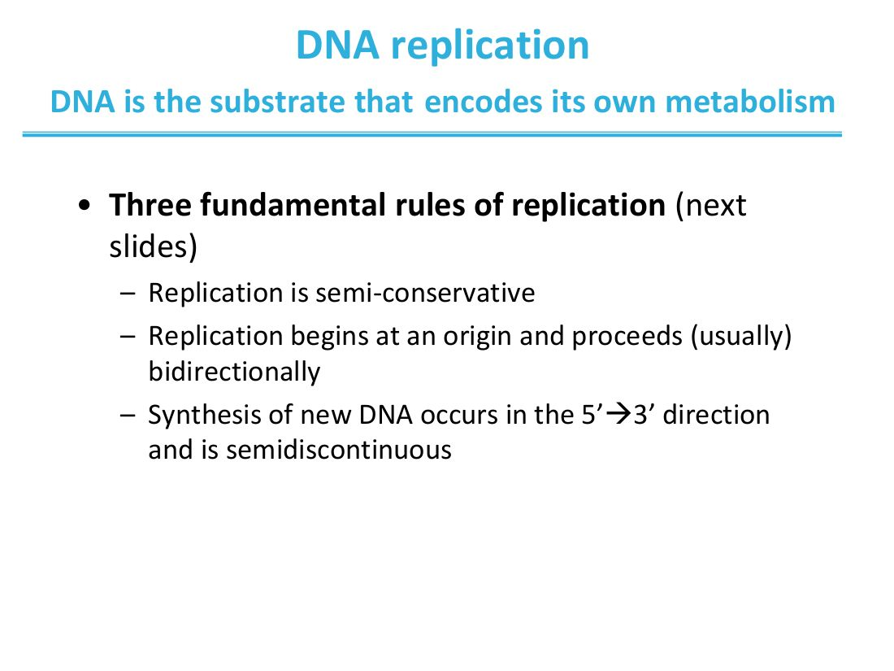
DNA is the substrate that encodes its own metabolism
DNA는 자기 자신의 대사를 암호화하는 기질이다
Three fundamental rules of replication (next slides)
복제의 세 가지 기본 규칙 (다음 슬라이드들)
Replication is semi-conservative
복제는 반보존적이다
Replication begins at an origin and proceeds (usually) bidirectionally
복제는 복제 원점(origin)에서 시작해 (보통) 양방향으로 진행된다
Synthesis of new DNA occurs in the 5'→3' direction and is semidiscontinuous
새 DNA의 합성은 5'→3' 방향으로 일어나며 반불연속적이다
시험 포인트세 규칙: 반보존적 / 원점에서 시작·양방향 / 5'→3'·반불연속. 각각을 증명한 실험(메셀슨-스탈 / 케언스·인만 / 오카자키)과 짝지어 기억하기.
그림 해설·더 깊이까지 보기 →슬라이드 4DNA 복제는 반보존적이다 — 메셀슨-스탈 실험 (그림 25-2)TB 2원문·번역
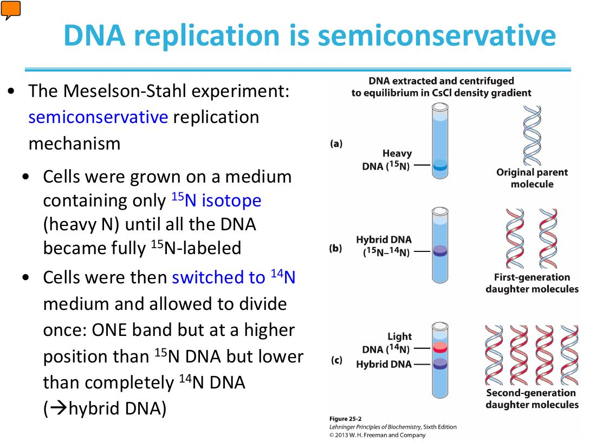
DNA replication is semiconservative
DNA 복제는 반보존적이다
The Meselson-Stahl experiment: semiconservative replication mechanism
메셀슨-스탈 실험: 반보존적 복제 메커니즘
Cells were grown on a medium containing only ¹⁵N isotope (heavy N) until all the DNA became fully ¹⁵N-labeled
세포를 ¹⁵N 동위원소(무거운 질소)만 들어 있는 배지에서, 모든 DNA가 완전히 ¹⁵N으로 표지될 때까지 키웠다
Cells were then switched to ¹⁴N medium and allowed to divide once: ONE band but at a higher position than ¹⁵N DNA but lower than completely ¹⁴N DNA (→hybrid DNA)
그다음 세포를 ¹⁴N 배지로 옮겨 한 번 분열시켰다: 띠가 하나 나왔는데, ¹⁵N DNA보다는 높은 위치, 완전한 ¹⁴N DNA보다는 낮은 위치였다 (→ 잡종 DNA)
Figure 25-2 / Lehninger Principles of Biochemistry, Sixth Edition / © 2013 W. H. Freeman and Company
그림 25-2 / 레닌저 생화학 원리 6판 / © 2013 W. H. Freeman and Company
DNA extracted and centrifuged to equilibrium in CsCl density gradient
DNA를 추출하여 CsCl(염화세슘) 밀도 기울기에서 평형에 이를 때까지 원심분리함
(a) Heavy DNA (¹⁵N) / Original parent molecule
(a) 무거운 DNA(¹⁵N) / 원래의 부모 분자
(b) Hybrid DNA (¹⁵N–¹⁴N) / First-generation daughter molecules
(b) 잡종 DNA(¹⁵N–¹⁴N) / 1세대 딸 분자
(c) Light DNA (¹⁴N) / Hybrid DNA / Second-generation daughter molecules
(c) 가벼운 DNA(¹⁴N) / 잡종 DNA / 2세대 딸 분자
테스트뱅크 2건 형광펜 = 실제로 물어본 문장TB 25-1
메셀슨-스탈(Meselson-Stahl) 실험이 확립한 것은:
- A DNA 중합효소가 DNA 합성에서 결정적인 역할을 한다는 것
- B 대장균(E. coli)의 DNA 합성이 보존적(conservative) 기전으로 진행된다는 것
- C 대장균의 DNA 합성이 반보존적(semiconservative) 기전으로 진행된다는 것
- D DNA 합성에 dATP, dCTP, dGTP, dTTP가 필요하다는 것
- E 대장균에서 새로 합성된 DNA는 기존 DNA와 염기 조성이 다르다는 것
정답·포인트 C 대장균의 DNA 합성이 반보존적(semiconservative) 기전으로 진행된다는 것 — ¹⁵N 배지 → ¹⁴N 배지 1세대 후 모든 DNA가 중간 밀도 → 각 이중나선이 부모 가닥 1개 + 새 가닥 1개 = 반보존적 복제.
TB 25-29단답·서술
[서술] 대장균의 DNA 복제가 반보존적이라는 것을 증명하는 데 평형 밀도 기울기 원심분리법이 어떻게 사용되었는지 간략히 설명하라.
정답·포인트 평형 밀도 기울기 원심분리법은 부력 밀도(buoyant density)가 약간 다른 DNA 분자들을 분리한다. 예를 들어 ¹⁵N으로 표지된('무거운') DNA를 가진 분자는 ¹⁴N('가벼운') DNA를 가진 동일한 분자와 분리될 수 있다. 메셀슨과 스탈은 ¹⁵N을 포함한 배지에서 대장균을 여러 세대 키워, 모든 DNA가 무거운 세포를 만들었다. 이 세포들을 ¹⁴N을 포함한 배지로 옮긴 후, 1, 2, 3, … 세대가 지난 뒤 DNA의 부력 밀도를 (평형 밀도 기울기 원심분리로) 측정했다. 1세대 후 모든 DNA는 완전히 무거운 것과 완전히 가벼운 것의 중간 밀도를 보였는데, 이는 각 이중가닥 DNA 분자가 무거운(부모) 가닥 하나와 가벼운(새로 합성된) 가닥 하나를 가진다는 것을 의미한다. 즉 복제는 반보존적이었다. (977쪽 그림 25-2 참조)
시험 포인트¹⁵N(무거움)에서 키운 뒤 ¹⁴N으로 옮겨 1회 분열 → 띠 1개(잡종, ¹⁵N보다 위·¹⁴N보다 아래), 2회 분열 → 잡종 + 가벼운 띠 (1:1). 원심분리 매질 = CsCl 밀도 기울기.
그림 해설·더 깊이까지 보기 →슬라이드 5원형 DNA의 복제는 양방향이다 — 케언스 실험 (그림 25-3)TB 1원문·번역
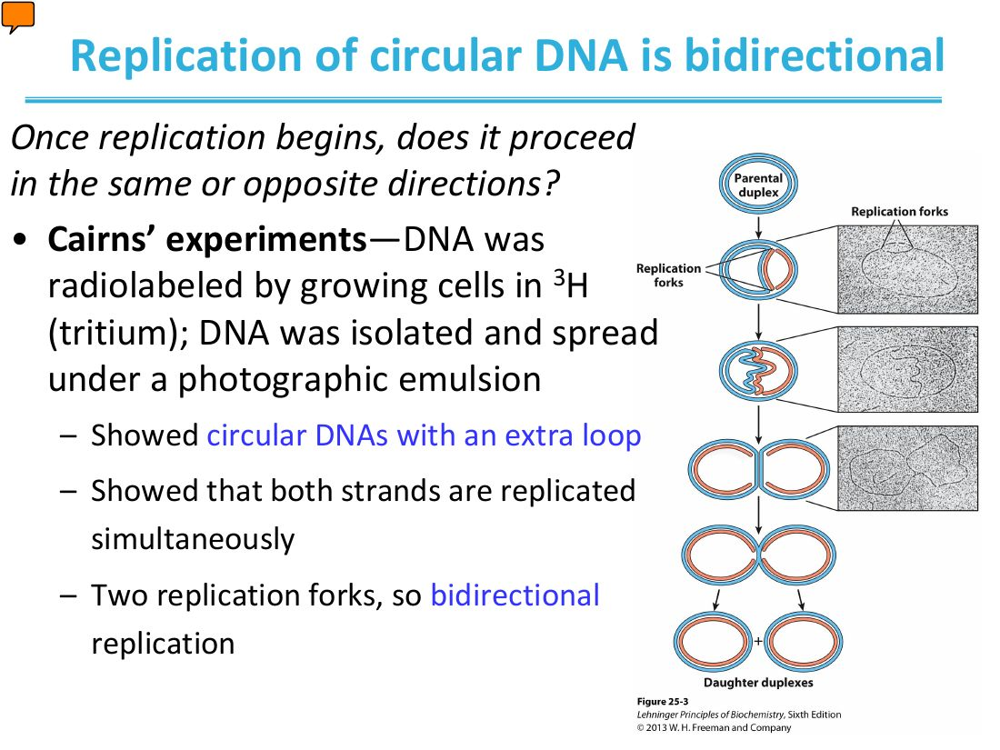
Replication of circular DNA is bidirectional
원형 DNA의 복제는 양방향이다
Once replication begins, does it proceed in the same or opposite directions?
복제가 일단 시작되면, 같은 방향으로 진행하는가, 반대 방향(양쪽)으로 진행하는가?
Cairns' experiments—DNA was radiolabeled by growing cells in ³H (tritium); DNA was isolated and spread under a photographic emulsion
케언스의 실험 — 세포를 ³H(삼중수소)에서 키워 DNA를 방사성 표지했다; DNA를 분리해 사진 유제(감광 필름) 아래에 펼쳤다
Showed circular DNAs with an extra loop
여분의 고리가 하나 더 있는 원형 DNA를 보여주었다
Showed that both strands are replicated simultaneously
두 가닥이 동시에 복제된다는 것을 보여주었다
Two replication forks, so bidirectional replication
복제 분기점이 두 개 → 따라서 양방향 복제
Figure 25-3 / Lehninger Principles of Biochemistry, Sixth Edition / © 2013 W. H. Freeman and Company
그림 25-3 / 레닌저 생화학 원리 6판 / © 2013 W. H. Freeman and Company
Parental duplex / Replication forks / Replication forks / Daughter duplexes
부모 이중나선 / 복제 분기점 / 복제 분기점 / 딸 이중나선
테스트뱅크 1건 형광펜 = 실제로 물어본 문장TB 25-2
DNA 분자가 양방향(bidirectionally)으로 복제된다고 할 때, 이는 그것이 두 개의 ______를 가진다는 뜻이다:
- A 사슬(chain)
- B 독립적으로 복제되는 분절
- C 기점(origin)
- D 복제 분기점(replication fork)
- E 종결 지점
정답·포인트 D 복제 분기점(replication fork) — 하나의 기점에서 시작해 두 개의 복제 분기점이 서로 반대 방향으로 이동.
시험 포인트케언스 = ³H 표지 + 사진 유제 → 여분 고리(θ) → 분기점 2개 → 양방향. (메셀슨-스탈 = 반보존, 인만 = 고유 원점과 구분!)
그림 해설·더 깊이까지 보기 →슬라이드 6변성 지도 작성법 — 복제는 고유한 원점에서 시작한다 (인만 실험)원문·번역

Denaturation mapping showed that replication starts at a unique origin
변성 지도 작성법은 복제가 고유한(단 하나의) 원점에서 시작함을 보여주었다
Can replication begin anywhere or does it always begin at the same location?
복제는 아무 곳에서나 시작할 수 있는가, 아니면 항상 같은 위치에서 시작하는가?
Inman's experiments:
인만의 실험:
Partially denature φλ DNA → "bubbles" at A=T-rich regions allow the position and progress of replication forks [denaturation mapping]
φλ(파지 람다) DNA를 부분적으로 변성시킨다 → A=T가 풍부한 부위에 생기는 '거품'으로 복제 분기점의 위치와 진행 정도를 알 수 있다 [변성 지도 작성법]
Showed that replication loops always initiate at a unique point, which is termed as origin
복제 고리가 항상 고유한 한 지점에서 시작하며, 이 지점을 원점(origin)이라 부른다는 것을 보여주었다
시험 포인트인만 = 부분 변성(A=T 풍부 부위 거품) = 변성 지도 작성법 → 고유한 원점. 실험 대상은 람다 파지(φλ) DNA.
그림 해설·더 깊이까지 보기 →슬라이드 7합성은 5'→3' 방향으로 진행된다 — 선도 가닥과 지연 가닥 (그림 25-4)TB 5원문·번역
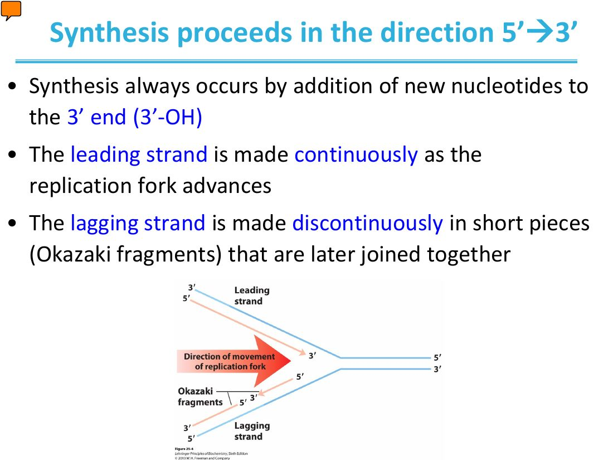
Synthesis proceeds in the direction 5'→3'
합성은 5'→3' 방향으로 진행된다
Synthesis always occurs by addition of new nucleotides to the 3' end (3'-OH)
합성은 항상 새 뉴클레오타이드를 3' 끝(3'-OH)에 더하는 방식으로 일어난다
The leading strand is made continuously as the replication fork advances
선도 가닥은 복제 분기점이 전진함에 따라 연속적으로 만들어진다
The lagging strand is made discontinuously in short pieces (Okazaki fragments) that are later joined together
지연 가닥은 짧은 조각(오카자키 절편)으로 불연속적으로 만들어지고, 이 조각들은 나중에 서로 이어진다
Figure 25-4 / Lehninger Principles of Biochemistry, Sixth Edition / © 2013 W. H. Freeman and Company
그림 25-4 / 레닌저 생화학 원리 6판 / © 2013 W. H. Freeman and Company
Leading strand / Direction of movement of replication fork / Okazaki fragments / Lagging strand / 3' / 5'
선도 가닥 / 복제 분기점의 이동 방향 / 오카자키 절편 / 지연 가닥 / 3' / 5'
테스트뱅크 5건 형광펜 = 실제로 물어본 문장TB 25-3
오카자키 절편(Okazaki fragment)은:
- A 핵산내부가수분해효소(endonuclease) 작용으로 생긴 DNA 절편
- B 30S 리보솜의 소단위인 RNA 절편
- C 3' → 5' 방향으로 합성되는 DNA 조각
- D 지연 가닥(lagging strand) 합성의 중간체인 DNA 분절
- E RNA 중합효소가 합성한 mRNA 분절
정답·포인트 D 지연 가닥(lagging strand) 합성의 중간체인 DNA 분절 — 지연 가닥은 짧은 조각(오카자키 절편, 각각 RNA 프라이머 + DNA)으로 불연속 합성된 뒤 연결된다. 모든 DNA 합성은 5'→3' 방향이므로 C는 틀림.
TB 25-30단답·서술
[서술] 아래 DNA는 왼쪽에서 오른쪽으로 복제된다. 선도 가닥 합성과 지연 가닥 합성의 주형을 각각 표시하라.
(5')ACTTCGGATCGTTAAGGCCGCTTTCTGT(3')
(3')TGAAGCCTAGCAATTCCGGCGAAAGACA(5')
정답·포인트 가닥들의 극성으로 볼 때, 위 가닥이 지연 가닥 합성의 주형이고, 아래 가닥이 선도 가닥 합성의 주형이다. (979쪽 그림 25-4 참조)
분기점이 오른쪽으로 이동 → 새 가닥이 오른쪽으로 5'→3' 연속 합성되려면 주형은 3'→5'(왼→오)여야 함 = 아래 가닥(3'…5') → 선도 가닥 주형. 위 가닥(5'…3')은 새 가닥이 왼쪽으로 자라야 하므로 불연속(지연).
TB 25-31단답·서술
[서술] 알려진 모든 DNA 중합효소는 5' → 3' 방향으로만 합성을 촉매한다. 그럼에도 불구하고 세포 내 반보존적 DNA 복제 동안, 이들은 두 딸 사슬의 합성을 모두 촉매할 수 있는데, 이는 겉보기에 3' → 5' 방향의 합성을 필요로 하는 것처럼 보인다. 세포에서 DNA 중합효소가 두 딸 사슬을 모두 합성할 수 있게 해주는 과정을 설명하라.
정답·포인트 DNA 복제 동안 한 가닥은 연속적으로 합성되고 다른 가닥은 불연속적 기전으로 합성된다. 3' → 5' 방향으로 자라는 것처럼 보이는 딸 사슬('지연 가닥')은 실제로는 새로운 사슬들의 개시가 계속 반복되고 그 사슬들이 5' → 3' 방향으로 신장됨으로써 합성되고 있는 것이다.
TB 25-32단답·서술
[서술] 오카자키 절편이란 무엇인가? 대장균에서 그것의 형성에 필요한 효소(들)는?
정답·포인트 오카자키 절편은 대장균 DNA 복제의 중간체이다. 짧은 RNA 프라이머의 3' 말단에 붙어 있는, 새로 합성된 짧은 DNA 절편이다. 이러한 절편은 지연 가닥 복제 동안 프라이메이스(프라이모솜의 일부)와 DNA 중합효소 III의 공동 작용으로 만들어진다. (987쪽 그림 25-13 참조)
시험 포인트새 뉴클레오타이드는 항상 3'-OH에 추가 = 5'→3' 합성. 선도 = 연속, 지연 = 불연속(오카자키 절편) → 나중에 연결(DNA 연결효소). 이 둘을 합쳐 반불연속.
그림 해설·더 깊이까지 보기 →슬라이드 8DNA는 핵산분해효소에 의해 분해된다TB 1원문·번역
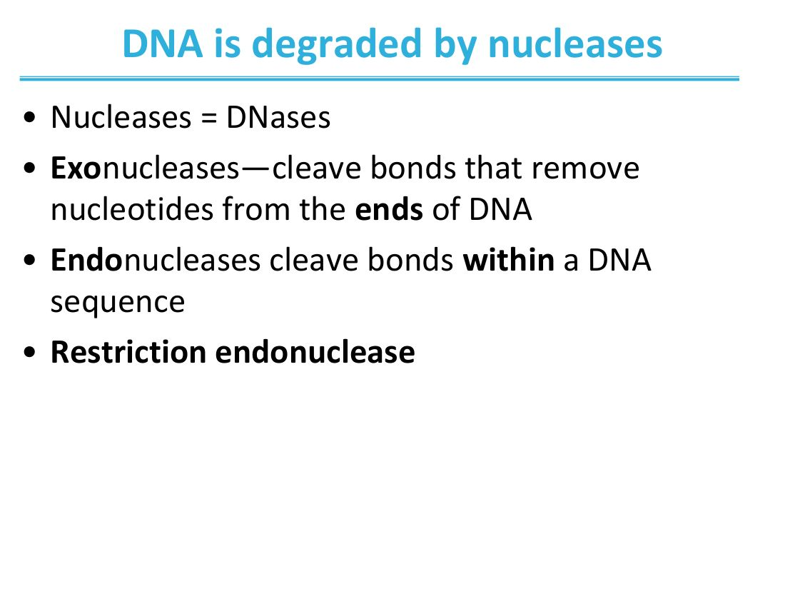
DNA is degraded by nucleases
DNA는 핵산분해효소(뉴클레이스)에 의해 분해된다
Nucleases = DNases
핵산분해효소(DNA를 자르는 것) = DNase
Exonucleases—cleave bonds that remove nucleotides from the ends of DNA
엑소뉴클레이스(핵산말단분해효소) — DNA의 끝에서 뉴클레오타이드를 제거하는 결합을 자른다
Endonucleases cleave bonds within a DNA sequence
엔도뉴클레이스(핵산내부분해효소)는 DNA 서열 내부의 결합을 자른다
Restriction endonuclease
제한 엔도뉴클레이스(제한효소)
테스트뱅크 1건 형광펜 = 실제로 물어본 문장TB 25-4
DNA와 상호작용하는 효소에 관한 다음 설명 중 옳은 것은?
- A 대장균 DNA 중합효소 I은 5' → 3' 핵산말단가수분해(exonucleolytic) 활성만을 가진다는 점에서 특이하다.
- B 핵산내부가수분해효소(endonuclease)는 원형 DNA는 분해하지만 선형 DNA는 분해하지 않는다.
- C 핵산말단가수분해효소(exonuclease)는 DNA를 자유 말단에서부터 분해한다.
- D 많은 DNA 중합효소는 교정(proofreading)용 5' → 3' 핵산말단가수분해효소를 가진다.
- E 프라이메이스(primase)는 이후의 합성을 개시하기 위한 짧은 DNA 가닥을 합성한다.
정답·포인트 C 핵산말단가수분해효소(exonuclease)는 DNA를 자유 말단에서부터 분해한다. — exonuclease = 말단에서, endonuclease = 내부에서 자름. A: Pol I은 3'→5'(교정) + 5'→3' 둘 다 있음. D: 교정은 3'→5'. E: 프라이메이스는 RNA 프라이머를 합성.
시험 포인트엑소 = 끝에서, 엔도 = 내부에서 자름. 제한 엔도뉴클레이스 = 엔도뉴클레이스의 일종(특정 서열 인식).
그림 해설·더 깊이까지 보기 →2
DNA 중합효소의 화학과 정확도
슬라이드 9–18
처음이라면 · 큰 그림부터
DNA 중합효소가 하는 일은 한 문장이에요. 주형을 보고 맞는 뉴클레오타이드를 골라 새 가닥 끝에 하나씩 붙인다. 재료는 인산이 세 개 달린 dNTP이고, 붙일 때 인산 두 개(피로인산)가 떨어져 나가면서 반응이 앞으로 진행돼요.
이 효소는 "처음부터"는 못 해요. 이미 있는 3' 끝에만 이을 수 있어서, 시작하려면 짧은 출발 가닥인 프라이머가 필요해요. 세포에서는 프라이메이스라는 효소가 RNA로 프라이머를 깔아 줘요.
그런데도 10억 개에 하나꼴로만 틀려요. 맞는 염기쌍만 효소의 주머니에 모양이 딱 맞아서 1차로 거르고, 틀린 걸 붙이면 한 칸 뒤로 물러나 잘라 내고 다시 붙여요(3'→5' 교정). 그래도 남은 실수는 나중에 불일치 수선(5단원)이 잡아요. 대장균에는 중합효소가 다섯 종 있는데, 복제의 주인공은 빠르고 오래 붙어 있는 Pol III, 프라이머를 지우고 틈을 메우는 뒷정리 담당이 Pol I이에요.
흐름 한 줄
주형 염기 읽기→맞는 dNTP 결합→3'-OH가 α-인산 공격→피로인산 이탈→한 칸 이동 (틀리면 교정)
이 단원에서 처음 나오는 말
- dNTP
- dATP, dGTP, dCTP, dTTP. DNA 합성의 재료.
- 진행성
- 중합효소가 DNA에서 떨어지지 않고 연속으로 붙이는 뉴클레오타이드 수.
- 교정(proofreading)
- 방금 붙인 염기가 틀렸을 때 3'→5' 엑소 활성으로 잘라 내는 기능.
- β 클램프
- DNA를 도넛처럼 감싸 Pol III가 떨어지지 않게 잡아 주는 고리 단백질.
여기부터 자세히
- 기질 = dNTP, 3'-OH가 α-인산 공격, 피로인산(β+γ) 이탈, Mg²⁺ 2개(위 = 공격, 아래 = 이탈)·Asp.
- 요구 조건 = 주형 + 프라이머(3'-OH, 주로 RNA). 정확도 = 기하학 + 3'→5' 교정 → 오류 10⁹~10¹⁰분의 1.
- Pol I: 5'→3' 엑소(닉 번역), 클레노 절편 / Pol III: 핵심 α·ε·θ + 클램프 로더 τ₂γδδ' + β 클램프(진행성).
뉴클레오타이드 하나를 붙이는 반응
재료는 dNTP. 자라는 사슬 끝의 3'-OH가 들어오는 dNTP의 α-인산을 공격하고, β·γ 인산(피로인산)이 떨어져 나가요. 활성 부위의 Mg²⁺ 두 개가 역할을 나눠요: 위쪽 Mg²⁺는 3'-OH의 공격을, 아래쪽 Mg²⁺는 피로인산의 이탈을 도와요. 두 Mg²⁺는 Asp 3개(그중 2개는 모든 중합효소에서 보존)가 잡고 있어요.
3'-OH가 없으면 반응을 시작할 수 없어서 주형과 함께 프라이머(3'-OH를 제공하는 짧은 상보 가닥, 세포에선 주로 RNA)가 꼭 필요해요. 효소는 손 모양(손바닥·손가락·엄지)이고, 들어온 뉴클레오타이드는 삽입 자리, 막 만든 염기쌍은 삽입 후 자리에 있다가 한 칸씩 이동해요. 떨어지기 전까지 붙이는 수 = 진행성.
정확도의 세 겹
① 염기쌍 기하학: A–T와 G–C는 모양이 같아 활성 부위에 꼭 맞고, 틀린 쌍은 수소결합을 해도 모양이 맞지 않아 배제돼요. ② 3'→5' 엑소 교정: 틀린 쌍은 다음 칸으로 넘어가지 못해 끝이 엑소 자리로 미끄러지고, 잘라낸 뒤(dCMP 방출) 다시 중합해요. ③ 그래도 남은 오류는 불일치 수선(5단원)이 고쳐요. 결과적으로 대장균 오류율은 10⁹~10¹⁰ bp당 1개.
대장균의 DNA 중합효소
| Pol I | Pol II | Pol III |
|---|
| 유전자 | polA | polB | polC (dnaE) |
| 소단위 | 1 | 7 | ≥10 |
| 3'→5' 엑소(교정) | O | O | O |
| 5'→3' 엑소 | O | X | X |
| 속도(nt/s) | 10–20 | 40 | 250–1,000 |
| 진행성 | 3–200 | 1,500 | ≥500,000 |
| 역할 | 프라이머 제거·틈 메우기 | 수선(II·IV·V) | 주 복제 효소 |
Pol I은 느리고 진행성이 낮으며, 이 유전자가 고장 난 균도 살아서 주 복제 효소가 아니에요. 대신 효소 앞쪽의 5'→3' 엑소로 앞 가닥(RNA 프라이머·손상 DNA)을 지우면서 뒤를 채우는 닉 번역을 해요. 단백질분해효소로 이 부분을 떼면 중합 + 교정만 남은 클레노 절편이 돼요.
Pol III 홀로효소 = 핵심 2개(α 중합, ε 3'→5' 교정, θ ε 안정화) + 클램프 로더(τ₂γδδ', γ 복합체) + β 클램프 2개(β 이량체 × 2 = β 4개). β 클램프는 DNA를 도넛처럼 감싸 미끄러지며 효소가 떨어지지 않게 해 진행성을 높여요.
이 단원 기출·테스트뱅크 14건 문제·정답은 슬라이드를 펼치거나 번역본에서- 20212016TB 25-5 Pol III = principal 슬라이드 15
- 2025단답·서술 표 25-1 숫자 → Pol II 슬라이드 15
- 2017 퀴즈 Pol I 없어도 생존·클레노 교정 O 슬라이드 15
- 2023 α 소단위가 DUE 결합(X) 슬라이드 15
- 2023 Pol I 기능 아닌 것(불일치 수선) 슬라이드 16
- 2016 클레노 = Pol I 단백질분해 절편 슬라이드 16
- 2017 퀴즈레닌저 연습문제단답·서술 3'→5' 엑소 실험 해석 슬라이드 14
- TB 25-6 DNA 중합효소의 교정(proofreading) 기능은 다음 중 어느 것을 제외하고… 슬라이드 14
- TB 25-7 대장균 DNA 중합효소 I의 5' → 3' 핵산말단가수분해 활성은 다음에 관여한다: 슬라이드 16
- TB 25-8 원핵생물의 DNA 중합효소 III은: 슬라이드 17
- TB 25-33단답·서술 DNA 사슬 말단의 디옥시리보스와 디옥시리보뉴클레오사이드 삼인산의 5' 인산 사이에… 슬라이드 9
- TB 25-34단답·서술 뉴클레오타이드 중합은 열역학적으로 균형 잡힌 반응처럼 보인다(포스포다이에스터 결합 … 슬라이드 9
- TB 25-35단답·서술 DNA 중합효소에 적합한 기질이 아래에 나와 있다. 프라이머와 주형을 표시하고, 각… 슬라이드 11
- TB 25-43단답·서술 DNA 복제의 높은 정확도는 주로 DNA 중합효소의 3' → 5' 핵산말단가수분해(… 슬라이드 13
이 단원 슬라이드 원문·번역 펼쳐서 보기
슬라이드 9DNA는 DNA 중합효소에 의해 합성된다기출 1TB 2원문·번역
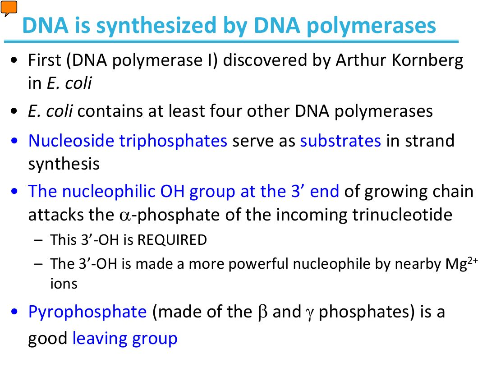
DNA is synthesized by DNA polymerases
DNA는 DNA 중합효소에 의해 합성된다
First (DNA polymerase I) discovered by Arthur Kornberg in E. coli
최초의 것(DNA 중합효소 I)은 아서 콘버그가 대장균에서 발견했다
E. coli contains at least four other DNA polymerases
대장균에는 적어도 네 가지의 다른 DNA 중합효소가 더 있다
Nucleoside triphosphates serve as substrates in strand synthesis
뉴클레오사이드 삼인산(dNTP)이 가닥 합성의 기질로 쓰인다
The nucleophilic OH group at the 3' end of growing chain attacks the α-phosphate of the incoming trinucleotide
자라는 사슬의 3' 끝에 있는 친핵성 OH기가 들어오는 삼인산 뉴클레오타이드의 α-인산을 공격한다
This 3'-OH is REQUIRED
이 3'-OH는 반드시 필요하다
The 3'-OH is made a more powerful nucleophile by nearby Mg²⁺ ions
3'-OH는 근처의 Mg²⁺ 이온 덕분에 더 강력한 친핵체가 된다
Pyrophosphate (made of the β and γ phosphates) is a good leaving group
피로인산(β·γ 인산으로 이루어짐)은 좋은 이탈기다
기출 1건 · 테스트뱅크 2건 형광펜 = 실제로 물어본 문장TB 25-33단답·서술
[서술] DNA 사슬 말단의 디옥시리보스와 디옥시리보뉴클레오사이드 삼인산의 5' 인산 사이에서 일어나는, DNA 중합효소가 촉매하는 반응을 도식화하라. 인산기의 화학 구조를 포함하고, 당과 염기의 위치를 표시하며, 일어나는 전자의 재배열을 보여라.
정답·포인트 980쪽 그림 25-5 참조.
핵심: 사슬 3' 말단의 3'-OH가 들어오는 dNTP의 α-인산(가장 안쪽 인)을 친핵 공격 → 새 포스포다이에스터 결합 형성 + 피로인산(PPi) 이탈. Mg²⁺ 2개가 관여.
TB 25-34단답·서술
[서술] 뉴클레오타이드 중합은 열역학적으로 균형 잡힌 반응처럼 보인다(포스포다이에스터 결합 하나가 끊기고 하나가 형성되므로). 그럼에도 이 반응은 시험관과 세포 모두에서 효율적으로 진행된다. 설명하라.
정답·포인트 중합된 DNA 산물에서의 염기 쌓임(base-stacking)과 염기쌍 형성 상호작용이 산물을 안정화하여 전체 반응을 더 발열적(exergonic)으로 만드는 경향이 있다. 세포에서는 피로인산가수분해효소(pyrophosphatase)가 중합 반응을 피로인산 산물의 매우 발열적인 가수분해와 짝지음으로써 기여할 수 있다.
시험 포인트기질 = dNTP, 공격 = 3'-OH → α-인산, 이탈기 = 피로인산(β+γ), Mg²⁺가 3'-OH의 친핵성↑. DNA Pol I 발견 = 아서 콘버그, 대장균엔 Pol 최소 5종.
그림 해설·더 깊이까지 보기 →슬라이드 10DNA 중합효소의 메커니즘 — 두 개의 Mg²⁺ (그림 25-5a)TB 1원문·번역

Mechanism of DNA Polymerases
DNA 중합효소의 메커니즘
Elongation of a DNA chain. (a) The catalytic mechanism for addition of a new nucleotide by DNA polymerase involves two Mg²⁺ ions, coordinated to the phosphate groups of the incoming nucleotide triphosphate, the 3'-hydroxyl group that will act as a nucleophile, and three Asp residues, two of which are highly conserved in all DNA polymerases.
DNA 사슬의 신장. (a) DNA 중합효소가 새 뉴클레오타이드를 추가하는 촉매 메커니즘에는 두 개의 Mg²⁺ 이온이 관여한다. 이 이온들은 들어오는 삼인산 뉴클레오타이드의 인산기, 친핵체로 작용할 3'-하이드록실기, 그리고 세 개의 Asp 잔기와 배위결합하고 있으며, 이 Asp 중 두 개는 모든 DNA 중합효소에서 고도로 보존되어 있다.
The Mg²⁺ ion depicted at the top facilitates attack of the 3'-hydroxyl group of the primer on the α phosphate of the nucleotide triphosphate; the other Mg²⁺ ion facilitates displacement of the pyrophosphate (made of the β and γ phosphates).
위쪽에 그려진 Mg²⁺ 이온은 프라이머의 3'-하이드록실기가 삼인산 뉴클레오타이드의 α 인산을 공격하는 것을 촉진하고, 다른 Mg²⁺ 이온은 피로인산의 이탈을 촉진한다 (피로인산은 β와 γ 인산으로 이루어짐).
Figure 25-5a / Lehninger Principles of Biochemistry, Sixth Edition / © 2013 W. H. Freeman and Company
그림 25-5a / 레닌저 생화학 원리 6판 / © 2013 W. H. Freeman and Company
DNA synthesis / DNA polymerase / Growing strand (primer) / Template strand / 5' / 3'
DNA 합성 / DNA 중합효소 / 자라는 가닥(프라이머) / 주형 가닥 / 5' / 3'
Mg²⁺ / Mg²⁺ / Asp / Asp / α / β / γ / 3' OH / Incoming dNTP
Mg²⁺ / Mg²⁺ / 아스파르트산(Asp) / Asp / α / β / γ / 3' OH / 들어오는 dNTP
G–C / T–A / C–G / A–T (base pairs) / C / A / G
G–C / T–A / C–G / A–T (염기쌍) / C / A / G
테스트뱅크 1건 형광펜 = 실제로 물어본 문장 시험 포인트Mg²⁺ 2개: 위쪽 = 3'-OH의 α-인산 공격 촉진, 아래쪽 = 피로인산(β·γ) 이탈 촉진. 배위 상대 = dNTP 인산기·3'-OH·Asp 3개(그중 2개 고도 보존). 위/아래 역할을 바꿔 낸 O/X 주의.
그림 해설·더 깊이까지 보기 →슬라이드 11DNA 중합효소의 두 가지 요구 조건 — 주형과 프라이머 (그림 25-5b)기출 1TB 1원문·번역
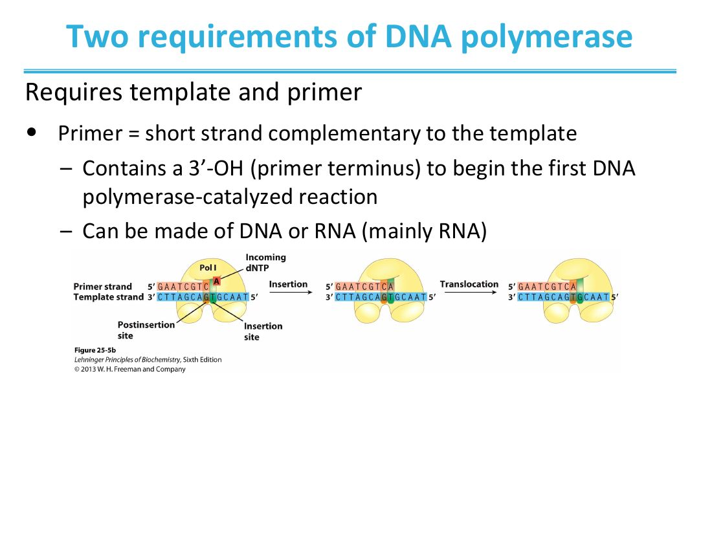
Two requirements of DNA polymerase
DNA 중합효소의 두 가지 요구 조건
Requires template and primer
주형과 프라이머를 필요로 한다
Primer = short strand complementary to the template
프라이머 = 주형에 상보적인 짧은 가닥
Contains a 3'-OH (primer terminus) to begin the first DNA polymerase-catalyzed reaction
DNA 중합효소가 촉매하는 첫 반응을 시작하기 위한 3'-OH(프라이머 말단)를 가지고 있다
Can be made of DNA or RNA (mainly RNA)
DNA 또는 RNA로 만들어질 수 있다 (주로 RNA)
Figure 25-5b / Lehninger Principles of Biochemistry, Sixth Edition / © 2013 W. H. Freeman and Company
그림 25-5b / 레닌저 생화학 원리 6판 / © 2013 W. H. Freeman and Company
Pol I / Incoming dNTP / Primer strand 5' GAATCGTC / Template strand 3' CTTAGCAGTGCAAT 5'
Pol I(DNA 중합효소 I) / 들어오는 dNTP / 프라이머 가닥 5' GAATCGTC / 주형 가닥 3' CTTAGCAGTGCAAT 5'
Postinsertion site / Insertion site / Insertion / Translocation
삽입 후 자리 / 삽입 자리 / 삽입 / 자리 옮김(전위)
기출 1건 · 테스트뱅크 1건 형광펜 = 실제로 물어본 문장TB 25-35단답·서술
[서술] DNA 중합효소에 적합한 기질이 아래에 나와 있다. 프라이머와 주형을 표시하고, 각 가닥의 어느 쪽 끝이 3' 또는 5'여야 하는지 표시하라.
[그림]
시험관 내에서 이 기질로 DNA 합성을 관찰하려면, 어떤 반응 구성요소를 추가로 넣어야 하는가?
정답·포인트 위 가닥(프라이머)은 5' 말단이 왼쪽에 있다; 아래(주형) 가닥은 반대 극성을 가진다. 이 기질로 시험관 내 DNA 합성을 하려면 DNA 중합효소, 4가지 디옥시뉴클레오사이드 삼인산(dNTP), Mg²⁺, 그리고 적절한 완충액을 넣어야 한다.
시험 포인트요구 조건 = 주형 + 프라이머. 프라이머 = 주형에 상보적인 짧은 가닥, 3'-OH(프라이머 말단) 제공, DNA·RNA 둘 다 가능하지만 주로 RNA. 삽입 자리 vs 삽입 후 자리 구분.
그림 해설·더 깊이까지 보기 →슬라이드 12DNA 중합효소의 특징 — 손 모양 구조와 진행성 (그림 25-6)원문·번역
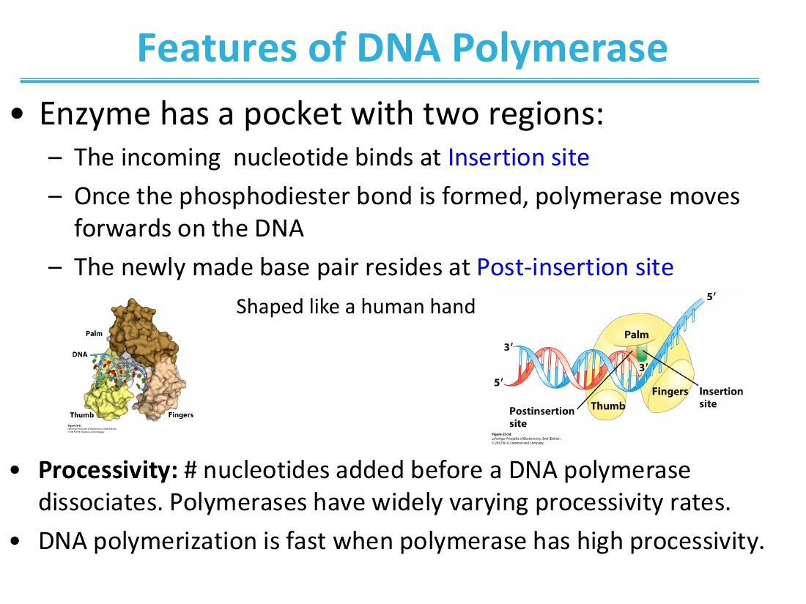
Features of DNA Polymerase
DNA 중합효소의 특징
Enzyme has a pocket with two regions:
효소에는 두 영역으로 된 주머니가 있다:
The incoming nucleotide binds at Insertion site
들어오는 뉴클레오타이드는 삽입 자리에 결합한다
Once the phosphodiester bond is formed, polymerase moves forwards on the DNA
인산다이에스터 결합이 형성되면, 중합효소는 DNA 위에서 앞으로 이동한다
The newly made base pair resides at Post-insertion site
새로 만들어진 염기쌍은 삽입 후 자리에 머문다
Shaped like a human hand
사람의 손처럼 생겼다
(left figure) Palm / DNA / Thumb / Fingers
(왼쪽 그림) 손바닥 / DNA / 엄지 / 손가락
(right figure) Palm / Fingers / Thumb / Insertion site / Postinsertion site / 3' / 5'
(오른쪽 그림) 손바닥 / 손가락 / 엄지 / 삽입 자리 / 삽입 후 자리 / 3' / 5'
Processivity: # nucleotides added before a DNA polymerase dissociates. Polymerases have widely varying processivity rates.
진행성: DNA 중합효소가 떨어져 나가기 전까지 추가하는 뉴클레오타이드의 수. 중합효소마다 진행성은 매우 다양하다.
DNA polymerization is fast when polymerase has high processivity.
중합효소의 진행성이 높으면 DNA 중합이 빠르다.
시험 포인트손 구조 = 손바닥(활성 부위)·손가락·엄지. 들어오는 뉴클레오타이드 → 삽입 자리, 새로 만든 염기쌍 → 삽입 후 자리. 진행성 = 떨어지기 전까지 붙이는 뉴클레오타이드 수, 높을수록 중합이 빠름.
그림 해설·더 깊이까지 보기 →슬라이드 13복제는 매우 정확하다 — 염기쌍의 기하학 (그림 25-7)TB 1원문·번역

Replication is very accurate
복제는 매우 정확하다
Discrimination between correct and incorrect nucleotides relies on both H-bonding and geometry of base pairing
맞는 뉴클레오타이드와 틀린 뉴클레오타이드의 구별은 염기쌍의 수소결합과 기하학적 모양 둘 다에 의존한다
* Geometry of base pairing accounts for high fidelity
* 염기쌍의 기하학적 모양이 높은 정확도(충실도)를 설명한다
Errors in E. coli: 1/10⁹ – 1/10¹⁰ bp
대장균의 오류율: 10⁹~10¹⁰ 염기쌍당 1개
Incorrect nucleotide may be able to H-bond with base in a template, but will not fit into the active site of DNA polymerase.
틀린 뉴클레오타이드도 주형의 염기와 수소결합은 할 수 있지만, DNA 중합효소의 활성 부위에 들어맞지 않는다.
Active site of DNA polymerase excludes base pairs with incorrect geometry
DNA 중합효소의 활성 부위는 잘못된 기하학적 모양의 염기쌍을 배제한다
BUT DNA polymerases still insert wrong base and repair mechanisms fix these errors
그러나 DNA 중합효소는 여전히 틀린 염기를 끼워 넣으며, 수선 메커니즘이 이 오류를 고친다
(a) The standard A-T & G-C base pairings have very similar geometry
(a) 표준 A-T 및 G-C 염기쌍은 기하학적 모양이 매우 비슷하다
(a) Correct base pairs / Active site shape
(a) 올바른 염기쌍 / 활성 부위의 모양
(b) Incorrect base pairs
(b) 잘못된 염기쌍
C–G / T–A (correct); T–G / C–A / A–G (incorrect) / CH₃ / H / N / O
C–G / T–A (올바름); T–G / C–A / A–G (잘못됨) / CH₃(메틸기) / H / N / O
테스트뱅크 1건 형광펜 = 실제로 물어본 문장TB 25-43단답·서술
[서술] DNA 복제의 높은 정확도는 주로 DNA 중합효소의 3' → 5' 핵산말단가수분해(교정) 활성에 의한 즉각적인 오류 수정 덕분이다. 일부 잘못 짝지어진 염기는 이 교정을 빠져나가고, DNA의 화학적 온전성에 대한 위협으로부터 추가 오류가 생길 수 있다. 세포가 이러한 오류를 고치는 데 사용할 수 있는 네 가지 부류의 수선 기전을 나열하라.
정답·포인트 네 가지 부류는 994쪽 표 25-5에 나와 있으며, (1) 불일치 수선(mismatch repair), (2) 염기 절제 수선(base-excision repair), (3) 뉴클레오타이드 절제 수선(nucleotide-excision repair), (4) 직접 수선(direct repair)으로 구성된다.
시험 포인트구별 근거 = 수소결합 + 기하학, 높은 충실도의 주된 이유 = 기하학. 대장균 오류율 1/10⁹~1/10¹⁰ bp. '틀린 염기는 수소결합을 아예 못 한다'(X — 할 수 있지만 활성 부위에 안 맞음).
그림 해설·더 깊이까지 보기 →슬라이드 14합성 중 오류는 3'→5' 엑소뉴클레이스 활성으로 교정된다 (그림 25-8)기출 1TB 2원문·번역

Errors during synthesis are corrected by 3' → 5' exonuclease activity
합성 중의 오류는 3'→5' 엑소뉴클레이스 활성으로 교정된다
An example of error correction by the 3'→5' exonuclease activity of DNA polymerase I.
DNA 중합효소 I의 3'→5' 엑소뉴클레이스 활성에 의한 오류 교정의 예.
The exonuclease activity is located behind the polymerase activity (separated active sites within the same polypeptide). A mismatched base (here, a C–T mismatch) impedes translocation of DNA polymerase I to the next site. The DNA bound to the enzyme slides backward into the exonuclease site, and the enzyme corrects the mistake with its 3'→5' exonuclease activity (Proof Reading). The enzyme then resumes its polymerase activity in the 5'→3' direction.
엑소뉴클레이스 활성 자리는 중합효소 활성 자리 뒤쪽에 있다(같은 폴리펩타이드 안에 분리된 활성 부위). 잘못 짝지어진 염기(여기서는 C–T 불일치)는 DNA 중합효소 I이 다음 자리로 이동하는 것을 방해한다. 효소에 결합된 DNA는 뒤로 미끄러져 엑소뉴클레이스 자리로 들어가고, 효소는 3'→5' 엑소뉴클레이스 활성으로 실수를 바로잡는다(교정, Proof Reading). 그런 다음 효소는 5'→3' 방향으로 중합 활성을 다시 시작한다.
① Polymerase mispairs dC with dT.
① 중합효소가 dC를 dT와 잘못 짝짓는다.
Exonuclease site / Postinsertion site / Insertion site / 5' GAATCCTGC 3' / 3' CTTAGGACTGACGACTA 5'
엑소뉴클레이스 자리 / 삽입 후 자리 / 삽입 자리 / 5' GAATCCTGC 3' / 3' CTTAGGACTGACGACTA 5'
② Polymerase repositions the mispaired 3' terminus into the 3'→5' exonuclease site.
② 중합효소가 잘못 짝지어진 3' 말단을 3'→5' 엑소뉴클레이스 자리로 재배치한다.
③ Exonuclease hydrolyzes the mispaired dC. / dCMP
③ 엑소뉴클레이스가 잘못 짝지어진 dC를 가수분해한다. / dCMP (떨어져 나온 산물)
④ The 3' terminus repositions back to the polymerase site.
④ 3' 말단이 다시 중합효소 자리로 돌아간다.
⑤ Polymerase incorporates the correct nucleotide, dA. / dATP
⑤ 중합효소가 올바른 뉴클레오타이드인 dA를 끼워 넣는다. / dATP (들어오는 기질)
기출 1건 · 테스트뱅크 2건 형광펜 = 실제로 물어본 문장2017 퀴즈레닌저 연습문제단답·서술
[주관식, 레닌저 연습문제] 새 DNA 중합효소를 dNTP 없이 [³²P] DNA와 두면 [³²P]dNMP가 유리되고, dNTP를 넣으면 억제된다 — 이 효소의 특징은? dNTP 대신 피로인산을 넣으면?
정답·포인트 3'→5' 엑소뉴클레이스(교정) 활성이 있다(dNTP가 있으면 중합이 우세해 분해가 가려짐). 피로인산을 넣으면 중합의 역반응(피로인산 분해)으로 dNTP가 생성돼요.
TB 25-6
DNA 중합효소의 교정(proofreading) 기능은 다음 중 어느 것을 제외하고 모두 관여한다:
- A 3' → 5' 핵산말단가수분해효소
- B 염기쌍 형성
- C 잘못 짝지어진 염기쌍의 검출
- D 포스포다이에스터 결합의 가수분해
- E 중합 반응의 역반응
정답·포인트 E 중합 반응의 역반응 — 교정은 잘못 붙은 뉴클레오타이드를 3'→5' exonuclease로 가수분해해 제거하는 것이지, 중합 반응을 거꾸로 돌리는(피로인산 분해) 것이 아니다.
시험 포인트교정 = 3'→5' 엑소뉴클레이스(중합 자리 뒤쪽, 같은 폴리펩타이드에 별도 활성 부위). 불일치 → 자리 옮김(translocation) 방해 → 엑소 자리로 미끄러짐 → 제거(dCMP 방출) → 5'→3' 중합 재개.
그림 해설·더 깊이까지 보기 →슬라이드 15대장균에는 적어도 다섯 가지 DNA 중합효소가 있다 (표 25-1)기출 4원문·번역
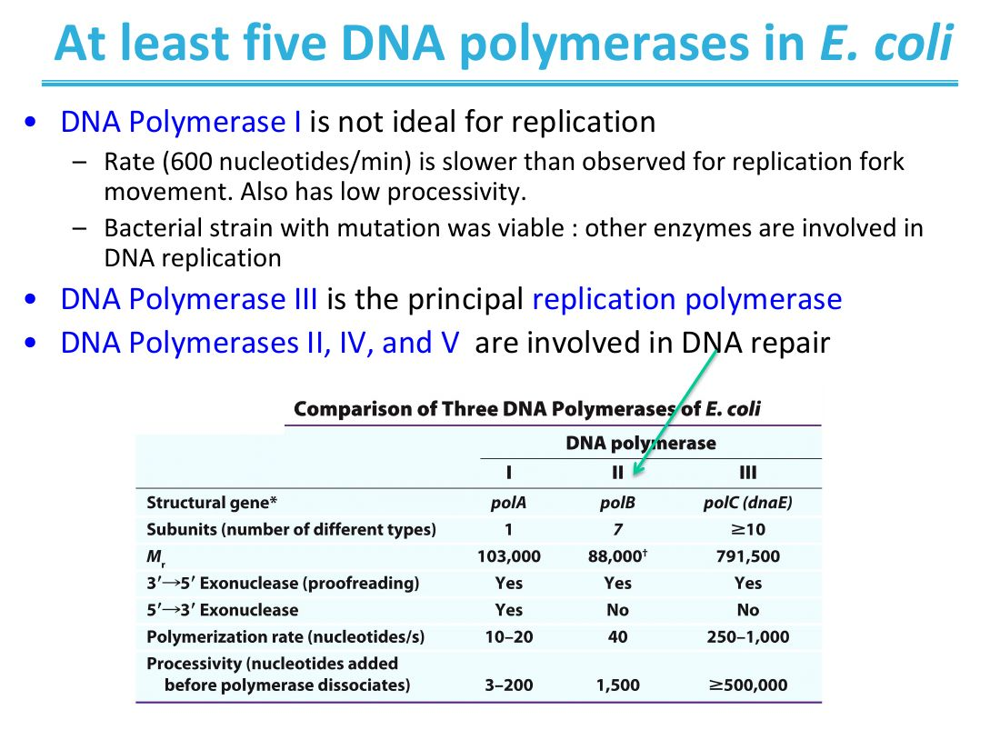
At least five DNA polymerases in E. coli
대장균에는 적어도 다섯 가지 DNA 중합효소가 있다
DNA Polymerase I is not ideal for replication
DNA 중합효소 I은 복제에 이상적이지 않다
Rate (600 nucleotides/min) is slower than observed for replication fork movement. Also has low processivity.
속도(분당 600 뉴클레오타이드)가 실제 관찰되는 복제 분기점 이동 속도보다 느리다. 또한 진행성도 낮다.
Bacterial strain with mutation was viable : other enzymes are involved in DNA replication
(Pol I 유전자에) 돌연변이가 있는 세균 균주도 살아남았다: 즉 다른 효소들이 DNA 복제에 관여한다
DNA Polymerase III is the principal replication polymerase
DNA 중합효소 III가 주된 복제 중합효소다
DNA Polymerases II, IV, and V are involved in DNA repair
DNA 중합효소 II, IV, V는 DNA 수선에 관여한다
Comparison of Three DNA Polymerases of E. coli
대장균의 세 가지 DNA 중합효소 비교 (표 25-1)
DNA polymerase: I / II / III
DNA 중합효소: I / II / III
Structural gene*: polA / polB / polC (dnaE)
구조 유전자*: polA / polB / polC (dnaE)
Subunits (number of different types): 1 / 7 / ≥10
소단위체(서로 다른 종류의 수): 1 / 7 / ≥10
Mr: 103,000 / 88,000† / 791,500
분자량(Mr): 103,000 / 88,000† / 791,500
3'→5' Exonuclease (proofreading): Yes / Yes / Yes
3'→5' 엑소뉴클레이스(교정): 있음 / 있음 / 있음
5'→3' Exonuclease: Yes / No / No
5'→3' 엑소뉴클레이스: 있음 / 없음 / 없음
Polymerization rate (nucleotides/s): 10–20 / 40 / 250–1,000
중합 속도(초당 뉴클레오타이드): 10–20 / 40 / 250–1,000
Processivity (nucleotides added before polymerase dissociates): 3–200 / 1,500 / ≥500,000
진행성(중합효소가 떨어지기 전까지 추가하는 뉴클레오타이드 수): 3–200 / 1,500 / ≥500,000
기출 4건 형광펜 = 실제로 물어본 문장2025단답·서술
[단답] 다음 특성의 대장균 DNA 중합효소는? — Subunits 7 / Mr 88,000 / 3'→5' exo Yes / 5'→3' exo No / 속도 40 / 진행성 1,500
정답·포인트 DNA polymerase II. 표 25-1 숫자를 그대로 물어봤어요 → Pol I·III 칸도 전부 외우기.
2017 퀴즈
원핵 DNA 중합효소에 대해 틀린 것 — 교정 기능 있음 / 한 효소에 β 소단위 4개 / Pol I이 없으면 세균이 죽는다 / 진행성 Pol II > Pol I / 클레노 절편은 교정 기능이 없다
정답·포인트 틀린 것: Pol I 없으면 죽는다(돌연변이 균주 생존), 클레노 절편은 교정 있음(5'→3' 엑소만 없음). β 4개(이량체 ×2), 진행성 1,500 > 3–200은 맞음.
20212016TB 25-5
E. coli DNA polymerase III: can initiate replication without a primer / is efficient at nick translation / is the principal DNA polymerase in chromosomal DNA replication / represents over 90% of the DNA polymerase activity / requires a free 5'-hydroxyl group as a primer
정답·포인트 ③ principal DNA polymerase. 프라이머 필요(3'-OH), 닉 번역은 Pol I, 세포 내 활성의 90% 이상은 Pol I.
2023
E. coli DNA 중합효소에 관해 아닌 것 — β 슬라이딩 클램프가 진행성 결정 / α 소단위 2개가 DUE에 결합 / Pol III가 주 복제효소 / Pol II·IV·V는 수선 / Pol III는 DnaB에 결합해 함께 이동
정답·포인트 α 소단위 2개가 DUE에 결합이 틀림(DUE 근처에 붙는 건 DnaA, α는 중합 소단위).
시험 포인트표 숫자 그대로 출제 가능: 유전자 polA/polB/polC(dnaE), 소단위 1/7/≥10, Mr 103,000/88,000/791,500, 교정(3'→5') 셋 다 있음, 5'→3' 엑소는 Pol I만, 속도 10–20/40/250–1,000, 진행성 3–200/1,500/≥500,000. Pol I 부적합 이유 2가지(느림·낮은 진행성 + 돌연변이 균주 생존).
그림 해설·더 깊이까지 보기 →슬라이드 16DNA 중합효소 I은 5'→3' 엑소뉴클레이스 활성도 있다 — 클레노 절편과 닉 번역 (그림 25-9)기출 4TB 2원문·번역

DNA Polymerase I also has a 5' → 3'-exonuclease activity
DNA 중합효소 I은 5'→3' 엑소뉴클레이스 활성도 가지고 있다
5'→3' exonuclease domain is located in front of the enzyme and can be separated by protease treatment. The remaining fragment (Klenow fragment, Large fragment) retains polymerization and proofreading activities
5'→3' 엑소뉴클레이스 도메인은 효소의 앞쪽에 위치하며, 단백질분해효소 처리로 떼어낼 수 있다. 남은 절편(클레노 절편, 큰 절편)은 중합 활성과 교정 활성을 그대로 가진다
Nick translation. By degrading the DNA strand ahead of the enzyme and synthesizing a new strand behind, DNA polymerase I can promote a nick translation, where a break or nick in the DNA is effectively moved along with the enzyme. DNA synthesis begins at a nick (a broken phosphodiester bond, leaving a free 3' hydroxyl and a free 5' phosphate). A nick remains where DNA polymerase I eventually dissociates, and the nick is later sealed by another enzyme. This process has a role in DNA repair and in the removal of RNA primers during replication.
닉 번역. 효소 앞쪽의 DNA 가닥을 분해하고 뒤쪽에 새 가닥을 합성함으로써, DNA 중합효소 I은 닉 번역을 일으킬 수 있다. 닉 번역이란 DNA의 끊긴 곳(닉)이 사실상 효소와 함께 이동하는 것이다. DNA 합성은 닉(인산다이에스터 결합이 끊겨 자유 3' 하이드록실과 자유 5' 인산이 남은 곳)에서 시작된다. DNA 중합효소 I이 결국 떨어져 나간 자리에는 닉이 남고, 이 닉은 나중에 다른 효소에 의해 봉합된다. 이 과정은 DNA 수선과, 복제 중 RNA 프라이머 제거에 역할을 한다.
3'→5' exonuclease / Pol I / 5'→3' exonuclease / Nick / Nucleic acid to be removed / Postinsertion site / Insertion site
3'→5' 엑소뉴클레이스 / Pol I / 5'→3' 엑소뉴클레이스 / 닉 / 제거될 핵산 / 삽입 후 자리 / 삽입 자리
NMPs or dNMPs released / dNTPs added and PPᵢ released / Pol I movement
NMP 또는 dNMP 방출 / dNTP 추가 및 PPᵢ 방출 / Pol I의 이동 방향
dNTPs / NMPs or dNMPs, PPᵢ
dNTP(들어감) / NMP 또는 dNMP, PPᵢ(나옴)
기출 4건 · 테스트뱅크 2건 형광펜 = 실제로 물어본 문장2023
DNA Pol I의 기능이 아닌 것 — primer 제거 / mismatch repair / nick translation / base excision repair / nucleotide excision repair
정답·포인트 mismatch repair — 불일치 수선의 틈은 Pol III가 메워요. Pol I은 프라이머 제거·닉 번역·BER·NER(세균).
2016
Klenow fragment를 설명하는 것 — helicase II / small fragment라고도 함 / 교정 기능 없음 / 중합 활성 없음 / DNA Pol(I)의 proteolytic fragment
정답·포인트 Pol I의 단백질분해(proteolytic) 절편. '큰(large) 절편'이고 중합 + 교정(3'→5')은 있음.
TB 25-7
대장균 DNA 중합효소 I의 5' → 3' 핵산말단가수분해 활성은 다음에 관여한다:
- A DNA 복제 기점에서 닉(nick) 형성
- B 오카자키 절편 형성
- C 복제 과정의 교정
- D 닉 이동(nick translation)에 의한 RNA 프라이머 제거
- E 리가아제 작용에 의한 닉 봉합
정답·포인트 D 닉 이동(nick translation)에 의한 RNA 프라이머 제거 — Pol I은 5'→3' exonuclease로 앞쪽의 RNA 프라이머를 제거하면서 동시에 DNA로 채워 넣음(닉 이동).
시험 포인트5'→3' 엑소 = 효소 앞쪽(3'→5' 엑소는 뒤쪽). 단백질분해효소 처리 후 남는 클레노 절편(큰 절편) = 중합 + 교정(3'→5') 유지, 5'→3' 엑소 없음. 닉 = 자유 3'-OH + 자유 5'-인산. 닉 번역의 역할 = 수선 + RNA 프라이머 제거.
그림 해설·더 깊이까지 보기 →슬라이드 17DNA 중합효소 III는 10종류의 소단위로 된 복잡한 구조다 (표 25-2)기출 2TB 1원문·번역

DNA Polymerase III is a complex structure with 10 types of subunits
DNA 중합효소 III는 10종류의 소단위로 된 복잡한 구조다
Two core domains of α, ε, and θ subunits
α, ε, θ 소단위로 된 두 개의 핵심(core) 도메인
The core domains are linked by the clamp loader (τ₂γδδ')
핵심 도메인들은 클램프 로더(τ₂γδδ')로 연결된다
The core domains each interact with a dimer of β subunits that increases the processivity of the complex
각 핵심 도메인은 β 소단위 이량체와 상호작용하며, 이것이 복합체의 진행성을 높인다
Subunits of DNA Polymerase III of E. coli (Table 25-2)
대장균 DNA 중합효소 III의 소단위 (표 25-2)
Subunit / Number of subunits per holoenzyme / Mr of subunit / Gene / Function of subunit
소단위 / 홀로효소당 소단위 수 / 소단위 분자량 / 유전자 / 소단위의 기능
α: 2 / 129,900 / polC (dnaE) / Polymerization activity
α(알파): 2 / 129,900 / polC (dnaE) / 중합 활성
ε (epsilon): 2 / 27,500 / dnaQ (mutD) / 3'→5' Proofreading exonuclease
ε(엡실론): 2 / 27,500 / dnaQ (mutD) / 3'→5' 교정 엑소뉴클레이스
θ (theta): 2 / 8,600 / holE / Stabilization of ε subunit
θ(세타): 2 / 8,600 / holE / ε 소단위의 안정화
→ α, ε, θ = Core polymerase
→ α, ε, θ = 핵심 중합효소(core polymerase)
τ: 2 / 71,100 / dnaX / Stable template binding; core enzyme dimerization
τ(타우): 2 / 71,100 / dnaX / 안정적인 주형 결합; 핵심 효소의 이량체화
γ: 1 / 47,500 / dnaX* / Clamp loader
γ(감마): 1 / 47,500 / dnaX* / 클램프 로더
δ: 1 / 38,700 / holA / Clamp opener
δ(델타): 1 / 38,700 / holA / 클램프 여는 것
δ': 1 / 36,900 / holB / Clamp loader
δ'(델타 프라임): 1 / 36,900 / holB / 클램프 로더
→ Clamp-loading (γ) complex that loads β subunits on lagging strand at each Okazaki fragment
→ 클램프 로딩(γ) 복합체: 오카자키 절편마다 지연 가닥에 β 소단위를 올려놓는다
χ (chi): 1 / 16,600 / holC / Interaction with SSB
χ(카이): 1 / 16,600 / holC / SSB와의 상호작용
ψ (psi): 1 / 15,200 / holD / Interaction with γ and χ
ψ(프사이): 1 / 15,200 / holD / γ 및 χ와의 상호작용
β: 4 (circled) / 40,600 / dnaN / DNA clamp required for optimal processivity
β(베타): 4(동그라미 표시) / 40,600 / dnaN / 최적의 진행성에 필요한 DNA 클램프
(a) Pol III core (α, ε, θ) / Pol III core (α, ε θ) / τ / γ / δ / δ' / β sliding clamp / Clamp loader
(a) Pol III 핵심(α, ε, θ) / Pol III 핵심(α, ε, θ) / τ / γ / δ / δ' / β 슬라이딩 클램프 / 클램프 로더
기출 2건 · 테스트뱅크 1건 형광펜 = 실제로 물어본 문장TB 25-8
원핵생물의 DNA 중합효소 III은:
- A 복제 정확도를 높이기 위한 5' → 3' 교정 활성을 가진다.
- B 복제 개시에 프라이머 분자가 필요 없다.
- C 원형 클램프로 작용하여 DNA 합성의 진행성(processivity)을 높이는 β 소단위를 가진다.
- D DNA를 3' → 5' 방향으로 합성한다.
- E 선도 가닥만 합성하고, DNA 중합효소 I이 지연 가닥을 합성한다.
정답·포인트 C 원형 클램프로 작용하여 DNA 합성의 진행성(processivity)을 높이는 β 소단위를 가진다. — β 소단위 = 이량체 고리형 '미끄럼 클램프(sliding clamp)' → DNA에서 떨어지지 않고 계속 합성. 교정은 3'→5'(ε 소단위).
시험 포인트핵심 = α(중합)·ε(3'→5' 교정, dnaQ/mutD)·θ(ε 안정화), 클램프 로더 = τ₂γδδ'(δ = 클램프 '여는 것', γ·δ' = 로더, τ = 주형 결합·핵심 이량체화), χ = SSB와 상호작용, ψ = γ·χ와 상호작용, β = 4개(이량체 ×2), dnaN, 진행성. 소단위 '10종류'.
그림 해설·더 깊이까지 보기 →슬라이드 18DNA 중합효소 III — 핵심·클램프 로더·β 클램프 구조 (그림 25-11 계열)기출 2TB 2원문·번역

DNA Polymerase III
DNA 중합효소 III
DNA polymerase III
DNA 중합효소 III
(a) Two core domains are linked by a five-subunit clamp-loading complex (also known as the γ complex) with the composition τ₂γδδ'. Two β clamps (each clamp has a dimer of β subunits) interact with the two-core subassembly.
(a) 두 핵심 도메인은 τ₂γδδ' 조성을 가진 5개 소단위의 클램프 로딩 복합체(γ 복합체라고도 함)로 연결된다. 두 개의 β 클램프(각 클램프는 β 소단위 이량체)가 두 핵심으로 된 하위 조립체와 상호작용한다.
(b) Two β subunits of E. coli polymerase III form a circular clamp that surrounds the DNA. The clamp slides along the DNA molecule, increasing the processivity of the DNA polymerase III by preventing its dissociation from the DNA. The two β subunits are shown in two shades of purple as ribbon structures (left) and surface images (right), surrounding the DNA.
(b) 대장균 중합효소 III의 β 소단위 두 개는 DNA를 둘러싸는 원형 클램프를 형성한다. 클램프는 DNA 분자를 따라 미끄러지며, DNA 중합효소 III가 DNA에서 떨어져 나가는 것을 막아 진행성을 높인다. 두 β 소단위는 두 가지 보라색 음영으로, 리본 구조(왼쪽)와 표면 이미지(오른쪽)로 DNA를 둘러싼 모습으로 표시되어 있다.
(a) Pol III core (α, ε, θ) / Pol III core (α, ε θ) / τ / τ / γ / δ / δ' / β sliding clamp / β sliding clamp / Clamp loader
(a) Pol III 핵심(α, ε, θ) / Pol III 핵심(α, ε, θ) / τ / τ / γ / δ / δ' / β 슬라이딩 클램프 / β 슬라이딩 클램프 / 클램프 로더
(b) (ribbon structure, surface image)
(b) (리본 구조, 표면 이미지)
기출 2건 · 테스트뱅크 2건 형광펜 = 실제로 물어본 문장 시험 포인트클램프 로딩 복합체 = γ 복합체 = τ₂γδδ', 5개 소단위. β 클램프 = β 이량체가 만든 원형 고리, DNA를 따라 미끄러져 Pol III의 해리를 막아 진행성↑. 클램프는 2개(β 총 4개).
그림 해설·더 깊이까지 보기 →3
대장균 복제: 개시·신장·종결
슬라이드 19–30
처음이라면 · 큰 그림부터
분기점에서는 여러 단백질이 한 팀(레플리솜)으로 같이 움직여요. 헬리케이스가 이중나선 지퍼를 열고, SSB가 벌어진 외가닥이 다시 붙거나 꼬이지 않게 붙잡고, 자이레이스가 앞쪽에 쌓이는 꼬임을 풀고, 프라이메이스가 RNA 프라이머를 깔면, Pol III가 DNA를 채우고, Pol I과 연결효소가 마무리해요.
시간 순서로는 세 단계예요. 개시: oriC라는 출발점에 DnaA 단백질이 여러 개 모여 DNA를 살짝 벌리면, DnaC가 헬리케이스(DnaB)를 그 자리에 얹어 줘요. 신장: Pol III 하나가 두 가닥을 동시에 맡는데, 지연 가닥 주형을 고리처럼 휘어서 같은 방향으로 합성해요. 종결: 반대편의 Ter 서열에 Tus 단백질이 붙어 분기점을 멈춰 세워요.
세포가 한 번 분열할 때 복제는 딱 한 번만 시작돼야 해요. 그래서 막 출발한 원점을 잠시 잠가 두는 장치(새 가닥이 아직 메틸화되지 않은 원점을 SeqA가 덮는 것, Hda가 DnaA를 끄는 것)도 같이 나와요.
흐름 한 줄
개시: oriC + DnaA → DnaC가 DnaB 얹기→신장: 프라이머 → Pol III→마무리: Pol I(프라이머 제거) → 연결효소→종결: Ter + Tus
이 단원에서 처음 나오는 말
- 헬리케이스
- ATP를 써서 이중나선을 외가닥 둘로 벌리는 효소(대장균 DnaB).
- SSB
- 외가닥 DNA 결합 단백질. 벌어진 가닥을 펴진 상태로 유지해요.
- 자이레이스
- 세균의 위상이성질화효소 II. 헬리케이스 앞에 생기는 꼬임(양성 초나선)을 풀어요.
- 연결효소(ligase)
- 나란히 놓인 두 DNA 조각 사이의 끊긴 자리(닉)를 이어요. 대장균은 NAD⁺, 사람은 ATP를 써요.
여기부터 자세히
- 레플리솜: 헬리케이스(DnaB)·자이레이스·SSB·프라이메이스(DnaG)·연결효소.
- 개시: oriC(R 9 bp×5, DUE 13 bp×3) → DnaA-ATP 8개 → DUE 열림 → DnaC가 DnaB 적재. Hda·Dam/SeqA로 주기당 1회.
- 신장: 같은 Pol III가 지연 가닥 고리로 양 가닥 합성, 클램프 로더(ATP 3개) / 마무리: Pol I + 연결효소(대장균 NAD⁺) / 종결: Ter + Tus.
복제 팀(레플리솜)
헬리케이스(DnaB, ATP로 풀기) → 위상이성질화효소(DNA 자이레이스, 앞쪽 꼬임 해소) → SSB(단일가닥 보호) → 프라이메이스(DnaG, RNA 프라이머) → Pol III(합성) → Pol I(프라이머 제거·교체) → DNA 연결효소(닉 봉합).
개시: oriC에서 이중나선 열기
oriC에는 DnaA가 붙는 R 부위(9 bp × 5)·I 부위, A=T가 많아 잘 풀리는 DUE(13 bp × 3), DNA를 구부리는 IHF·FIS 결합 자리가 있어요. 순서는 이래요.
DnaA-ATP 8개
R·I 부위 결합DUE 변성
HU·IHF·FIS가 구부림DnaC-ATP가
DnaB 고리 열어 적재DnaC ATP 가수분해
DnaC 이탈DnaB 5'→3'
나선 풀기
DnaA·DnaC·Hda·클램프 로더(그리고 뒤의 RuvB)는 모두 AAA+ ATPase: ATP 결합으로 모양을 바꿔 일하고, 가수분해로 리셋해요.
주기당 한 번만 시작하게 하는 두 장치
① Hda(DnaA 상동, AAA+)가 Pol III의 β 소단위에 붙어 DnaA의 ATP를 가수분해 → DnaA가 원점에서 떨어져요. ② 메틸화 타이머: 복제 직후 oriC는 반메틸화(새 가닥의 GATC가 아직 메틸화 안 됨) → SeqA가 붙잡아 세포막에 격리 → 시간이 지나 Dam(GATC의 A의 N⁶ 메틸화)이 완전 메틸화해야 새 DnaA가 붙을 수 있어요.
신장: 하나의 Pol III가 두 가닥을 동시에
프라이메이스(DnaG)는 지연 가닥 주형 위를 달리는 DnaB에 붙어서, 새로 노출된 주형에 프라이머를 바로바로 깔아요. Pol III 이량체가 DnaB와 한 덩어리로 움직이고, 지연 가닥을 고리로 접어 방향을 맞춰 두 가닥을 동시에 합성해요. 오카자키 절편마다 클램프 로더가 ATP 3개로 새 β 클램프를 열어 프라이머 위에 끼우고(가수분해로 닫힘), 지연 가닥 핵심은 헌 클램프를 버리고 새 클램프로 옮겨가요.
마무리와 종결
RNA 프라이머는 Pol I이 5'→3' 엑소로 지우고 같은 효소가 DNA로 채운 뒤, DNA 연결효소가 닉을 봉합해요. 연결효소는 ① 효소의 Lys에 AMP를 붙이고 ② AMP를 닉의 5'-인산으로 옮겨 활성화한 다음 ③ 3'-OH가 공격해 AMP를 밀어내요. AMP 공급원은 대장균 = NAD⁺, 일부 바이러스·진핵생물 = ATP. 두 분기점은 원점 반대편의 Ter(20 bp) 지역에서 만나고, Ter에 붙은 Tus가 한 방향에서 오는 분기점만 멈추게 하는 '덫'을 만들어요.
이 단원 기출·테스트뱅크 12건 문제·정답은 슬라이드를 펼치거나 번역본에서- 202520232017 퀴즈 AAA+ ATPase가 아닌 것(DnaG) 슬라이드 22
- 202520222017 퀴즈 연결효소 보조인자(ATP·NAD⁺ / NADP⁺ X) 슬라이드 29
- 202320222016TB 25-9 개시(DnaH 없음, DnaB 5'→3') 슬라이드 20
- 202220192017 퀴즈 Full name(Tus·ARS·RSS·Umu·TLS) 슬라이드 30
- 20192017 퀴즈 메틸화 무관(MutS, GATC) 슬라이드 23
- TB 25-10 대장균의 복제 분기점에서는: 슬라이드 19
- TB 25-36단답·서술 알려진 모든 DNA 중합효소는 기존 DNA 사슬을 신장시킬 수만 있고(즉 프라이머가… 슬라이드 19
- TB 25-37단답·서술 대장균에서 DNA 복제는 DNA의 (a) ______라 불리는 부위에서 시작된다. … 슬라이드 20
- TB 25-38단답·서술 대장균 DNA 복제에서 다음 효소들의 생화학적 역할을 간략히 설명하라:… 슬라이드 19
- TB 25-39단답·서술 대장균의 지연 가닥 DNA 합성은 여러 단백질이 관여하는 것으로 알려진 복잡한 과정… 슬라이드 26
- TB 25-40단답·서술 대장균의 복제 분기점에서 발견되는 단백질 또는 효소 중 DNA 중합효소 III 외의… 슬라이드 19
- TB 25-41단답·서술 세균 세포에서 연쇄(catenated) 염색체란 무엇이며, 언제 생기고, 세포는 그… 슬라이드 30
이 단원 슬라이드 원문·번역 펼쳐서 보기
슬라이드 19대장균은 DNA 복제에 20개 이상의 효소·단백질이 필요하다 — 레플리솜TB 4원문·번역
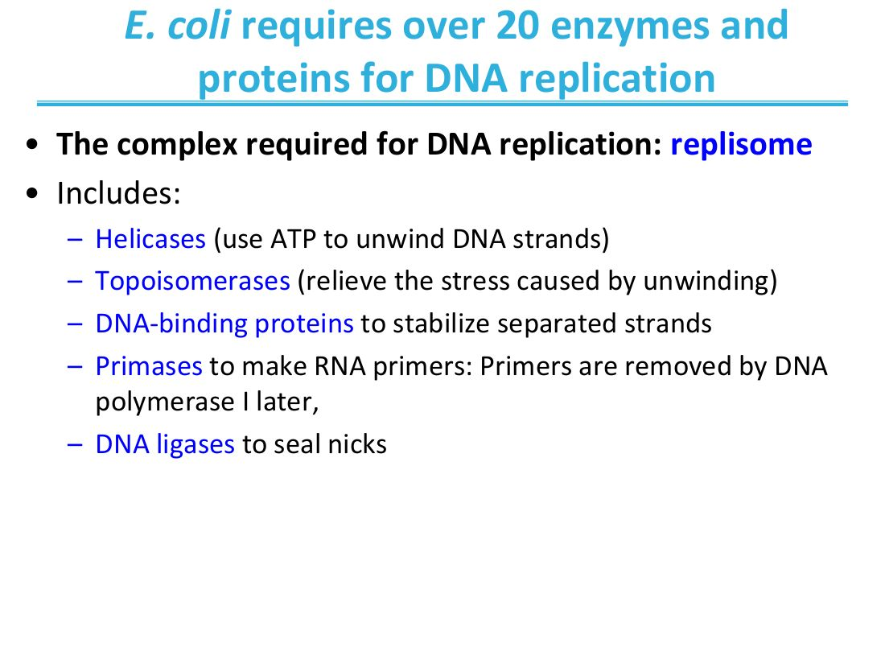
E. coli requires over 20 enzymes and proteins for DNA replication
대장균은 DNA 복제에 20개가 넘는 효소와 단백질을 필요로 한다
The complex required for DNA replication: replisome
DNA 복제에 필요한 복합체: 레플리솜(복제체)
Helicases (use ATP to unwind DNA strands)
헬리케이스(ATP를 이용해 DNA 가닥을 푼다)
Topoisomerases (relieve the stress caused by unwinding)
위상이성질화효소(토포아이소머레이스)(풀림으로 생긴 스트레스를 해소한다)
DNA-binding proteins to stabilize separated strands
분리된 가닥을 안정화하는 DNA 결합 단백질
Primases to make RNA primers: Primers are removed by DNA polymerase I later,
RNA 프라이머를 만드는 프라이메이스: 프라이머는 나중에 DNA 중합효소 I이 제거한다
DNA ligases to seal nicks
닉을 봉합하는 DNA 연결효소(라이게이스)
테스트뱅크 4건 형광펜 = 실제로 물어본 문장TB 25-10
대장균의 복제 분기점에서는:
- A DNA 헬리케이스가 DNA를 내부 절단한다.
- B DNA 프라이머가 핵산말단가수분해효소에 의해 분해된다.
- C DNA 위상이성질화효소(topoisomerase)가 DNA를 내부 절단한다.
- D RNA 프라이머가 프라이메이스에 의해 제거된다.
- E RNA 프라이머가 프라이메이스에 의해 합성된다.
정답·포인트 E RNA 프라이머가 프라이메이스에 의해 합성된다. — 프라이메이스(DnaG)는 RNA 프라이머를 '합성'한다(제거는 Pol I). 헬리케이스는 절단하지 않고 풀기만 함.
TB 25-36단답·서술
[서술] 알려진 모든 DNA 중합효소는 기존 DNA 사슬을 신장시킬 수만 있고(즉 프라이머가 필요하고), 새로운 DNA 사슬을 개시할 수는 없다. 그럼에도 세포 내 반보존적 DNA 복제 동안, 완전히 새로운 딸 DNA 사슬이 합성된다. 세포에서 DNA 중합효소에 의한 딸 사슬 합성을 가능하게 하는 과정을 설명하라.
정답·포인트 세포에서 DNA 사슬의 개시는 RNA 중합효소 유형의 효소(프라이메이스)가 RNA 프라이머를 합성함으로써 일어난다. 이 프라이머가 DNA 중합효소에 의해 신장되어 딸 DNA 사슬이 만들어진다. 복제가 완료되기 전에 RNA는 5' 핵산말단가수분해(exonucleolytic hydrolysis)에 의해 제거된다.
TB 25-38단답·서술
[서술] 대장균 DNA 복제에서 다음 효소들의 생화학적 역할을 간략히 설명하라:
(a) DNA 헬리케이스; (b) 프라이메이스; (c) DNA 중합효소의 3' → 5' 핵산말단가수분해 활성; (d) DNA 리가아제; (e) 위상이성질화효소(topoisomerase); (f) DNA 중합효소 I의 5' → 3' 핵산말단가수분해 활성.
정답·포인트 (a) 헬리케이스는 복제 동안 이중가닥 DNA를 푼다. (b) 프라이메이스는 지연 가닥 복제 동안 짧은 RNA 프라이머를 합성한다. (c) DNA 중합효소의 3' → 5' 핵산말단가수분해 활성은 새로 합성된 DNA를 교정하여 잘못 짝지어진 뉴클레오타이드를 제거한다. (d) DNA 리가아제는 오카자키 절편 사이 경계의 DNA 닉을 봉합한다. (e) 위상이성질화효소는 복제 분기점에서 이중가닥 DNA가 풀리면서 생기는 위상적(topological) 스트레스를 완화한다. (f) DNA 중합효소 I의 5' → 3' 핵산말단가수분해 활성은 RNA 프라이머를 제거한다.
TB 25-40단답·서술
[서술] 대장균의 복제 분기점에서 발견되는 단백질 또는 효소 중 DNA 중합효소 III 외의 두 가지를 나열하고, 각각의 기능을 한 문장 이내로 설명하라.
정답·포인트 해당 단백질들은 962쪽 표 25-4에 나열되어 있다. 여기에는 (a) 틈(gap)을 채우고 RNA 프라이머를 잘라내는 DNA 중합효소 I; (b) 짧은 RNA 프라이머를 합성하는 프라이메이스(DnaG 단백질); (c) 닉을 봉합하는 DNA 리가아제; (d) DNA 풀림과 초나선 형성을 돕는 단백질들(헬리케이스, 위상이성질화효소, SSB 등)이 포함된다.
시험 포인트레플리솜 구성 5가지와 역할: 헬리케이스(ATP로 풀기)·위상이성질화효소(스트레스 해소)·DNA 결합 단백질(가닥 안정화)·프라이메이스(RNA 프라이머; 나중에 Pol I이 제거)·DNA 연결효소(닉 봉합).
그림 해설·더 깊이까지 보기 →슬라이드 20대장균 복제의 3단계와 복제 원점 oriC (그림 25-10)기출 2TB 1원문·번역
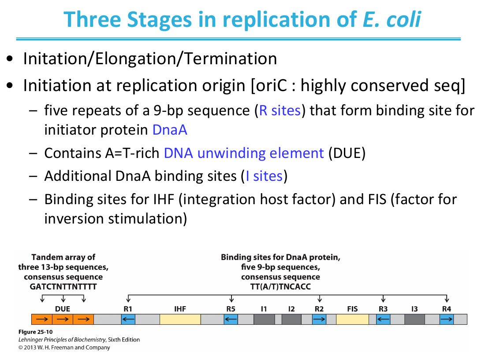
Three Stages in replication of E. coli
대장균 복제의 3단계
Initation/Elongation/Termination
개시 / 신장 / 종결
Initiation at replication origin [oriC : highly conserved seq]
개시는 복제 원점에서 일어난다 [oriC: 고도로 보존된 서열]
five repeats of a 9-bp sequence (R sites) that form binding site for initiator protein DnaA
9-bp 서열의 5회 반복(R 부위) — 개시 단백질 DnaA의 결합 자리를 이룬다
Contains A=T-rich DNA unwinding element (DUE)
A=T가 풍부한 DNA 풀림 요소(DUE)를 포함한다
Additional DnaA binding sites (I sites)
추가적인 DnaA 결합 자리(I 부위)
Binding sites for IHF (integration host factor) and FIS (factor for inversion stimulation)
IHF(통합 숙주 인자)와 FIS(역위 촉진 인자)의 결합 자리
Tandem array of three 13-bp sequences, consensus sequence GATCTNTTNTTTT
13-bp 서열 3개의 연속 배열, 공통 서열 GATCTNTTNTTTT
Binding sites for DnaA protein, five 9-bp sequences, consensus sequence TT(A/T)TNCACC
DnaA 단백질 결합 자리, 9-bp 서열 5개, 공통 서열 TT(A/T)TNCACC
DUE / R1 / IHF / R5 / I1 / I2 / R2 / FIS / R3 / I3 / R4
DUE / R1 / IHF / R5 / I1 / I2 / R2 / FIS / R3 / I3 / R4
기출 2건 · 테스트뱅크 1건 형광펜 = 실제로 물어본 문장202320222016TB 25-9
대장균 복제 개시 — (2016) 관련 없는 것: DnaA / DnaB / DnaH / DnaG / Dam methylase. (2022) 맞는 것: A=T 풍부 부위 위치 / DnaA가 R 부위 결합 / IHF·FIS 위치 / DnaB가 단일가닥을 3'→5'로 이동하며 풀기 / DnaG가 RNA 프라이머 합성
정답·포인트 2016 = DnaH(존재하지 않는 단백질). 2022 함정 = DnaB는 5'→3' 이동(3'→5' X), DnaG = 프라이머 합성(O). oriC 지도(R 9 bp×5, DUE 13 bp×3, I, IHF·FIS)의 배치도 확인.
TB 25-37단답·서술
[서술] 대장균에서 DNA 복제는 DNA의 (a) ______라 불리는 부위에서 시작된다. 복제 분기점에서 (b) ______ 가닥은 연속적으로 합성되는 반면 (c) ______ 가닥은 불연속적으로 합성된다. 불연속적으로 합성되는 가닥에서 짧은 조각들은 (d) ______ 절편이라 불린다. 각 절편을 위한 RNA 프라이머는 (e) ______라는 효소에 의해 합성되며, 이 RNA 프라이머는 절편이 합성된 후 효소 (f) ______가 자신의 (g) ______ 활성을 이용해 제거한다. 이 과정에서 남은 닉(nick)은 효소 (h) ______에 의해 봉합된다.
정답·포인트 (a) 기점(origin); (b) 선도(leading); (c) 지연(lagging); (d) 오카자키(Okazaki); (e) 프라이메이스(primase); (f) DNA 중합효소 I(DNA pol I); (g) 5' → 3' 핵산말단가수분해효소(exonuclease); (h) DNA 리가아제(DNA ligase)
시험 포인트3단계 = 개시·신장·종결. oriC: R 부위 = 9 bp × 5 (DnaA 결합, TT(A/T)TNCACC), DUE = A=T 풍부 13 bp × 3 (GATCTNTTNTTTT), I 부위(추가 DnaA), IHF·FIS 결합 자리. 반복 개수(5 vs 3)·길이(9 vs 13) 바꿔 내기 좋음.
그림 해설·더 깊이까지 보기 →슬라이드 21개시에는 적어도 10가지 단백질이 필요하다 (1) — 표 25-3기출 1원문·번역
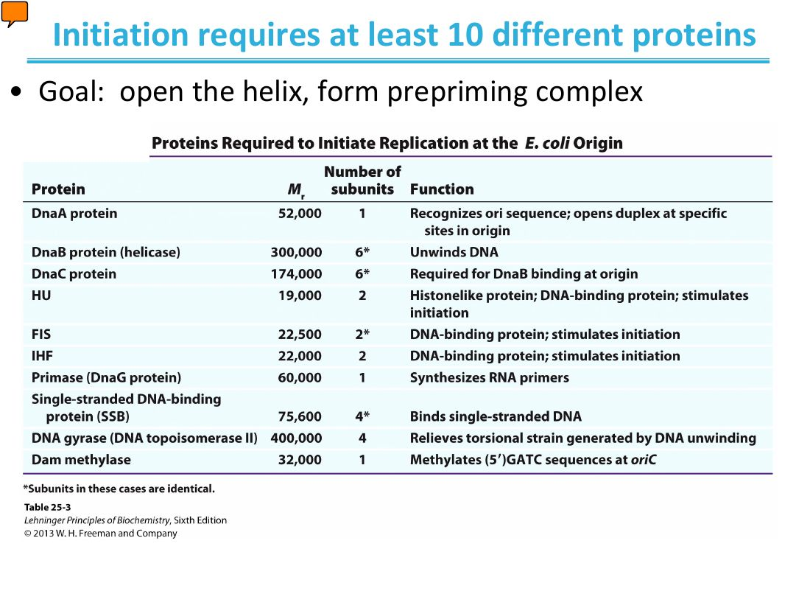
Initiation requires at least 10 different proteins
개시에는 적어도 10가지 서로 다른 단백질이 필요하다
Goal: open the helix, form prepriming complex
목표: 이중나선을 열고, 프라이밍 전 복합체를 형성하는 것
Proteins Required to Initiate Replication at the E. coli Origin (Table 25-3)
대장균 복제 원점에서 복제를 개시하는 데 필요한 단백질 (표 25-3)
Protein / Mr / Number of subunits / Function
단백질 / 분자량 / 소단위 수 / 기능
DnaA protein / 52,000 / 1 / Recognizes ori sequence; opens duplex at specific sites in origin
DnaA 단백질 / 52,000 / 1 / ori 서열을 인식한다; 원점 내 특정 자리에서 이중나선을 연다
DnaB protein (helicase) / 300,000 / 6* / Unwinds DNA
DnaB 단백질(헬리케이스) / 300,000 / 6* / DNA를 푼다
DnaC protein / 174,000 / 6* / Required for DnaB binding at origin
DnaC 단백질 / 174,000 / 6* / DnaB가 원점에 결합하는 데 필요하다
HU / 19,000 / 2 / Histonelike protein; DNA-binding protein; stimulates initiation
HU / 19,000 / 2 / 히스톤 유사 단백질; DNA 결합 단백질; 개시를 촉진한다
FIS / 22,500 / 2* / DNA-binding protein; stimulates initiation
FIS / 22,500 / 2* / DNA 결합 단백질; 개시를 촉진한다
IHF / 22,000 / 2 / DNA-binding protein; stimulates initiation
IHF / 22,000 / 2 / DNA 결합 단백질; 개시를 촉진한다
Primase (DnaG protein) / 60,000 / 1 / Synthesizes RNA primers
프라이메이스(DnaG 단백질) / 60,000 / 1 / RNA 프라이머를 합성한다
Single-stranded DNA-binding protein (SSB) / 75,600 / 4* / Binds single-stranded DNA
단일가닥 DNA 결합 단백질(SSB) / 75,600 / 4* / 단일가닥 DNA에 결합한다
DNA gyrase (DNA topoisomerase II) / 400,000 / 4 / Relieves torsional strain generated by DNA unwinding
DNA 자이레이스(DNA 위상이성질화효소 II) / 400,000 / 4 / DNA 풀림으로 생긴 비틀림 변형을 해소한다
Dam methylase / 32,000 / 1 / Methylates (5')GATC sequences at oriC
Dam 메틸화효소 / 32,000 / 1 / oriC의 (5')GATC 서열을 메틸화한다
*Subunits in these cases are identical.
*이 경우의 소단위들은 서로 동일하다.
시험 포인트개시의 목표 = 이중나선 열기 + 프라이밍 전 복합체 형성. 표의 기능 짝: DnaA–ori 인식·열기, DnaB–헬리케이스(6량체), DnaC–DnaB 원점 결합에 필요, HU–히스톤 유사, FIS·IHF–개시 촉진, DnaG–프라이메이스, SSB–단일가닥 결합(4량체), 자이레이스 = 위상이성질화효소 II, Dam–(5')GATC 메틸화.
그림 해설·더 깊이까지 보기 →슬라이드 22개시에는 적어도 10가지 단백질이 필요하다 (2) — DnaA·DnaC·DnaB의 작동 순서 (그림 25-11)기출 2원문·번역

Initiation requires at least 10 different proteins
개시에는 적어도 10가지 서로 다른 단백질이 필요하다
DnaA: AAA+ ATPase (ATPase associated with diverse cellular activities)
DnaA: AAA+ ATPase(다양한 세포 활동과 관련된 ATPase; 노란 형광펜으로 A·a·a 표시 = 약어의 유래)
Eight DnaAs, each bound with a ATP, bind to R and I sites
각각 ATP가 결합된 DnaA 8개가 R 부위와 I 부위에 결합한다
DnaA binding to imparts strain -> denaturation of nearby DUE sites
DnaA의 결합이 (DNA에) 변형을 가한다 → 근처 DUE 부위의 변성(풀림)
Associated proteins (HU, IHF, FIS) facilitate DNA bending
관련 단백질들(HU, IHF, FIS)이 DNA 구부림을 촉진한다
DnaC (AAA+ ATPase)-dependent loading of DnaB (helicase) onto the separated DNA strands in denatured region
변성된 부위의 분리된 DNA 가닥 위로 DnaB(헬리케이스)를 올리는 것은 DnaC(AAA+ ATPase)에 의존한다
DnaC-ATP hexamers bind to DnaB hexamer, which opens the ring of DnaB and allows DnaB loaded in the DUE
DnaC-ATP 6량체가 DnaB 6량체에 결합하여 DnaB의 고리를 열고, DnaB가 DUE에 올라가게 한다
Hydrolysis of ATP in DnaC releases the DnaC from complexes
DnaC의 ATP가 가수분해되면 DnaC가 복합체에서 떨어져 나간다
DnaB migrates along ssDNA 5'→3' and unwinds the helix
DnaB는 단일가닥 DNA를 따라 5'→3'으로 이동하며 나선을 푼다
oriC / DUE / DnaA-ATP / Origin binding / DnaA-dependent denaturation of the DUE region
oriC / DUE / DnaA-ATP / 원점 결합 / DnaA 의존적인 DUE 부위의 변성
DnaB / DnaC-ATP / DnaC-dependent loading of DnaB helicase / DnaC + ADP + Pᵢ
DnaB / DnaC-ATP / DnaC 의존적인 DnaB 헬리케이스 적재 / DnaC + ADP + Pᵢ (방출)
기출 2건 형광펜 = 실제로 물어본 문장202520232017 퀴즈
AAA+ ATPase가 아닌 것은? — DnaA / DnaC / DnaG / Hda / Pol III 클램프 로더 (2017: DnaA, Hda, 클램프 로더, ORC, DnaB)
정답·포인트 DnaG(프라이메이스). 2017 버전은 DnaB(헬리케이스). AAA+ = DnaA·DnaC·Hda·클램프 로더(γ 복합체)·ORC(+RuvB). 2023 복기엔 'β clamp' 자체로 나온 보기도 있었는데, β 클램프는 ATPase가 아니고 클램프 로더가 AAA+예요.
시험 포인트DnaA = AAA+ ATPase, ATP 결합 DnaA 8개가 R·I 부위에 결합 → DUE 변성. 구부림 보조 = HU·IHF·FIS. DnaC(AAA+)-ATP 6량체가 DnaB 6량체 고리를 열어 적재 → ATP 가수분해로 DnaC 이탈. DnaB = 단일가닥 따라 5'→3' 이동.
그림 해설·더 깊이까지 보기 →슬라이드 23개시에는 적어도 10가지 단백질이 필요하다 (3) — SSB·자이레이스와 개시 조절 (Hda, Dam, SeqA)기출 2원문·번역

Initiation requires at least 10 different proteins
개시에는 적어도 10가지 서로 다른 단백질이 필요하다
Single-stranded DNA-binding protein (SSB) stabilizes separated strands
단일가닥 DNA 결합 단백질(SSB)은 분리된 가닥을 안정화한다
DNA gyrase relieves topological stress ahead of the replication forks
DNA 자이레이스는 복제 분기점 앞쪽의 위상학적 스트레스를 해소한다
* Regulation of initiation [one initiation per cell cycle]
* 개시의 조절 [세포 주기당 한 번의 개시]
Once DNA pol III is loaded onto the DNA, along with β subunits, Hda (Homologous to DnaA: AAA+ ATPase) binds to β subunits of DNA Pol III, hydrolyzes DnaA's ATP -> dissociation of DnaA from origin
DNA Pol III가 β 소단위와 함께 DNA에 적재되면, Hda(DnaA와 상동: AAA+ ATPase)가 DNA Pol III의 β 소단위에 결합하여 DnaA의 ATP를 가수분해한다 → DnaA가 원점에서 해리된다
* Regulation of replication initiation timing via methylation
* 메틸화를 통한 복제 개시 시점의 조절
After replication, oriC is methylated by Dam methylase (DNA adenine methylase: Methylates N⁶ of A in GATC)
복제 후 oriC는 Dam 메틸화효소(DNA 아데닌 메틸화효소: GATC 안의 A의 N⁶ 위치를 메틸화)에 의해 메틸화된다
Before methylation of new strands, hemimethylated oriC sequences are sequestered by interaction with plasma membrane (uses protein SeqA)
새 가닥이 메틸화되기 전, 반메틸화된 oriC 서열은 원형질막과의 상호작용으로 격리된다(SeqA 단백질을 이용)
After a period, oriC sequences are released from membrane and DNA must be fully methylated by Dam methylase before it can bind with new DnaA and initiate a new round of replication
일정 시간이 지나면 oriC 서열이 막에서 풀려나며, DNA는 새 DnaA와 결합해 새로운 복제를 개시하기 전에 Dam 메틸화효소에 의해 완전히 메틸화되어야 한다
기출 2건 형광펜 = 실제로 물어본 문장20192017 퀴즈
DNA 메틸화와 관계 없는 것 — MutS / MutH / SeqA / 'ATGC' 서열 / S-adenosylmethionine
정답·포인트 MutS는 불일치만 인식(메틸화를 보는 건 MutH). 메틸화 서열은 GATC라서 'ATGC'로 바꾼 보기도 함정. SeqA = 반메틸화 oriC 격리, SAM = Dam의 메틸기 공여체(교재 내용).
시험 포인트SSB = 분리된 가닥 안정화, 자이레이스 = 분기점 앞 위상 스트레스 해소. 개시는 세포 주기당 1번. Hda(DnaA 상동, AAA+) → β 소단위에 결합 → DnaA의 ATP 가수분해 → DnaA 해리. Dam = GATC의 A의 N⁶ 메틸화, 반메틸화 oriC는 SeqA가 원형질막에 격리 → 완전 메틸화 후에야 새 개시.
그림 해설·더 깊이까지 보기 →슬라이드 24메틸화에 의한 개시 조절 — SeqA 격리 모식도기출 1원문·번역

Fully methylated DNA
완전히 메틸화된 DNA
Hemimethylated DNA
반메틸화된 DNA
SeqA binding to hemimethylated DNA
반메틸화된 DNA에 대한 SeqA의 결합
Sequestration of SeqA-DNA at the membrane / Cell membrane
SeqA-DNA가 세포막에 격리됨 / 세포막
ATP-DnaA / Delay / Active complex ATP-Initiator protein DnaA
ATP-DnaA / 지연 / 활성 복합체 ATP-개시 단백질 DnaA
SeqA / Dam enzyme
SeqA (떨어짐) / Dam 효소
Fully methylated DNA
완전히 메틸화된 DNA
G A T C / C T A G / CH₃
G A T C / C T A G / CH₃(메틸기)
시험 포인트순서 그대로: 완전 메틸화 → 복제 → 반메틸화 → SeqA 결합 → 막 격리(ATP-DnaA 지연) → Dam이 메틸화 → 완전 메틸화. 격리 장소 = 세포막.
그림 해설·더 깊이까지 보기 →슬라이드 25복제의 두 번째 단계: 신장 — 선도 가닥과 지연 가닥 합성 (그림 25-12)기출 3TB 4원문·번역

Second Phase of Replication: Elongation
복제의 두 번째 단계: 신장
Leading strand synthesis
선도 가닥 합성
Primase (DnaG) makes RNA primer
프라이메이스(DnaG)가 RNA 프라이머를 만든다
DnaG primase interacts with DnaB helicase, which is tethered to the lagging strand template.
DnaG 프라이메이스는 DnaB 헬리케이스와 상호작용하는데, DnaB는 지연 가닥 주형에 묶여 있다.
Primase makes RNA Primer
프라이메이스가 RNA 프라이머를 만든다
DNA Pol III is linked to Dna B and adds nucleotides to the primer
DNA Pol III는 DnaB와 연결되어 있으며 프라이머에 뉴클레오타이드를 추가한다
Lagging strand synthesis
지연 가닥 합성
As in leading strand synthesis, primase makes RNA primer and DNA Pol III adds nucleotides
선도 가닥 합성에서처럼, 프라이메이스가 RNA 프라이머를 만들고 DNA Pol III가 뉴클레오타이드를 추가한다
Lagging strand synthesis occurs in opposite direction from replication fork movement
지연 가닥 합성은 복제 분기점의 이동과 반대 방향으로 일어난다
The SAME DNA Pol III works on both strands! (looping of lagging strand is required to bring together the two points of DNA polymerization)
같은 DNA Pol III가 두 가닥 모두에서 일한다! (DNA 중합이 일어나는 두 지점을 한데 모으려면 지연 가닥이 고리를 만들어야 한다)
Synthesis of Okazaki fragments
오카자키 절편의 합성 (그림 25-12)
DNA topoisomerase II (DNA gyrase) / Leading strand synthesis (DNA polymerase III) / Replication fork movement / Lagging strand
DNA 위상이성질화효소 II(DNA 자이레이스) / 선도 가닥 합성(DNA 중합효소 III) / 복제 분기점 이동 / 지연 가닥
DnaB helicase / Primase / RNA primer / SSB / RNA primer from previous Okazaki fragment
DnaB 헬리케이스 / 프라이메이스 / RNA 프라이머 / SSB / 이전 오카자키 절편의 RNA 프라이머
(b) Lagging strand synthesis (DNA polymerase III)
(b) 지연 가닥 합성(DNA 중합효소 III)
(a) / (b) / (c) / 3' / 5'
(a) / (b) / (c) / 3' / 5'
기출 3건 · 테스트뱅크 4건 형광펜 = 실제로 물어본 문장 시험 포인트선도·지연 둘 다 프라이메이스(DnaG)가 RNA 프라이머 → Pol III 신장. DnaG는 DnaB(지연 가닥 주형에 묶임)와 상호작용, Pol III도 DnaB와 연결. 지연 가닥 합성 = 분기점 이동과 반대 방향. 같은 Pol III가 두 가닥 모두 합성(지연 가닥의 고리 형성 필요).
그림 해설·더 깊이까지 보기 →슬라이드 26선도 가닥과 지연 가닥 합성의 협조 — 고리 모델 (그림 25-13)TB 1원문·번역

Leading and Lagging Strand Synthesis
선도 가닥과 지연 가닥의 합성
Coordination of a single DNA pol III dimer with DnaB helicase, in an integrated complex at replication fork.
복제 분기점의 통합된 복합체 안에서, 하나의 DNA pol III 이량체와 DnaB 헬리케이스의 협조.
The lagging strand is looped so that DNA synthesis proceeds steadily on both the leading and lagging strand templates at the same time.
지연 가닥이 고리 모양으로 접혀 있어서, DNA 합성이 선도 가닥 주형과 지연 가닥 주형 모두에서 동시에 꾸준히 진행된다.
Figure 25-13 part 1, part 2, part 4
그림 25-13 (1부, 2부, 4부)
(a) Core / Leading strand / Clamp-loading complex with open β sliding clamp / Lagging strand / DnaB / RNA primer of previous Okazaki fragment
(a) 핵심 / 선도 가닥 / 열린 β 슬라이딩 클램프를 든 클램프 로딩 복합체 / 지연 가닥 / DnaB / 이전 오카자키 절편의 RNA 프라이머
(a) Continuous synthesis on the leading strand proceeds as DNA is unwound by the DnaB helicase.
(a) DnaB 헬리케이스가 DNA를 풀어감에 따라 선도 가닥에서의 연속 합성이 진행된다.
(b) Okazaki fragment synthesis nears completion. / Primase / New RNA primer / Primase binds to DnaB, synthesizes a new primer, then dissociates.
(b) 오카자키 절편 합성이 완료에 가까워진다. / 프라이메이스 / 새 RNA 프라이머 / 프라이메이스가 DnaB에 결합해 새 프라이머를 합성한 뒤 떨어져 나간다.
(c) A new β clamp is loaded onto the new template primer by the clamp loader.
(c) 클램프 로더가 새 주형-프라이머 위에 새 β 클램프를 적재한다.
(d) Lagging strand core subunits are transferred to the new template primer and its β clamp. The old β clamp is left behind. / β clamp left behind
(d) 지연 가닥의 핵심 소단위들이 새 주형-프라이머와 그 β 클램프로 옮겨간다. 예전 β 클램프는 뒤에 남겨진다. / 남겨진 β 클램프
(e) The next β clamp is readied as Okazaki fragment synthesis is initiated.
(e) 오카자키 절편 합성이 개시되면서 다음 β 클램프가 준비된다.
테스트뱅크 1건 형광펜 = 실제로 물어본 문장TB 25-39단답·서술
[서술] 대장균의 지연 가닥 DNA 합성은 여러 단백질이 관여하는 것으로 알려진 복잡한 과정이다. 새 사슬의 개시는 효소 (a) ______가 촉매하고, 신장은 효소 (b) ______가 촉매한다. 합성은 불연속적이어서 (c) ______라 불리는 짧은 분절이 생기며, 이들은 결국 효소 (d) ______에 의해 연결되는데, 이 효소는 보조인자 (e) ______를 필요로 한다.
정답·포인트 (a) 프라이메이스; (b) DNA 중합효소 III; (c) 오카자키 절편; (d) DNA 리가아제; (e) NAD⁺
대장균 리가아제는 NAD⁺, 진핵생물·파지 리가아제는 ATP를 사용.
시험 포인트단일 Pol III 이량체 + DnaB가 분기점에서 통합 복합체. 지연 가닥 고리화 → 두 가닥 동시 합성. (a)~(e) 순서: 선도 연속 합성 → 프라이메이스가 DnaB에 붙어 새 프라이머 → 클램프 로더가 새 β 클램프 적재 → 지연 핵심이 새 클램프로 이동, 헌 클램프 남김 → 다음 클램프 준비.
그림 해설·더 깊이까지 보기 →슬라이드 27오카자키 절편 사이의 전환 — β 클램프의 방출과 재결합 (그림 25-14)기출 1원문·번역

Transitioning Between Okazaki Fragments
오카자키 절편 사이의 전환
Core subunits of DNA Pol III dissociate from one β clamp, bind to a new one
DNA Pol III의 핵심 소단위는 한 β 클램프에서 떨어져 새 클램프에 결합한다
The β Clamp Release and Rebinding (Figure 25-14)
β 클램프의 방출과 재결합 (그림 25-14)
Clamp loader / β clamp / ATP / ATP / ATP / 5' / 3'
클램프 로더 / β 클램프 / ATP / ATP / ATP / 5' / 3'
ADP / ADP / ADP / + 3 Pᵢ
ADP / ADP / ADP / + 3 Pᵢ
The DNA polymerase III clamp loader (AAA+ ATPase). The clamp-loading complex binds to three molecules of ATP and to new dimeric β sliding clamp. This ATP binding forces the β clamp open and newly primed lagging strand is slipped into the ring through the resulting break. Hydrolysis of the bound ATP allows the β clamp to close again around the DNA.
DNA 중합효소 III의 클램프 로더(AAA+ ATPase). 클램프 로딩 복합체는 ATP 3분자와 새로운 이량체 β 슬라이딩 클램프에 결합한다. 이 ATP 결합이 β 클램프를 강제로 열고, 새로 프라이머가 깔린 지연 가닥이 그로 인해 생긴 틈을 통해 고리 안으로 미끄러져 들어간다. 결합된 ATP가 가수분해되면 β 클램프가 DNA 주위로 다시 닫힌다.
https://www.youtube.com/watch?v=FBYeBb4C5Rc
(참고 동영상 링크: 유튜브 — 복제 애니메이션)
시험 포인트클램프 로더 = AAA+ ATPase, ATP 3분자 결합 → β 클램프 열림 → 프라이머 깔린 지연 가닥이 틈으로 들어감 → ATP 가수분해 → 클램프 닫힘. 핵심 소단위는 헌 클램프를 떠나 새 클램프로.
그림 해설·더 깊이까지 보기 →슬라이드 28지연 가닥 합성의 마지막 단계 — 프라이머 제거와 닉 봉합 (그림 25-15)기출 2TB 2원문·번역
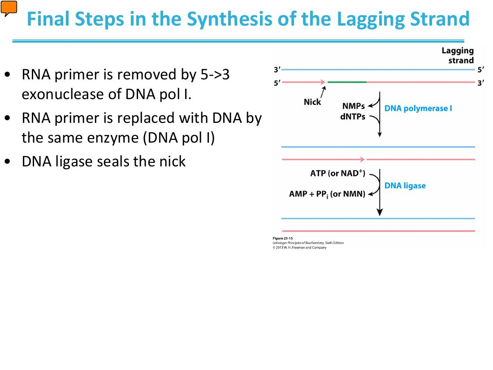
Final Steps in the Synthesis of the Lagging Strand
지연 가닥 합성의 마지막 단계
RNA primer is removed by 5->3 exonuclease of DNA pol I.
RNA 프라이머는 DNA pol I의 5'→3' 엑소뉴클레이스에 의해 제거된다.
RNA primer is replaced with DNA by the same enzyme (DNA pol I)
RNA 프라이머는 같은 효소(DNA pol I)에 의해 DNA로 교체된다
DNA ligase seals the nick
DNA 연결효소가 닉을 봉합한다
Lagging strand / 3' / 5' / Nick
지연 가닥 / 3' / 5' / 닉
NMPs / dNTPs / DNA polymerase I
NMP(나옴) / dNTP(들어감) / DNA 중합효소 I
ATP (or NAD⁺) / AMP + PPᵢ (or NMN) / DNA ligase
ATP(또는 NAD⁺) / AMP + PPᵢ(또는 NMN) / DNA 연결효소
기출 2건 · 테스트뱅크 2건 형광펜 = 실제로 물어본 문장 시험 포인트RNA 프라이머 제거 = Pol I의 5'→3' 엑소, DNA로 교체 = 같은 Pol I, 닉 봉합 = DNA 연결효소(ATP 또는 NAD⁺ 사용 → AMP + PPᵢ 또는 NMN).
그림 해설·더 깊이까지 보기 →슬라이드 29DNA 연결효소 반응의 메커니즘 (그림 25-16)기출 1원문·번역
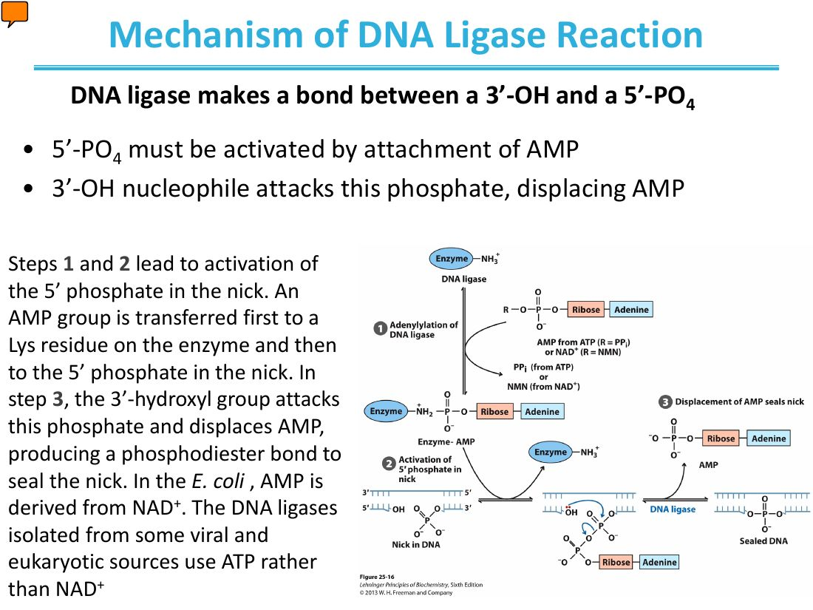
Mechanism of DNA Ligase Reaction
DNA 연결효소 반응의 메커니즘
DNA ligase makes a bond between a 3'-OH and a 5'-PO₄
DNA 연결효소는 3'-OH와 5'-PO₄ 사이에 결합을 만든다
5'-PO₄ must be activated by attachment of AMP
5'-PO₄는 AMP가 붙어서 활성화되어야 한다
3'-OH nucleophile attacks this phosphate, displacing AMP
3'-OH 친핵체가 이 인산을 공격하여 AMP를 밀어낸다
Steps 1 and 2 lead to activation of the 5' phosphate in the nick. An AMP group is transferred first to a Lys residue on the enzyme and then to the 5' phosphate in the nick. In step 3, the 3'-hydroxyl group attacks this phosphate and displaces AMP, producing a phosphodiester bond to seal the nick. In the E. coli, AMP is derived from NAD⁺. The DNA ligases isolated from some viral and eukaryotic sources use ATP rather than NAD⁺
1단계와 2단계는 닉의 5' 인산을 활성화한다. AMP기가 먼저 효소의 Lys 잔기로 옮겨지고, 그다음 닉의 5' 인산으로 옮겨진다. 3단계에서 3'-하이드록실기가 이 인산을 공격해 AMP를 밀어내고, 인산다이에스터 결합을 만들어 닉을 봉합한다. 대장균에서 AMP는 NAD⁺에서 유래한다. 일부 바이러스와 진핵생물에서 분리한 DNA 연결효소는 NAD⁺ 대신 ATP를 사용한다
Enzyme–NH₃⁺ / DNA ligase
효소–NH₃⁺(Lys의 아미노기) / DNA 연결효소
① Adenylylation of DNA ligase / R–O–P–O–Ribose–Adenine / AMP from ATP (R = PPᵢ) or NAD⁺ (R = NMN) / PPᵢ (from ATP) or NMN (from NAD⁺)
① DNA 연결효소의 아데닐릴화 / R–O–P–O–리보스–아데닌 / ATP(R = PPᵢ) 또는 NAD⁺(R = NMN)에서 온 AMP / PPᵢ(ATP에서 나옴) 또는 NMN(NAD⁺에서 나옴)
Enzyme–NH₂⁺–P–O–Ribose–Adenine / Enzyme-AMP
효소–NH₂⁺–P–O–리보스–아데닌 / 효소-AMP
② Activation of 5' phosphate in nick / Nick in DNA / 3' / 5' / OH
② 닉의 5' 인산 활성화 / DNA의 닉 / 3' / 5' / OH
③ Displacement of AMP seals nick / AMP / DNA ligase / Sealed DNA
③ AMP가 밀려나며 닉이 봉합됨 / AMP / DNA 연결효소 / 봉합된 DNA
기출 1건 형광펜 = 실제로 물어본 문장202520222017 퀴즈
DNA 연결효소: 닉의 5'-인산을 활성화하는 데 필요한 물질(모두) — ATP / GTP / NAD⁺ / NADH / NADPH (2022·2017: 연결효소에 쓰이지 않는 factor — NADP⁺ / NAD⁺ / AMP / ATP / free 3'-OH)
정답·포인트 필요한 것 = ATP, NAD⁺(대장균 = NAD⁺, 일부 바이러스·진핵 = ATP). 쓰이지 않는 것 = NADP⁺. AMP는 Lys → 5'-인산으로 옮겨지는 활성화기, free 3'-OH는 공격하는 친핵체.
시험 포인트연결효소 = 3'-OH + 5'-PO₄ 연결. ① 효소의 Lys에 AMP 결합(아데닐릴화) → ② AMP가 닉의 5' 인산으로 → ③ 3'-OH 공격, AMP 방출. AMP 공급원: 대장균 = NAD⁺(부산물 NMN), 일부 바이러스·진핵생물 = ATP(부산물 PPᵢ). 대장균–NAD⁺ 짝을 바꿔 내기 쉬움.
그림 해설·더 깊이까지 보기 →슬라이드 30복제의 세 번째 단계: 종결 — Ter 부위와 Tus (그림 25-17)기출 1TB 1원문·번역
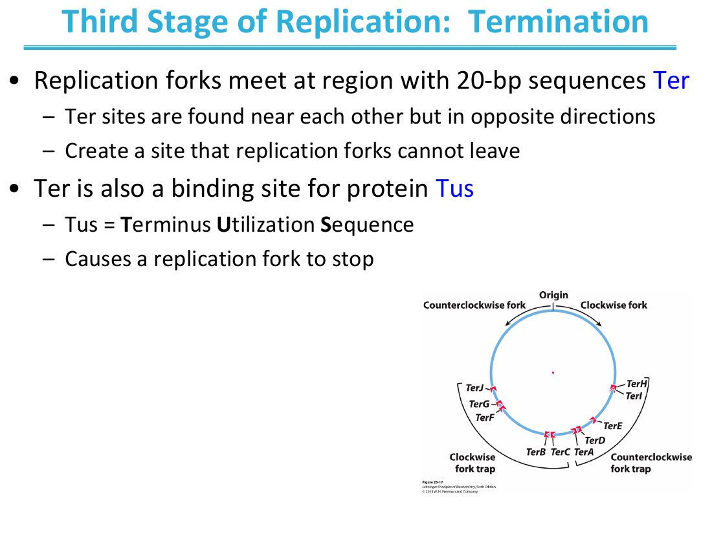
Third Stage of Replication: Termination
복제의 세 번째 단계: 종결
Replication forks meet at region with 20-bp sequences Ter
복제 분기점들은 20-bp 서열인 Ter가 있는 지역에서 만난다
Ter sites are found near each other but in opposite directions
Ter 부위들은 서로 가까이 있지만 반대 방향으로 배치되어 있다
Create a site that replication forks cannot leave
복제 분기점이 빠져나갈 수 없는 자리를 만든다
Ter is also a binding site for protein Tus
Ter는 단백질 Tus의 결합 자리이기도 하다
Tus = Terminus Utilization Sequence
Tus = Terminus Utilization Sequence (말단 이용 서열)
Causes a replication fork to stop
복제 분기점을 멈추게 한다
Origin / Counterclockwise fork / Clockwise fork
원점 / 반시계 방향 분기점 / 시계 방향 분기점
TerH / TerI / TerE / TerD / TerA / TerC / TerB / TerF / TerG / TerJ
TerH / TerI / TerE / TerD / TerA / TerC / TerB / TerF / TerG / TerJ
Clockwise fork trap / Counterclockwise fork trap
시계 방향 분기점 덫 / 반시계 방향 분기점 덫
기출 1건 · 테스트뱅크 1건 형광펜 = 실제로 물어본 문장202220192017 퀴즈
Full name이 바르지 않은 것 — TUS / ARS / RSS / Umu / TLS
정답·포인트 정답 = ARS를 'Activated Replication Site' 등으로 바꾼 보기. 바른 이름: Tus = Terminus Utilization Sequence, ARS = Autonomously Replicating Sequence, RSS = Recombination Signal Sequence, Umu = Unmutable, TLS = TransLesion Synthesis. (복기마다 TUS를 'termination utilization sequence/substance'로 적어서 헷갈림 주의)
TB 25-41단답·서술
[서술] 세균 세포에서 연쇄(catenated) 염색체란 무엇이며, 언제 생기고, 세포는 그 구조가 일으키는 문제를 어떻게 해결하는가?
정답·포인트 카테네인(catenane)은 위상적으로 서로 연결된(고리처럼 엮인) 원형 염색체로, 양방향 복제 분기점들이 만날 때 부모 원형 유전체의 DNA 복제가 끝나면서 정상적으로 생기는 최종 결과물이다. 이들은 세균의 위상이성질화효소 IV(제II형 효소)에 의해 분리되며, 그 결과 세포 분열 시 딸세포로 자유롭게 분리(segregate)될 수 있게 된다. (990쪽 그림 25-19 참조)
시험 포인트분기점이 만나는 곳 = Ter(20 bp) 부위, 서로 가깝지만 반대 방향 → 분기점이 빠져나갈 수 없는 자리. Ter 결합 단백질 = Tus(Terminus Utilization Sequence) → 분기점 정지.
그림 해설·더 깊이까지 보기 →4
진핵생물의 복제와 항바이러스제
슬라이드 31–34
처음이라면 · 큰 그림부터
원리는 대장균과 같고 규모와 관리 방식이 달라요. 진핵 염색체는 훨씬 길어서 출발점이 수백에서 수천 개 있어요. 출발점이 많으면 한 주기에 어떤 곳이 두 번 켜질 위험이 생기니, 세포주기로 엄격하게 통제해요. 사이클린이 낮은 G1기에 출발 준비(복제 전 복합체 조립)를 해 두고, S기에 사이클린–CDK가 출발시키는 동시에 재조립을 막아요. 그래서 원점마다 주기당 한 번만 켜져요.
부품은 이름만 다르고 역할이 짝지어져요. ORC가 DnaA처럼 출발점을 잡고, MCM2-7이 헬리케이스, CDC6·CDT1이 DnaC처럼 헬리케이스를 얹어요. 중합효소는 Pol α가 프라이머를 만들고, Pol δ가 PCNA(β 클램프 같은 고리)와 함께 본 합성을 하고, Pol ε은 수선과 프라이머 제거에 참여해요.
아사이클로버(헤르페스 약)는 "바이러스 효소만 켤 수 있는 가짜 재료" 전략이에요. 바이러스의 티미딘 키네이스만 이 약을 인산화할 수 있어서 감염된 세포 안에서만 활성형이 되고, 3'-OH가 없어서 DNA에 끼어들면 사슬이 더 자라지 못해요.
흐름 한 줄
G1: 복제 전 복합체 조립(ORC · CDC6 · CDT1 · MCM)→S: 사이클린–CDK가 출발→재조립 금지 → 주기당 1회
이 단원에서 처음 나오는 말
- 세포주기
- G1(성장) → S(DNA 복제) → G2 → M(분열)을 도는 순환.
- 사이클린–CDK
- 사이클린이 붙어야 켜지는 키네이스. 세포주기의 단계를 넘기는 스위치예요.
- PCNA
- 진핵생물의 클램프. 고리 모양으로 DNA를 감싸 Pol δ의 진행성을 높여요.
- 사슬 종결
- 3'-OH가 없는 뉴클레오타이드가 들어가 다음 결합을 만들 수 없게 되는 것.
여기부터 자세히
- 원점 많음(효모 ~400, ARS), 사이클린–CDK로 주기당 1회 — pre-RC는 사이클린이 없을 때 조립.
- ORC ≈ DnaA, MCM2-7 ≈ DnaB, CDC6·CDT1 ≈ DnaC. Pol α(프라이머)·Pol δ(합성, PCNA)·Pol ε(수선·프라이머 제거).
- 아사이클로버: HSV TK가 인산화 → 아사이클로-GTP → 경쟁적 억제 + 3'-OH 없어 사슬 종결.
세균 → 진핵 대응표
| 기능 | 대장균 | 진핵생물 |
|---|
| 원점 | oriC 1개 | 여러 개(효모 ~400, ARS·레플리케이터) |
| 원점 인식 | DnaA | ORC |
| 헬리케이스 적재 | DnaC | CDC6, CDT1 |
| 헬리케이스 | DnaB(6량체) | MCM2-7(6량체) |
| 프라이머 | DnaG | Pol α(프라이메이스 있음, 교정 없음) |
| 주 합성 | Pol III | Pol δ(교정 있음, 선도·오카자키) |
| 클램프 | β 클램프 | PCNA |
| 수선·프라이머 제거 | Pol I | Pol ε(슬라이드 기준) |
원점이 많으니 '각 원점이 주기당 딱 한 번'이 중요해요. 사이클린–CDK가 이를 조절하는데, 사이클린은 M기 끝에 유비퀴틴화돼 분해되고, 사이클린이 없을 때(G1)만 pre-RC가 조립돼요. S기에 사이클린–CDK가 켜지면 발화는 되지만 새 조립은 못 해서 재복제가 막혀요. pre-RC 조립은 ORC(ATP) → CDC6(ATP) → MCM2-7 + CDT1 → CDT1·CDC6 이탈 → ORC ATP 가수분해 순서예요.
참고: 최신 교재는 Pol ε = 선도 가닥, Pol δ = 지연 가닥으로 정리하지만, 시험은 슬라이드 문장(δ = 선도·오카자키, ε = 수선·프라이머 제거) 기준으로 대비하세요.
아사이클로버
헤르페스(HSV)는 자기 DNA 중합효소를 가져와요. 아사이클로버는 구아닌에 당 고리가 끊긴 사슬(CH₂OCH₂CH₂OH)이 붙은 약이라 원래 3'-OH 자리가 없어요. HSV 티미딘 인산화효소가 첫 인산화를 해 주기 때문에 감염 세포에서 주로 아사이클로-GTP가 되고, 이게 바이러스 중합효소를 경쟁적으로 억제하면서 DNA에 끼어들면 사슬을 종결시켜요.
이 단원 기출·테스트뱅크 6건 문제·정답은 슬라이드를 펼치거나 번역본에서- 202320222017 퀴즈 원핵–진핵 대응(MutS–MSH, β–PCNA) 슬라이드 32
- 2016 진핵 복제(진핵이 더 빠르다 X) 슬라이드 31
- 2017 퀴즈TB 26-25 AZT = 역전사효소 억제 슬라이드 34
- TB 25-11 세균과 대조적으로, 진핵생물 염색체가 여러 개의 DNA 복제 기점을 필요로 하는 이… 슬라이드 31
- TB 25-12 진핵생물 DNA 복제 인자 PCNA(증식세포 핵항원)의 기능이 세균 DNA 중합효소… 슬라이드 33
- TB 25-42단답·서술 아시클로비르(acyclovir)가 단순포진 바이러스에 효과적인 이유는? 슬라이드 34
이 단원 슬라이드 원문·번역 펼쳐서 보기
슬라이드 31진핵생물의 복제는 세균보다 복잡하다 — ARS·사이클린·pre-RC기출 2TB 1원문·번역

Replication in eukaryotes is more complex than in bacteria
진핵생물의 복제는 세균보다 복잡하다
Yeast have ~400 well-defined origins
효모는 약 400개의 잘 규정된 원점을 가진다
Called autonomously replicating sequences (ARS) or replicators
자율 복제 서열(ARS) 또는 레플리케이터(복제기)라고 부른다
Entire genome replicated 1X/cell cycle
전체 유전체는 세포 주기당 한 번 복제된다
Regulation due to cyclin proteins and cyclin-dependent kinases (CDKs)
사이클린 단백질과 사이클린 의존성 인산화효소(CDK)에 의해 조절된다
Cyclins are ubiquinated for proteolytic destruction at the end of the M (mitosis) phase
사이클린은 M기(유사분열기) 끝에 단백질분해로 파괴되기 위해 유비퀴틴화된다 (원문 'ubiquinated'는 'ubiquitinated'의 오타)
Pre-replicative complexes (pre-RCs): in the absence of cyclin, pre-RCs are formed on replication initiation site for next replication.
복제 전 복합체(pre-RC): 사이클린이 없을 때, 다음 복제를 위해 복제 개시 자리에 pre-RC가 형성된다.
기출 2건 · 테스트뱅크 1건 형광펜 = 실제로 물어본 문장2016
진핵 DNA 복제로 틀린 것 — PCNA는 Pol δ와 관련 / MCM은 헬리케이스 / Pol α는 3'→5' 교정 없음 / 복제 속도는 진핵이 원핵보다 빠르다 / ORC가 헬리케이스를 DNA에 적재
정답·포인트 진핵이 더 빠르다가 틀림(대장균이 더 빠름; 진핵은 원점을 많이 써서 보완).
TB 25-11
세균과 대조적으로, 진핵생물 염색체가 여러 개의 DNA 복제 기점을 필요로 하는 이유는:
- A 진핵생물 염색체는 보통 양방향으로 복제할 수 없기 때문에
- B 진핵생물 유전체는 세균 염색체처럼 원형이 아니기 때문에
- C 진핵생물 DNA 중합효소의 진행성이 세균 효소보다 훨씬 낮기 때문에
- D 복제 속도가 훨씬 느려서, 염색체당 기점이 하나뿐이면 너무 오래 걸리기 때문에
- E 서로 다른 목적의 다양한 DNA 중합효소를 가지고 있어 그에 상응하는 다양한 복제 기점이 필요하기 때문에
정답·포인트 D 복제 속도가 훨씬 느려서, 염색체당 기점이 하나뿐이면 너무 오래 걸리기 때문에 — 진핵생물 복제 분기점 속도는 세균의 약 1/20(~50 nt/s)이고 유전체는 훨씬 크므로, 다수의 기점(replicator)에서 동시에 시작해야 S기 안에 끝난다.
시험 포인트효모 원점 약 400개 = ARS(레플리케이터). 세포 주기당 1회 복제 = 사이클린 + CDK, 사이클린은 M기 끝에 유비퀴틴화 → 분해. pre-RC는 사이클린이 없을 때 형성('사이클린이 있을 때'로 바꾸면 X).
그림 해설·더 깊이까지 보기 →슬라이드 32진핵생물 원점에서 복제 전 복합체(pre-RC)의 조립 (그림 25-19)기출 3원문·번역

Assembly of a Pre-replicative Complex at a Eukaryotic Origin
진핵생물 원점에서 복제 전 복합체의 조립
The Origin Recognition Complex (ORC: similar to DnaA) loads a helicase onto the DNA
원점 인식 복합체(ORC: DnaA와 비슷)가 헬리케이스를 DNA 위에 올린다
Helicase is a hexamer of Mini-Chromosome Maintenance proteins (MCM2-7 : similar to DnaB)
헬리케이스는 미니염색체 유지 단백질의 6량체다(MCM2-7: DnaB와 비슷)
Two other proteins (CDC6, CDT1) are also required to load MCM complex into initiation sites
다른 두 단백질(CDC6, CDT1)도 MCM 복합체를 개시 자리에 올리는 데 필요하다
ORC / ATP / Origin DNA
ORC / ATP / 원점 DNA
MCM2-7 / CDT1
MCM2-7 / CDT1
+ Pᵢ / ADP
+ Pᵢ / ADP (CDC6에서 가수분해됨)
Pᵢ / ADP
Pᵢ / ADP (ORC에서 가수분해됨)
기출 3건 형광펜 = 실제로 물어본 문장202320222017 퀴즈
원핵–진핵 대응이 틀린 것 — MutH(또는 MutS)–MSH2·MSH6 / MutL–MLH1·PMS1 / β 소단위–PCNA / DnaA–ORC / DnaB–MCM2-7 (2017: Pol III–Pol δ / Pol I–Pol ε / 클램프 로더–PCNA / MutL–PMS1 / DnaC–helicase)
정답·포인트 MSH는 MutS의 상동체(MutH 상동체는 진핵에 없음). 2017은 클램프 로더–PCNA(PCNA = β 클램프 상동, 로더는 RFC), DnaC–helicase(DnaC는 헬리케이스 로더, 진핵은 CDC6·CDT1)가 틀림.
시험 포인트ORC ≈ DnaA(원점 인식, 헬리케이스 적재), MCM2-7 ≈ DnaB(6량체 헬리케이스, Mini-Chromosome Maintenance), 적재 도우미 = CDC6, CDT1. 그림 순서: ORC → CDC6 → MCM2-7 + CDT1 → CDT1·CDC6(ADP) 이탈 → ORC ATP 가수분해.
그림 해설·더 깊이까지 보기 →슬라이드 33진핵생물 복제에 쓰이는 여러 DNA 중합효소 — Pol α·δ·ε기출 2TB 1원문·번역

Multiple DNA Polymerases in Eukaryotic Replication
진핵생물 복제에 쓰이는 여러 DNA 중합효소
DNA Pol α probably used to make primers for Okasaki fragments
DNA Pol α는 아마도 오카자키 절편의 프라이머를 만드는 데 쓰인다 (원문 'Okasaki'는 'Okazaki'의 오타)
Has primase but no 3'→5'-proofreading
프라이메이스 활성은 있지만 3'→5' 교정 활성은 없다
DNA Pol δ used in leading and Okasaki synthesis
DNA Pol δ는 선도 가닥과 오카자키 절편 합성에 쓰인다
Comparable to bacterial DNA Pol III
세균의 DNA Pol III에 비견된다
Has 3'→5'- proofreading
3'→5' 교정 활성이 있다
Associated with PCNA (analogous to β subunit: forms a circular clamp and enhances processivity of DNA pol δ)
PCNA와 결합한다(β 소단위와 유사: 원형 클램프를 형성하여 DNA pol δ의 진행성을 높인다)
DNA Pol ε used in DNA repair & removal of primer
DNA Pol ε는 DNA 수선과 프라이머 제거에 쓰인다
Analogous to DNA Pol I in E. Coli
대장균의 DNA Pol I과 유사하다
기출 2건 · 테스트뱅크 1건 형광펜 = 실제로 물어본 문장TB 25-12
진핵생물 DNA 복제 인자 PCNA(증식세포 핵항원)의 기능이 세균 DNA 중합효소 III의 β-소단위와 비슷한 점은:
- A 말단소체(telomere)의 복제를 돕는다.
- B 원형의 미끄럼 클램프를 형성하여 복제의 진행성을 높인다.
- C 3' → 5' 교정 활성을 가진다.
- D 복제 복합체의 속도는 높이지만 진행성은 높이지 않는다.
- E DNA 수선에 참여한다.
정답·포인트 B 원형의 미끄럼 클램프를 형성하여 복제의 진행성을 높인다. — PCNA는 삼량체 고리(β 클램프는 이량체)로 기능상 동일한 sliding clamp.
시험 포인트Pol α = 프라이머(프라이메이스 있음, 교정 없음), Pol δ = 선도·오카자키 합성, Pol III 유사, 교정 있음, PCNA(β 유사 원형 클램프), Pol ε = 수선·프라이머 제거, Pol I 유사(슬라이드 기준).
그림 해설·더 깊이까지 보기 →슬라이드 34바이러스 DNA 중합효소는 항바이러스 치료의 표적 — 아사이클로버기출 1TB 1원문·번역
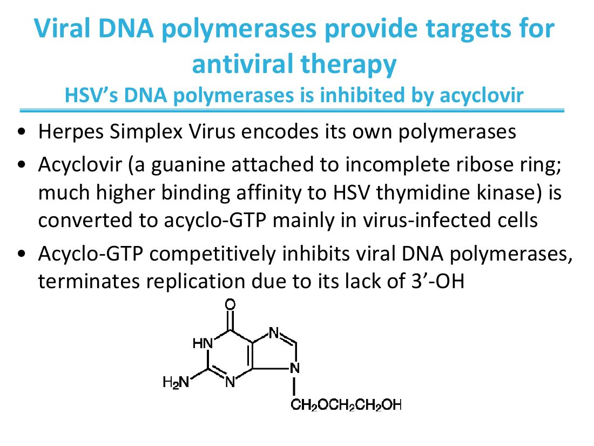
Viral DNA polymerases provide targets for antiviral therapy
바이러스 DNA 중합효소는 항바이러스 치료의 표적이 된다
HSV's DNA polymerases is inhibited by acyclovir
HSV의 DNA 중합효소는 아사이클로버에 의해 억제된다
Herpes Simplex Virus encodes its own polymerases
단순포진 바이러스(HSV)는 자신의 중합효소를 암호화한다
Acyclovir (a guanine attached to incomplete ribose ring; much higher binding affinity to HSV thymidine kinase) is converted to acyclo-GTP mainly in virus-infected cells
아사이클로버(불완전한 리보스 고리에 붙은 구아닌; HSV 티미딘 인산화효소에 대한 결합 친화도가 훨씬 높음)는 주로 바이러스에 감염된 세포에서 아사이클로-GTP로 전환된다
Acyclo-GTP competitively inhibits viral DNA polymerases, terminates replication due to its lack of 3'-OH
아사이클로-GTP는 바이러스 DNA 중합효소를 경쟁적으로 억제하며, 3'-OH가 없기 때문에 복제를 종결시킨다
(structure) O / HN / H₂N / N / N / N / CH₂OCH₂CH₂OH
(구조식) O / HN / H₂N / N / N / N / CH₂OCH₂CH₂OH
기출 1건 · 테스트뱅크 1건 형광펜 = 실제로 물어본 문장2017 퀴즈TB 26-25
AZT (3'-azido-2',3'-dideoxythymidine), used to treat HIV infection, acts in HIV-infected cells by: blocking ATP production / blocking deoxynucleotide synthesis / inhibiting reverse transcriptase / inhibiting RNA pol II / inhibiting RNA processing
정답·포인트 inhibiting reverse transcriptase — 아사이클로버처럼 3'-OH가 없어 사슬을 끊는 같은 원리(26장 역전사효소와 연결).
TB 25-42단답·서술
[서술] 아시클로비르(acyclovir)가 단순포진 바이러스에 효과적인 이유는?
정답·포인트 아시클로비르는 리보스 고리가 불완전한 구아닌 뉴클레오사이드로, 숙주 효소보다 바이러스의 티미딘 키나아제에 의해 훨씬 효율적으로 인산화된다. 이후 아시클로-GTP로 추가 전환되는데, 이는 숙주 효소보다 바이러스 DNA 중합효소를 더 강하게 경쟁적으로 억제하며, DNA에 삽입되면 3' 하이드록실기가 없기 때문에 사슬 종결자(chain terminator)로 작용한다.
시험 포인트HSV = 자체 DNA 중합효소. 아사이클로버 = 구아닌 + 불완전한 리보스 고리, HSV 티미딘 인산화효소에 친화도↑ → 감염 세포에서 주로 아사이클로-GTP로 전환 → 바이러스 중합효소 경쟁적 억제 + 3'-OH 없음 → 사슬 종결.
그림 해설·더 깊이까지 보기 →5
돌연변이·손상의 종류와 불일치 수선
슬라이드 35–41
처음이라면 · 큰 그림부터
DNA는 세포마다 하루 수천 군데씩 망가져요. 그래도 실제 돌연변이로 남는 건 극히 일부인데, 고치는 장치가 여러 겹이라서예요. 5단원부터 7단원까지는 "어떤 손상을 누가 고치나"를 짝짓는 게 전부라고 생각해도 돼요.
손상은 DNA 화학 구조가 바뀐 것이고, 그게 고쳐지지 않은 채 복제되어 서열 자체가 바뀌면 돌연변이가 돼요. 발암물질 대부분이 돌연변이를 일으키는 물질이라는 점을 이용해, 세균에서 돌연변이가 얼마나 생기는지로 발암 가능성을 가리는 게 에임스 시험이에요.
불일치 수선은 복제 중 중합효소가 놓친 틀린 짝(예: G–T)을 고쳐요. 핵심 문제는 두 가닥 중 어느 쪽이 틀렸는지 아는 거예요. 대장균은 원래 가닥에만 메틸 표시(GATC 서열의 A)가 있고, 새 가닥은 만들어진 직후 잠깐 동안 표시가 없어요. 그래서 표시 없는 쪽을 새 가닥, 곧 틀린 쪽으로 판단하고 그 가닥을 잘라 다시 만들어요. MutS가 틀린 짝을 찾고, MutL이 다리를 놓고, MutH가 메틸화 안 된 가닥을 잘라요.
흐름 한 줄
MutS: 불일치 인식→MutL 결합→MutH: 비메틸화 GATC 절단→헬리케이스 II + 엑소로 제거→Pol III + 연결효소로 다시 채움
이 단원에서 처음 나오는 말
- 손상 vs 돌연변이
- 손상은 화학적 변화(고칠 수 있음), 돌연변이는 서열 변화(복제로 굳어짐).
- 치환 · 삽입 · 결실
- 염기 하나가 다른 염기로 바뀜 / 염기가 끼어듦 / 빠짐.
- 에임스 시험
- His을 못 만드는 살모넬라가 물질 처리 후 His 없이 자라는 되돌이 돌연변이 빈도로 돌연변이 유발성을 재는 시험.
- 반메틸화 DNA
- 헌 가닥만 메틸화되고 새 가닥은 아직 메틸화 전인 상태. 불일치 수선의 가닥 구분 표지.
여기부터 자세히
- 손상 수천 개/일 → 수선 덕에 1/1000만 돌연변이. 발암물질 대부분 = 돌연변이원 → 에임스 시험(His⁻ 살모넬라).
- 손상 4종 ↔ 수선 4경로(표 25-5). 불일치 수선 = 메틸화 안 된 새 가닥을 잘라 고침.
- MutS(인식)·MutL·MutH(비메틸화 가닥 절단) → 헬리케이스 II + 엑소 → Pol III + 연결효소. 진핵: MSH2–MSH6(단일)·MSH2–MSH3(긴), MLH1–PMS1.
손상과 돌연변이
DNA는 하루 수천 군데 손상되지만 수선 덕분에 1/1000만 돌연변이로 남아요. 돌연변이가 쌓이면 암과 강하게 연관되고, 그래서 발암물질 대부분은 돌연변이원이에요. 사람은 수선 단백질 유전자를 130개 넘게 가지고 있어요. 침묵 돌연변이는 유전자 기능에 거의 영향이 없어요.
에임스 시험은 이 관계를 이용해요: His를 못 만드는 살모넬라를 His 없는 배지에 깔고 시험 물질을 주면, 돌연변이원일 경우 복귀 돌연변이로 His 합성 능력을 되찾은 군체가 생겨요. 원판 바로 주변의 투명한 영역은 농도가 너무 높아 세포가 죽은 곳이에요.
손상 4종 ↔ 수선 4경로 (표 25-5)
| 손상 | 원인 | 수선 경로 | 주요 효소 |
|---|
| 불일치 | 틀린 뉴클레오타이드 삽입 | 불일치 수선 | Dam, MutH·L·S, 헬리케이스 II, SSB, Pol III, 엑소 I·VII·X, RecJ, 연결효소 |
| 비정상 염기(U, 하이포잔틴, 잔틴), 알킬화 염기 | 탈아미노화·알킬화·자유라디칼 | 염기 절제(BER) | 글리코실레이스, AP 엔도, Pol I, 연결효소 |
| 큰 구조 변형(피리미딘 이량체) | UV 등 | 뉴클레오타이드 절제(NER) | ABC 엑시뉴클레이스, Pol I, 연결효소 |
| 피리미딘 이량체 / O⁶-메틸G / 1-메틸G·3-메틸C | UV / 알킬화 | 직접 수선 | 광분해효소 / O⁶-메틸G 메틸전달효소 / AlkB |
뼈대 병변은 이온화 방사선·자유라디칼로 생겨요.
불일치 수선: 어느 가닥이 틀렸는지 아는 방법
대장균은 Dam이 GATC의 A를 메틸화하는데, 복제 직후 몇 분간은 헌 가닥만 메틸화된 반메틸화 상태예요. 복제 오류는 무조건 메틸화 안 된 새 가닥에 있으니 그 가닥을 잘라 고쳐요. 두 가닥 다 비메틸화면 수선은 하되 어느 쪽도 우선하지 않고, 둘 다 메틸화면 수선하지 않아요.
MutS
불일치 인식MutL–MutS
ATP로 DNA 끌어당김MutH
반메틸화 GATC에서
비메틸화 가닥 절단헬리케이스 II + 엑소
절단점 → 불일치까지 분해Pol III + SSB
→ 연결효소
불일치는 GATC에서 최대 1,000 bp 떨어져 있을 수 있어요. 엑소는 절단점에서 불일치 쪽으로 먹어 들어가야 하니, 불일치가 절단점의 3'쪽이면 5'→3' 엑소(엑소 VII, RecJ), 5'쪽이면 3'→5' 엑소(엑소 I, 엑소 X)를 써요.
진핵생물은 MutS 상동체 MSH2·MSH3·MSH6(MSH2–MSH6 = 염기 하나 불일치, MSH2–MSH3 = 더 긴 불일치)과 MutL 상동체 MLH1–PMS1을 써요. 이 유전자들이 고장 나면 흔한 유전성 암 감수성 증후군(HNPCC)이 생겨요.
이 단원 기출·테스트뱅크 8건 문제·정답은 슬라이드를 펼치거나 번역본에서- 20232016단답·서술 불일치 수선 엑소(I·X / VII·RecJ) 슬라이드 40
- 2021TB 25-15 불일치 수선에 없는 것(글리코실레이스) 슬라이드 37
- TB 25-13 에임스 시험(Ames test)은 다음에 사용된다: 슬라이드 36
- TB 25-14 포유류 세포에서 DNA 수선 시스템은: 슬라이드 35
- TB 25-16 Dam 메틸화효소의 역할은: 슬라이드 38
- TB 25-17 세균 DNA 복제 과정에서 이중가닥 DNA에 불일치(mismatch)가 생기면, 메… 슬라이드 38
- TB 25-22 DNA에서 화학적으로 변형된 염기를 수선하는 데 사용되는 기전은? 슬라이드 37
- TB 25-44단답·서술 수선이 필요한 DNA 손상의 세 가지 유형을 나열하라. 슬라이드 37
이 단원 슬라이드 원문·번역 펼쳐서 보기
슬라이드 35DNA 수선과 돌연변이TB 2원문·번역

DNA Repair and Mutations
DNA 수선과 돌연변이
Chemical reactions and some physical processes constantly damage genomic DNA
화학 반응과 일부 물리적 과정이 유전체 DNA를 끊임없이 손상시킨다
Accumulation of mutations in eukaryotic cells is strongly correlated with cancer; most carcinogens are also mutagens
진핵세포에서 돌연변이의 축적은 암과 강한 상관관계가 있다; 대부분의 발암물질은 돌연변이원이기도 하다
Thousands of lesions (DNA damage) /day but only 1/1000 become a mutation, thanks to DNA repair
하루에 수천 개의 병변(DNA 손상)이 생기지만, DNA 수선 덕분에 그중 1/1000만 돌연변이가 된다
Human genome contains genes for > 130 repair proteins
사람 유전체는 130개가 넘는 수선 단백질의 유전자를 가지고 있다
Silent mutation—has ~no effect on gene function
침묵 돌연변이 — 유전자 기능에 거의 영향이 없다
테스트뱅크 2건 형광펜 = 실제로 물어본 문장TB 25-14
포유류 세포에서 DNA 수선 시스템은:
- A 에너지 면에서 극도로 효율적이다.
- B 난자와 정자 세포를 제외하고는 일반적으로 없다.
- C 결실(deletion)은 수선할 수 있지만 잘못된 짝(mismatch)은 수선할 수 없다.
- D UV에 의한 손상을 제외한 대부분의 손상을 수선할 수 있다.
- E 발생하는 DNA 손상의 99% 이상을 정상적으로 수선한다.
정답·포인트 E 발생하는 DNA 손상의 99% 이상을 정상적으로 수선한다. — 수선 시스템은 에너지를 많이 쓰지만(비효율적) 손상의 99.9% 이상을 고친다.
시험 포인트손상 수천 개/일 → 1/1000만 돌연변이(수선 덕분). 돌연변이 축적 ↔ 암, 대부분의 발암물질 = 돌연변이원(→ 다음 슬라이드 에임스 시험의 근거). 사람 수선 단백질 유전자 >130개. 침묵 돌연변이 = 기능에 거의 영향 없음.
그림 해설·더 깊이까지 보기 →슬라이드 36에임스 시험은 화합물의 돌연변이 유발 가능성을 보여준다 (그림 25-20)TB 1원문·번역

The Ames test indicates the mutagenic potential of a compound
에임스 시험은 화합물의 돌연변이 유발 가능성을 보여준다
Developed by Bruce Ames
브루스 에임스가 개발했다
Uses Salmonella strain with a mutation that makes bacterium unable to synthesize His
세균이 His(히스티딘)를 합성하지 못하게 만드는 돌연변이를 가진 살모넬라 균주를 사용한다
Add compound to plate of Salmonella, see if it grows in His-free medium
살모넬라 배양 접시에 화합물을 넣고, His가 없는 배지에서 자라는지 본다
Colonies (+ test) indicates the compound mutated the Salmonella, restored ability to synthesize His
군체가 생기면(양성) 그 화합물이 살모넬라에 돌연변이를 일으켜 His 합성 능력을 회복시켰다는 뜻이다
(a) / (b) / (c) / (d)
(a) / (b) / (c) / (d)
Ames test for carcinogens, based on their mutagenicity. Three identical nutrient plates (b), (c), and (d) have been inoculated with an equal number of cells. Each plate then receives a disk of filter paper containing progressively lower concentrations of a mutagen. The mutagen greatly increases the rate of back-mutation and hence the number of colonies. The clear areas around the filter paper indicate where the concentration of mutagen is so high that it is lethal to the cells. As the mutagen diffuses away from the filter paper, it is diluted to sublethal concentrations that promote back-mutation.
돌연변이 유발성에 근거한 발암물질 검출용 에임스 시험. 동일한 영양 배지 (b), (c), (d)에 같은 수의 세포를 접종했다. 그다음 각 배지에 돌연변이원 농도가 점점 낮아지는 여과지 원판을 하나씩 놓았다. 돌연변이원은 복귀 돌연변이의 빈도를 크게 높이고, 따라서 군체의 수를 늘린다. 여과지 주변의 투명한 영역은 돌연변이원 농도가 너무 높아 세포에 치명적인 곳을 나타낸다. 돌연변이원이 여과지에서 멀리 확산될수록 희석되어, 복귀 돌연변이를 촉진하는 치사량 이하의 농도가 된다.
테스트뱅크 1건 형광펜 = 실제로 물어본 문장TB 25-13
에임스 시험(Ames test)은 다음에 사용된다:
- A 세균 바이러스 검출
- B DNA 복제 속도 측정
- C 항생제의 효력 검사
- D 다양한 화합물의 돌연변이 유발 효과 측정
- E UV가 DNA 분자에 미치는 손상 효과 정량
정답·포인트 D 다양한 화합물의 돌연변이 유발 효과 측정 — His⁻ 살모넬라 균주가 화합물에 의해 His⁺로 복귀돌연변이되는 빈도로 돌연변이원성(≈발암 가능성)을 평가.
시험 포인트개발자 브루스 에임스, 균 = His 합성 불능 살모넬라, 배지 = His 없는 배지, 군체 생김 = 양성(돌연변이원). 원판 주변 투명 영역 = 농도가 너무 높아 치사, 멀어질수록 희석 → 복귀 돌연변이↑. 원리 = 발암물질 대부분이 돌연변이원.
그림 해설·더 깊이까지 보기 →슬라이드 37DNA 손상의 종류와 대장균의 수선 체계 (표 25-5)기출 2TB 3원문·번역
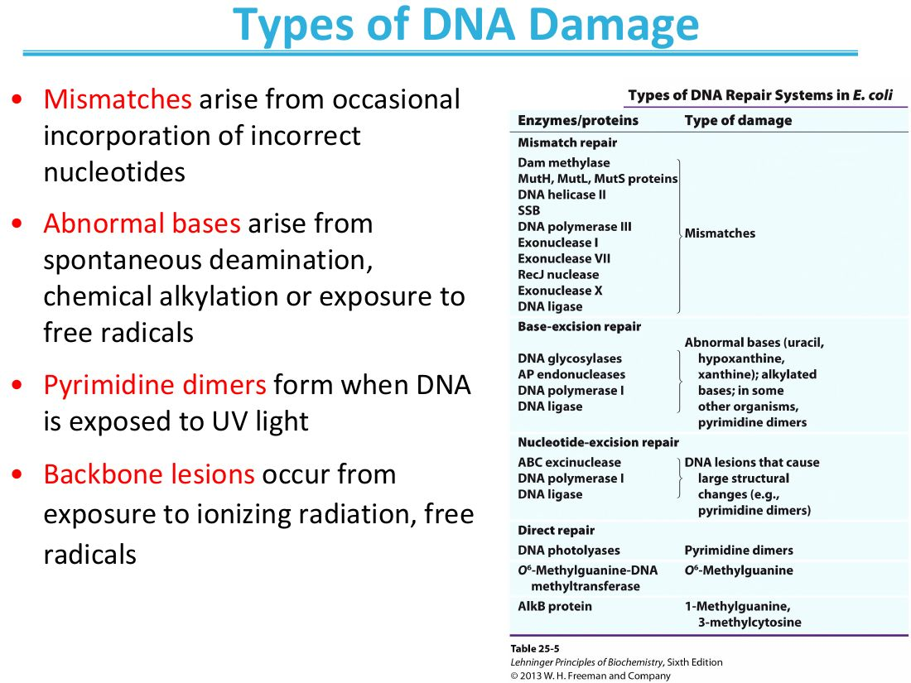
Types of DNA Damage
DNA 손상의 종류
Mismatches arise from occasional incorporation of incorrect nucleotides
불일치는 가끔 틀린 뉴클레오타이드가 끼어들어 생긴다
Abnormal bases arise from spontaneous deamination, chemical alkylation or exposure to free radicals
비정상 염기는 자발적 탈아미노화, 화학적 알킬화, 또는 자유라디칼 노출로 생긴다
Pyrimidine dimers form when DNA is exposed to UV light
피리미딘 이량체는 DNA가 자외선(UV)에 노출될 때 형성된다
Backbone lesions occur from exposure to ionizing radiation, free radicals
뼈대 병변은 이온화 방사선, 자유라디칼 노출로 생긴다
Types of DNA Repair Systems in E. coli (Table 25-5)
대장균의 DNA 수선 체계 종류 (표 25-5)
Enzymes/proteins / Type of damage
효소/단백질 / 손상의 종류
Mismatch repair: Dam methylase; MutH, MutL, MutS proteins; DNA helicase II; SSB; DNA polymerase III; Exonuclease I; Exonuclease VII; RecJ nuclease; Exonuclease X; DNA ligase / Mismatches
불일치 수선: Dam 메틸화효소; MutH, MutL, MutS 단백질; DNA 헬리케이스 II; SSB; DNA 중합효소 III; 엑소뉴클레이스 I; 엑소뉴클레이스 VII; RecJ 뉴클레이스; 엑소뉴클레이스 X; DNA 연결효소 / 불일치
Base-excision repair: DNA glycosylases; AP endonucleases; DNA polymerase I; DNA ligase / Abnormal bases (uracil, hypoxanthine, xanthine); alkylated bases; in some other organisms, pyrimidine dimers
염기 절제 수선: DNA 글리코실레이스; AP 엔도뉴클레이스; DNA 중합효소 I; DNA 연결효소 / 비정상 염기(유라실, 하이포잔틴, 잔틴); 알킬화된 염기; 일부 다른 생물에서는 피리미딘 이량체
Nucleotide-excision repair: ABC excinuclease; DNA polymerase I; DNA ligase / DNA lesions that cause large structural changes (e.g., pyrimidine dimers)
뉴클레오타이드 절제 수선: ABC 엑시뉴클레이스; DNA 중합효소 I; DNA 연결효소 / 큰 구조적 변화를 일으키는 DNA 병변(예: 피리미딘 이량체)
Direct repair: DNA photolyases / Pyrimidine dimers
직접 수선: DNA 광분해효소(광회복효소) / 피리미딘 이량체
O⁶-Methylguanine-DNA methyltransferase / O⁶-Methylguanine
O⁶-메틸구아닌-DNA 메틸전달효소 / O⁶-메틸구아닌
AlkB protein / 1-Methylguanine, 3-methylcytosine
AlkB 단백질 / 1-메틸구아닌, 3-메틸사이토신
기출 2건 · 테스트뱅크 3건 형광펜 = 실제로 물어본 문장2021TB 25-15
Which of these enzymes is not directly involved in methyl-directed mismatch repair in E. coli? — DNA glycosylase / DNA helicase II / DNA ligase / DNA polymerase III / Exonuclease I
정답·포인트 DNA glycosylase (염기 절제 수선 효소).
TB 25-22
DNA에서 화학적으로 변형된 염기를 수선하는 데 사용되는 기전은?
- A 불일치 수선
- B 염기 절제 수선
- C 뉴클레오타이드 절제 수선
- D 직접 수선
- E 이 유형의 손상에는 한 가지 이상의 기전이 사용된다
정답·포인트 E 이 유형의 손상에는 한 가지 이상의 기전이 사용된다 — 변형 염기는 종류에 따라 BER(탈아미노 염기 등), NER(부피 큰 부가물), 직접 수선(O⁶-메틸구아닌 → 메틸전달효소)으로 모두 고쳐질 수 있다.
TB 25-44단답·서술
[서술] 수선이 필요한 DNA 손상의 세 가지 유형을 나열하라.
정답·포인트 수선이 필요한 DNA 결함에는 (a) 복제 중 발생하는 불일치(mismatch); (b) 비정상 염기; (c) UV 조사에 의해 생성되는 피리미딘 이량체가 포함된다. 다른 답도 가능하다.
시험 포인트손상 4종: 불일치(틀린 뉴클레오타이드)·비정상 염기(탈아미노화·알킬화·자유라디칼)·피리미딘 이량체(UV)·뼈대 병변(이온화 방사선·자유라디칼). 표 블록별 효소 목록 그대로(특히 BER = 글리코실레이스·AP 엔도·Pol I·연결효소, NER = ABC 엑시뉴클레이스·Pol I·연결효소, 직접 수선 3쌍).
그림 해설·더 깊이까지 보기 →슬라이드 38불일치 수선은 메틸화에 의존한다 (그림 25-21)기출 1TB 2원문·번역

Mismatch Repair Relies on Methylation
불일치 수선은 메틸화에 의존한다
How do repair enzymes "know" which strand is the correct one?
수선 효소는 어느 가닥이 올바른 가닥인지 어떻게 '아는가'?
In E. coli, the parent strand is methylated :Dam methylase inserts CH₃ at adenines in GATC sequence.
대장균에서 부모 가닥은 메틸화되어 있다: Dam 메틸화효소가 GATC 서열의 아데닌에 CH₃를 붙인다.
The newly synthesized strand is unmethylated for a short period after synthesis.
새로 합성된 가닥은 합성 후 잠깐 동안 메틸화되지 않은 상태다.
Any replication errors must reside in the unmethylated strand. Methyl-directed mismatch repair system will cleave the unmethylated strand in the initial part of the repair process
모든 복제 오류는 반드시 메틸화되지 않은 가닥에 있다. 메틸 지시 불일치 수선 체계는 수선 과정의 초기에 메틸화되지 않은 가닥을 자른다
Replication mismatches in the vicinity of a hemimethylated GATC sequences are then repaired according to the information in the methylated parent strand.
그다음 반메틸화된 GATC 서열 근처의 복제 불일치는 메틸화된 부모 가닥의 정보에 따라 수선된다.
If both strands are unmethylated, repair occurs, but does not favor either strand
두 가닥 모두 메틸화되지 않았다면, 수선은 일어나지만 어느 가닥도 우선하지 않는다
If both strands are methylated, no repair occurs
두 가닥 모두 메틸화되어 있다면, 수선이 일어나지 않는다
CH₃ / G A T C / C T A G / 5' / 3' / replication
CH₃ / G A T C / C T A G / 5' / 3' / 복제
For a short period following replication, the template strand is methylated and the new strand is not.
복제 직후 짧은 기간 동안, 주형 가닥은 메틸화되어 있고 새 가닥은 메틸화되어 있지 않다.
Hemimethylated DNA
반메틸화된 DNA
Dam methylase / After a few minutes the new strand is methylated and the two strands can no longer be distinguished.
Dam 메틸화효소 / 몇 분 후 새 가닥도 메틸화되어 두 가닥을 더 이상 구별할 수 없다.
기출 1건 · 테스트뱅크 2건 형광펜 = 실제로 물어본 문장TB 25-16
Dam 메틸화효소의 역할은:
- A 우라실에 메틸기를 붙여 티민으로 바꾸는 것
- B 수선 시스템이 인식할 수 있도록 주형 가닥을 변형(표시)하는 것
- C 티민에서 메틸기를 제거하는 것
- D 주형 가닥에서 잘못 짝지어진 뉴클레오타이드를 제거하는 것
- E 잘못 짝지어진 뉴클레오타이드를 올바른 것으로 교체하는 것
정답·포인트 B 수선 시스템이 인식할 수 있도록 주형 가닥을 변형(표시)하는 것 — Dam은 GATC의 A를 메틸화. 복제 직후 새 가닥은 아직 메틸화 전(반메틸화)이므로 메틸화된 쪽 = 주형(원본)으로 구별된다.
TB 25-17
세균 DNA 복제 과정에서 이중가닥 DNA에 불일치(mismatch)가 생기면, 메틸기 유도 수선 시스템은:
- A 주형 가닥과 새로 복제된 가닥을 구별할 수 없다.
- B 주형 가닥과 새로 복제된 가닥을 모두 바꾼다.
- C 메틸화된 가닥을 교정한다.
- D 새로 복제된 가닥을 바꿈으로써 불일치를 교정한다.
- E 주형 가닥을 바꿈으로써 불일치를 교정한다.
정답·포인트 D 새로 복제된 가닥을 바꿈으로써 불일치를 교정한다. — 메틸화 안 된(새) 가닥이 틀린 것으로 간주되어 그쪽이 잘려 나가고 다시 합성된다.
시험 포인트대장균: Dam이 GATC의 A에 CH₃ → 복제 직후 새 가닥은 잠깐 비메틸화 → 오류는 비메틸화 가닥에 → 비메틸화 가닥을 자름. 반메틸화 GATC 근처 불일치는 메틸화된 부모 가닥 정보로 수선. 둘 다 비메틸화 = 수선은 하지만 가닥 선호 없음, 둘 다 메틸화 = 수선 없음.
그림 해설·더 깊이까지 보기 →슬라이드 39대장균의 메틸화 지시 불일치 수선: 초기 단계 (그림 25-22)기출 3TB 1원문·번역
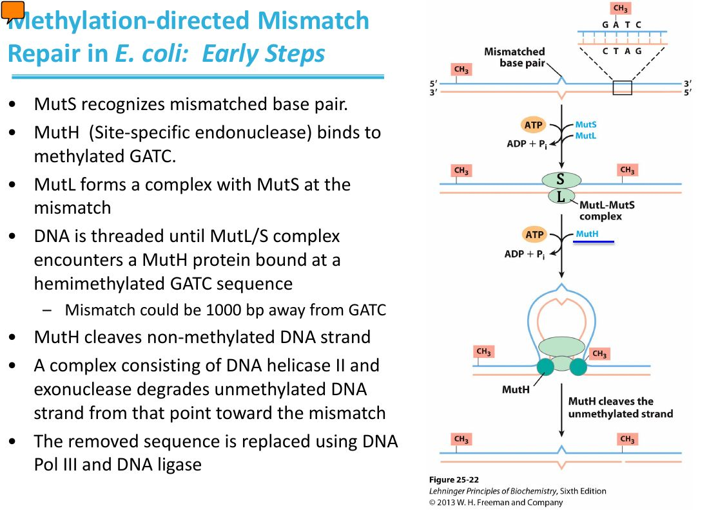
Methylation-directed Mismatch Repair in E. coli: Early Steps
대장균의 메틸화 지시 불일치 수선: 초기 단계
MutS recognizes mismatched base pair.
MutS가 잘못 짝지어진 염기쌍을 인식한다.
MutH (Site-specific endonuclease) binds to methylated GATC.
MutH(부위 특이적 엔도뉴클레이스)는 메틸화된 GATC에 결합한다.
MutL forms a complex with MutS at the mismatch
MutL은 불일치 자리에서 MutS와 복합체를 형성한다
DNA is threaded until MutL/S complex encounters a MutH protein bound at a hemimethylated GATC sequence
MutL/S 복합체가 반메틸화된 GATC 서열에 결합한 MutH 단백질을 만날 때까지 DNA가 (복합체를 통해) 끌어당겨진다
Mismatch could be 1000 bp away from GATC
불일치는 GATC에서 1,000 bp나 떨어져 있을 수도 있다
MutH cleaves non-methylated DNA strand
MutH는 메틸화되지 않은 DNA 가닥을 자른다
A complex consisting of DNA helicase II and exonuclease degrades unmethylated DNA strand from that point toward the mismatch
DNA 헬리케이스 II와 엑소뉴클레이스로 이루어진 복합체가 그 지점부터 불일치 쪽으로 메틸화되지 않은 DNA 가닥을 분해한다
The removed sequence is replaced using DNA Pol III and DNA ligase
제거된 서열은 DNA Pol III와 DNA 연결효소를 이용해 교체된다
CH₃ / G A T C / C T A G / Mismatched base pair / 5' / 3'
CH₃ / G A T C / C T A G / 잘못 짝지어진 염기쌍 / 5' / 3'
ATP / ADP + Pᵢ / MutS / MutL
ATP / ADP + Pᵢ / MutS / MutL
S / L / MutL-MutS complex
S / L / MutL-MutS 복합체
ATP / ADP + Pᵢ / MutH
ATP / ADP + Pᵢ / MutH (파란 밑줄)
MutH / MutH cleaves the unmethylated strand
MutH / MutH가 메틸화되지 않은 가닥을 자른다
기출 3건 · 테스트뱅크 1건 형광펜 = 실제로 물어본 문장 시험 포인트MutS = 불일치 인식, MutL = MutS와 복합체, MutH = 부위 특이적 엔도뉴클레이스, (반)메틸화 GATC 결합, 비메틸화 가닥 절단. 불일치–GATC 거리 최대 1,000 bp. 분해 = 헬리케이스 II + 엑소뉴클레이스, 재합성 = Pol III + 연결효소(BER·NER의 Pol I과 구분!).
그림 해설·더 깊이까지 보기 →슬라이드 40대장균의 메틸화 지시 DNA 수선: 후기 단계 (그림 25-23)기출 1원문·번역

Methylation-directed DNA Repair in E. coli: Later Steps
대장균의 메틸화 지시 DNA 수선: 후기 단계
The exonuclease that is used depends on the location of the cleavage site relative to the mismatch. The resulting gap is filled in (dashed line) by DNA polymerase III, and the nick is sealed by DNA ligase (not shown).
사용되는 엑소뉴클레이스는 불일치에 대한 절단 부위의 상대적 위치에 따라 달라진다. 생긴 틈은 DNA 중합효소 III가 채우고(점선), 닉은 DNA 연결효소가 봉합한다(그림에는 표시 안 됨).
When the mismatch is located on 3' side of cleavage site / Exonuclease w/ 5->3 direction
불일치가 절단 부위의 3'쪽에 있을 때 / 5'→3' 방향의 엑소뉴클레이스
When the mismatch is located on 5' side of cleavage site / Exonuclease w/ 3->5 direction
불일치가 절단 부위의 5'쪽에 있을 때 / 3'→5' 방향의 엑소뉴클레이스
CH₃ / 3' / 5' / ATP / ADP+Pᵢ / MutS / MutL / MutH
CH₃ / 3' / 5' / ATP / ADP+Pᵢ / MutS / MutL / MutH
(left) MutL-MutS / DNA helicase II / exonuclease VII or RecJ nuclease
(왼쪽) MutL-MutS / DNA 헬리케이스 II / 엑소뉴클레이스 VII 또는 RecJ 뉴클레이스
(right) MutL-MutS / DNA helicase II / exonuclease I or exonuclease X
(오른쪽) MutL-MutS / DNA 헬리케이스 II / 엑소뉴클레이스 I 또는 엑소뉴클레이스 X
DNA polymerase III / SSB
DNA 중합효소 III / SSB
기출 1건 형광펜 = 실제로 물어본 문장20232016단답·서술
불일치 수선에서 3'→5' 엑소 활성을 가진 효소(모두) — Exo I / II / III / V / VII (2016 단답: 그림 25-23 빈칸 엑소 이름)
정답·포인트 3'→5' = 엑소 I, 엑소 X / 5'→3' = 엑소 VII, RecJ. 단답 정답: (a) 불일치가 절단점 3'쪽 → Exo VII 또는 RecJ, (b) 5'쪽 → Exo I 또는 Exo X.
시험 포인트엑소 선택 = 절단 부위에 대한 불일치의 위치. 불일치가 3'쪽 → 5'→3' 엑소(엑소 VII 또는 RecJ), 불일치가 5'쪽 → 3'→5' 엑소(엑소 I 또는 엑소 X). 공통: MutL-MutS + 헬리케이스 II, 틈 메우기 Pol III + SSB, 봉합 연결효소.
그림 해설·더 깊이까지 보기 →슬라이드 41진핵세포의 불일치 수선 — MSH·MLH1/PMS1기출 1원문·번역
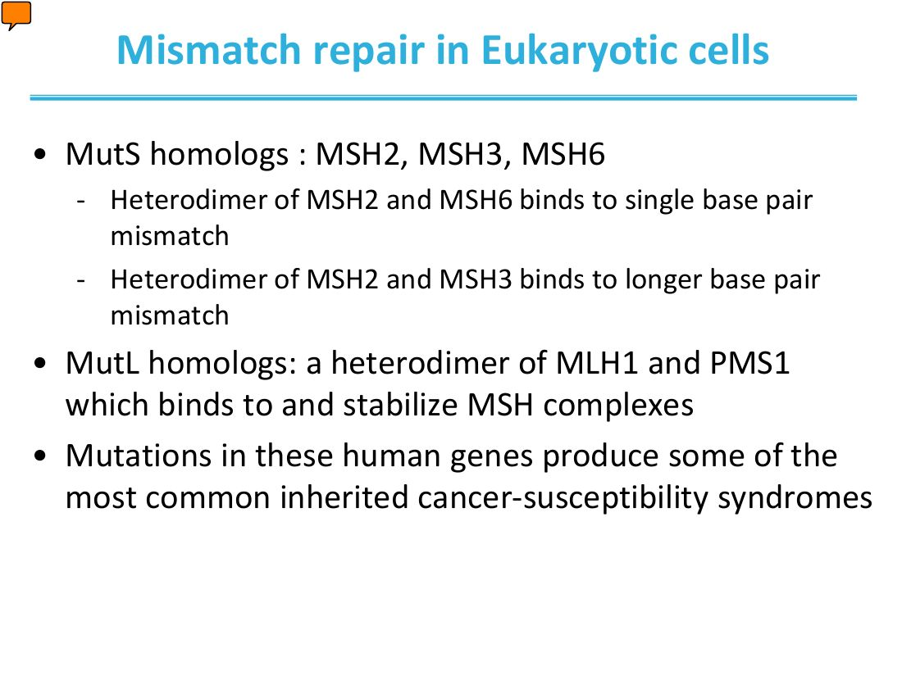
Mismatch repair in Eukaryotic cells
진핵세포의 불일치 수선
MutS homologs : MSH2, MSH3, MSH6
MutS 상동체: MSH2, MSH3, MSH6
Heterodimer of MSH2 and MSH6 binds to single base pair mismatch
MSH2와 MSH6의 이형이량체는 염기쌍 1개짜리 불일치에 결합한다
Heterodimer of MSH2 and MSH3 binds to longer base pair mismatch
MSH2와 MSH3의 이형이량체는 더 긴 염기쌍 불일치에 결합한다
MutL homologs: a heterodimer of MLH1 and PMS1 which binds to and stabilize MSH complexes
MutL 상동체: MLH1과 PMS1의 이형이량체로, MSH 복합체에 결합하여 이를 안정화한다
Mutations in these human genes produce some of the most common inherited cancer-susceptibility syndromes
사람의 이 유전자들에 돌연변이가 생기면 가장 흔한 유전성 암 감수성 증후군 중 일부가 생긴다
시험 포인트MutS 상동체 = MSH2·MSH3·MSH6: MSH2–MSH6 = 단일 염기쌍 불일치, MSH2–MSH3 = 더 긴 불일치(짝 바꿔 내기 단골). MutL 상동체 = MLH1–PMS1 이형이량체(MSH 복합체 결합·안정화). 돌연변이 → 흔한 유전성 암 감수성 증후군.
그림 해설·더 깊이까지 보기 →6
염기 절제·뉴클레오타이드 절제·직접 수선
슬라이드 42–48
처음이라면 · 큰 그림부터
망가진 범위에 따라 도구가 달라요. 염기 하나만 화학적으로 바뀌었으면(예: C가 저절로 아미노기를 잃고 U가 됨) 염기 절제 수선(BER)이에요. 그 염기만 뽑아내는 DNA 글리코실레이스가 당과 염기 사이 결합을 끊으면 염기 없는 자리(AP 자리)가 남고, AP 엔도뉴클레이스가 그 자리 뼈대를 자르면 중합효소와 연결효소가 메워요. 참고로 DNA가 U 대신 T를 쓰는 이유도 여기 있어요. C→U 변화가 흔해서, DNA가 원래 U를 쓴다면 정상 U와 망가진 C를 구분할 수 없거든요.
자외선으로 생긴 티민 이량체처럼 이중나선을 크게 뒤틀어 놓은 손상은 뉴클레오타이드 절제 수선(NER)이 맡아요. 손상 양쪽을 멀찍이 잘라 한 조각을 통째로 떼고 다시 채워요. 대장균은 12~13개, 사람은 27~29개 뉴클레오타이드 조각을 떼요. 이 장치가 고장 나면 햇빛에 극도로 약한 색소성 건피증(XP)이 생겨요.
자르지 않고 원래대로 되돌리는 직접 수선도 있어요. 빛 에너지로 티민 이량체를 쪼개는 광분해효소(사람에겐 없음), 잘못 붙은 메틸기를 떼어 자기 몸에 옮겨 버리는 메틸전달효소, 산화 반응으로 메틸을 떼는 AlkB가 그 예예요.
흐름 한 줄
BER: 글리코실레이스(염기 제거)→AP 엔도뉴클레이스(뼈대 절단)→Pol I(채움)→연결효소
이 단원에서 처음 나오는 말
- AP 자리
- 염기가 떨어져 나가고 당-인산 뼈대만 남은 자리(apurinic/apyrimidinic).
- DNA 글리코실레이스
- 특정한 손상 염기를 알아보고 당과의 결합(N-글리코실 결합)을 끊는 효소.
- 피리미딘(티민) 이량체
- 자외선을 받아 이웃한 두 피리미딘이 공유결합으로 붙어 버린 손상.
- 엑시뉴클레이스
- NER에서 손상 양쪽을 동시에 자르는 효소 복합체(대장균 UvrABC).
여기부터 자세히
- BER: 글리코실레이스(N-글리코실 결합 절단 → AP 자리) → AP 엔도 → Pol I → 연결효소. C→U 때문에 DNA는 T를 씀.
- NER: 엑시뉴클레이스가 양쪽 절단. 대장균 UvrABC = 3'쪽 5번째·5'쪽 8번째(12~13 nt), 진핵 = 3'쪽 6번째·5'쪽 22번째(27~29 nt).
- 직접 수선: O⁶-메틸G 메틸전달효소, 광분해효소(MTHFpolyGlu + FADH⁻, 사람엔 없음), AlkB(α-KG/Fe²⁺).
염기 절제 수선(BER): 망가진 염기 하나
손상 종류마다 전용 DNA 글리코실레이스가 있어서 당과 염기 사이의 N-글리코실 결합만 끊어요. 염기가 빠진 자리 = AP 자리(무염기 자리). 대표는 유라실 글리코실레이스예요. C는 저절로 탈아미노화돼 U가 되는데, U는 A와 짝을 지으므로 고치지 않으면 G-C → A-T 돌연변이가 생겨요. DNA가 U 대신 T를 쓰는 이유도 여기 있어요(DNA에 U가 있으면 무조건 손상으로 판단 가능). 다른 글리코실레이스는 8-하이드록시G, 하이포잔틴, 3-메틸아데닌을 제거해요.
① 글리코실레이스
염기만 제거 → AP 자리② AP 엔도뉴클레이스
뼈대 절단③ Pol I
3'-OH에서 합성,
5'→3' 엑소로 교체④ 연결효소
결국 염기만이 아니라 뉴클레오타이드 전체(때로 주변까지)가 바뀌어요.
뉴클레오타이드 절제 수선(NER): 덩치 큰 손상
피리미딘 이량체·6,4-광산물(UV), 벤조[a]피렌-구아닌(담배 연기)처럼 나선을 크게 뒤트는 손상은 그 구간을 통째로 오려내요. 손상 양쪽의 인산다이에스터 결합 두 개를 자르는 효소 = 엑시뉴클레이스.
| 대장균 | 사람 |
|---|
| 절단 위치 | 3'쪽 5번째, 5'쪽 8번째 | 3'쪽 6번째, 5'쪽 22번째 |
| 제거 길이 | 12~13 nt (13 mer) | 27~29 nt (29 mer) |
| 틈 메우기 | Pol I + 연결효소 | Pol ε + 연결효소 |
대장균 ABC 엑시뉴클레이스: UvrA·UvrB가 훑다가 손상에 결합 → UvrA 이탈, UvrC가 UvrB에 결합 → UvrB가 3'쪽, UvrC가 5'쪽 절개 → UvrD 헬리케이스가 조각 제거.
직접 수선: 자르지 않고 원상 복구
① O⁶-메틸구아닌-DNA 메틸전달효소: O⁶-메틸G는 C 대신 T와 짝을 지어 G≡C → A=T 돌연변이를 만들기 때문에 메틸기를 떼어내요. ② 광분해효소: MTHFpolyGlu가 청색광(300~500 nm)을 흡수 → 에너지를 FADH⁻로 → 들뜬 *FADH⁻가 사이클로뷰테인 이량체에 전자를 줘 고리를 끊음 → 전자가 돌아와 FADH⁻ 재생. 사람·태반 포유류에는 없어요. ③ AlkB: α-케토글루타르산–Fe²⁺ 의존성 수산화효소로 1-메틸아데닌·3-메틸사이토신의 메틸기를 –CH₂OH로 산화해 폼알데하이드로 떼어내요(부산물 숙신산 + CO₂).
표 25-5에는 AlkB 대상이 '1-메틸구아닌, 3-메틸사이토신'으로, 본문·그림에는 '1-메틸아데닌, 3-메틸사이토신'으로 되어 있어요. 둘 다 눈에 익혀 두세요.
이 단원 기출·테스트뱅크 14건 문제·정답은 슬라이드를 펼치거나 번역본에서- 202520192017 퀴즈단답·서술 NER 5' 절개 UvrC / 사람 excinuclease·Pol ε 슬라이드 45
- 2025 AlkB 반응(폼알데하이드) 슬라이드 48
- 2025 UV 이량체 수선에 안 쓰이는 것(NADH) 슬라이드 45
- 2021TB 25-20 광분해효소 보조인자 FADH 슬라이드 47
- 2016TB 25-18 BER 첫 효소(글리코실레이스) 슬라이드 42
- 2016레닌저 연습문제단답·서술 XP-G 서술(절개 단계) 슬라이드 45
- 2021레닌저 연습문제단답·서술 O⁶-메틸G 돌연변이 서술 슬라이드 46
- TB 25-19 ABC 엑시뉴클레아제(ABC excinuclease)는 다음에 필수적이다: 슬라이드 45
- TB 25-21 DNA의 티미딘 이량체를 수선하는 데 사용되는 기전은? 슬라이드 46
- TB 25-45단답·서술 왼쪽의 손상 유형 또는 수선 단계를 오른쪽의 관련 효소와 짝지어라. 각각에 대해 가… 슬라이드 42
- TB 25-46단답·서술 DNA 수선에서 DNA 글리코실라아제의 역할을 설명하라. 슬라이드 42
- TB 25-47단답·서술 염기 절제 수선과 뉴클레오타이드 절제 수선의 차이를 간략히 설명하라. 슬라이드 42
- TB 25-48단답·서술 대장균에서 피리미딘 이량체 같은 손상의 뉴클레오타이드 절제 수선 과정을 설명하라. 슬라이드 45
- TB 25-49단답·서술 뉴클레오타이드를 알킬화하는 DNA 손상이 때때로 전이(transition) 돌연변이… 슬라이드 46
이 단원 슬라이드 원문·번역 펼쳐서 보기
슬라이드 42염기 절제 수선은 특이적인 DNA 글리코실레이스를 쓴다기출 1TB 4원문·번역

Base excision repair uses specific DNA glycosylases
염기 절제 수선은 특이적인 DNA 글리코실레이스를 사용한다
DNA glycosylases recognize specific lesions (e.g.deamination of cytosine and adenine)
DNA 글리코실레이스는 특정 병변을 인식한다(예: 사이토신과 아데닌의 탈아미노화)
cleave N-glycosyl bond between sugar and base & creates apurinic/apyrimidinic (AP) site (also called abasic site)
당과 염기 사이의 N-글리코실 결합을 끊어 무퓨린/무피리미딘(AP) 자리를 만든다(무염기 자리라고도 함)
Uracil glycosylase removes uracil from DNA
유라실 글리코실레이스는 DNA에서 유라실을 제거한다
Important because C spontaneously deaminates to U; maybe why DNA evolved to contain T instead of U
중요한 이유: C는 자발적으로 탈아미노화되어 U가 되기 때문; 아마도 DNA가 U 대신 T를 갖도록 진화한 이유일 것이다
Mutant cells without uracil glycosylase have higher rate of G-C to A-T mutations because U base-pairs with A
유라실 글리코실레이스가 없는 돌연변이 세포는 G-C → A-T 돌연변이 빈도가 더 높은데, U가 A와 염기쌍을 이루기 때문이다
Other glycosylases make AP sites at 8-hydroxyG, hypoxanthine, 3-methyladenine, etc.
다른 글리코실레이스들은 8-하이드록시G, 하이포잔틴, 3-메틸아데닌 등에서 AP 자리를 만든다
기출 1건 · 테스트뱅크 4건 형광펜 = 실제로 물어본 문장2016TB 25-18
염기 절제 수선에서 처음 사용되는 효소 — Dam methylase / AP endonuclease / DNA glycosylase / DNA ligase / DNA polymerase
정답·포인트 DNA 글리코실레이스 → AP 엔도뉴클레이스 → Pol I → 연결효소.
TB 25-45단답·서술
[서술] 왼쪽의 손상 유형 또는 수선 단계를 오른쪽의 관련 효소와 짝지어라. 각각에 대해 가장 직접적인 답은 하나뿐이다.
| 손상 유형 / 수선 단계 | 효소 |
|---|
| ___ 사이토신 탈아미노화 | (a) 하이포잔틴-N-글리코실라아제 |
| ___ 염기 소실 | (b) AP 엔도뉴클레아제 |
| ___ 아데닌 탈아미노화 | (c) mutH 단백질 |
| ___ GATC 서열에 결합 | (d) DNA 중합효소 I |
| ___ DNA의 불일치 부위에 결합 | (e) 우라실 N-글리코실라아제 |
| ___ 틈(gap)에서의 DNA 합성 | (f) mutS-mutL 복합체 |
| ___ 닉 봉합 | (g) ABC 엑시뉴클레아제 |
| ___ O⁶-메틸구아닌 | (h) DNA 광분해효소 |
| ___ 피리미딘 이량체 형성의 직접적 화학 역전 | (i) O⁶-메틸구아닌 메틸전달효소 |
| ___ 이중가닥 절단 | (j) DNA 리가아제 |
| ___ 손상 포함 올리고뉴클레오타이드의 절제 | (k) λ 인테그레이스 |
| (l) RecA 단백질 |
| (m) 제한 엔도뉴클레아제 |
정답·포인트 e; b; a; c; f; d; j; i; h; m; g
| 사이토신 탈아미노화 | (e) 우라실 N-글리코실라아제 |
| 염기 소실 | (b) AP 엔도뉴클레아제 |
| 아데닌 탈아미노화 | (a) 하이포잔틴-N-글리코실라아제 |
| GATC 결합 | (c) mutH |
| 불일치 결합 | (f) mutS-mutL |
| 틈에서 DNA 합성 | (d) DNA Pol I |
| 닉 봉합 | (j) DNA 리가아제 |
| O⁶-메틸구아닌 | (i) O⁶-메틸구아닌 메틸전달효소 |
| 피리미딘 이량체 직접 역전 | (h) DNA 광분해효소 |
| 이중가닥 절단 | (m) 제한 엔도뉴클레아제 |
| 올리고뉴클레오타이드 절제 | (g) ABC 엑시뉴클레아제 |
'이중가닥 절단 → 제한 엔도뉴클레아제'는 이중가닥 절단을 '만드는' 효소라는 의미의 짝. TB 25-46단답·서술
[서술] DNA 수선에서 DNA 글리코실라아제의 역할을 설명하라.
정답·포인트 자발적 탈아미노화로 DNA의 사이토신이 우라실로, 또는 아데닌이 하이포잔틴으로 바뀌면, DNA 글리코실라아제가 결함 있는 염기와의 N-글리코사이드 결합을 끊어 '무염기(abasic)' 또는 'AP' 자리를 만든다. 그다음 AP 자리를 포함한 영역이 AP 엔도뉴클레아제에 의해 잘려 나가고, 생긴 틈은 DNA 중합효소 I이 채우고 DNA 리가아제가 봉합한다. (997쪽 그림 25-25 참조) 다른 DNA 글리코실라아제들은 다른 유형의 변형되거나 손상된 염기를 인식한다.
TB 25-47단답·서술
[서술] 염기 절제 수선과 뉴클레오타이드 절제 수선의 차이를 간략히 설명하라.
정답·포인트 염기 절제는 염기와 디옥시리보스 사이의 N-글리코사이드 결합을 절단하여 결함 있는 염기만 DNA에서 제거하는 것이다. 이로써 퓨린 없는(apurinic) 또는 피리미딘 없는(apyrimidinic) 자리가 남게 되며, 이는 추가 수선 과정을 거쳐야 한다. 뉴클레오타이드 절제는 DNA 사슬의 포스포다이에스터 결합을 절단하여 결함 있는 염기를 그 디옥시리보스·인산과 함께(그리고 이웃한 뉴클레오타이드 일부도 함께) 제거하는 것이다.
시험 포인트DNA 글리코실레이스 = 특정 병변 인식 → N-글리코실 결합(당–염기) 절단 → AP 자리(무염기 자리). C → U 자발적 탈아미노화 → DNA가 T를 쓰는 이유. 유라실 글리코실레이스 결손 → G-C → A-T 돌연변이↑(U가 A와 짝). 기타 대상: 8-하이드록시G, 하이포잔틴, 3-메틸아데닌.
그림 해설·더 깊이까지 보기 →슬라이드 43세균의 AP 자리에서의 염기 절제 수선 (그림 25-24)기출 2원문·번역

Base Excision Repair at AP Sites in Bacteria
세균의 AP 자리에서의 염기 절제 수선
The entire nucleotide is ultimately removed, not just the damaged base
결국 손상된 염기만이 아니라 뉴클레오타이드 전체가 제거된다
In fact, sometimes the region around the AP site is removed
실제로는 때때로 AP 자리 주변 부위까지 제거된다
DNA glycosylase recognizes a damaged base (in this case, a uracil)
DNA 글리코실레이스가 손상된 염기를 인식한다(이 경우 유라실)
AP endonucleases cut the DNA phosphodiester backbone around the AP site, remove DNA
AP 엔도뉴클레이스가 AP 자리 주변의 DNA 인산다이에스터 뼈대를 자르고 DNA를 제거한다
DNA polymerase I initiates repair synthesis from the free 3' hydroxyl at the nick, removing (with its 5'→3' exonuclease activity) and replacing a portion of the damaged strand
DNA 중합효소 I은 닉의 자유 3' 하이드록실에서 수선 합성을 시작하며, (5'→3' 엑소뉴클레이스 활성으로) 손상된 가닥의 일부를 제거하고 교체한다
DNA ligase seals the nick
DNA 연결효소가 닉을 봉합한다
① DNA glycosylase (uracil glycosylase) / U
① DNA 글리코실레이스(유라실 글리코실레이스) / U (떨어져 나옴)
② AP endonuclease
② AP 엔도뉴클레이스
③ DNA polymerase I / NTPs / Deoxyribose phosphate + dNMPs / Nick / New DNA
③ DNA 중합효소 I / NTP(원문 표기; 실제 기질은 dNTP) / 데옥시리보스 인산 + dNMP (나옴) / 닉 / 새 DNA
P / G / A / C / T / U / 5' / 3'
P(인산) / G / A / C / T / U / 5' / 3'
시험 포인트BER 순서: 글리코실레이스(염기 제거, AP 자리) → AP 엔도뉴클레이스(뼈대 절단) → Pol I(3'-OH에서 시작, 5'→3' 엑소로 제거하며 교체) → 연결효소. 최종적으로 뉴클레오타이드 전체(때로는 주변까지) 제거.
그림 해설·더 깊이까지 보기 →슬라이드 44DNA 나선 구조의 큰 왜곡은 뉴클레오타이드 절제로 수선된다TB 1원문·번역
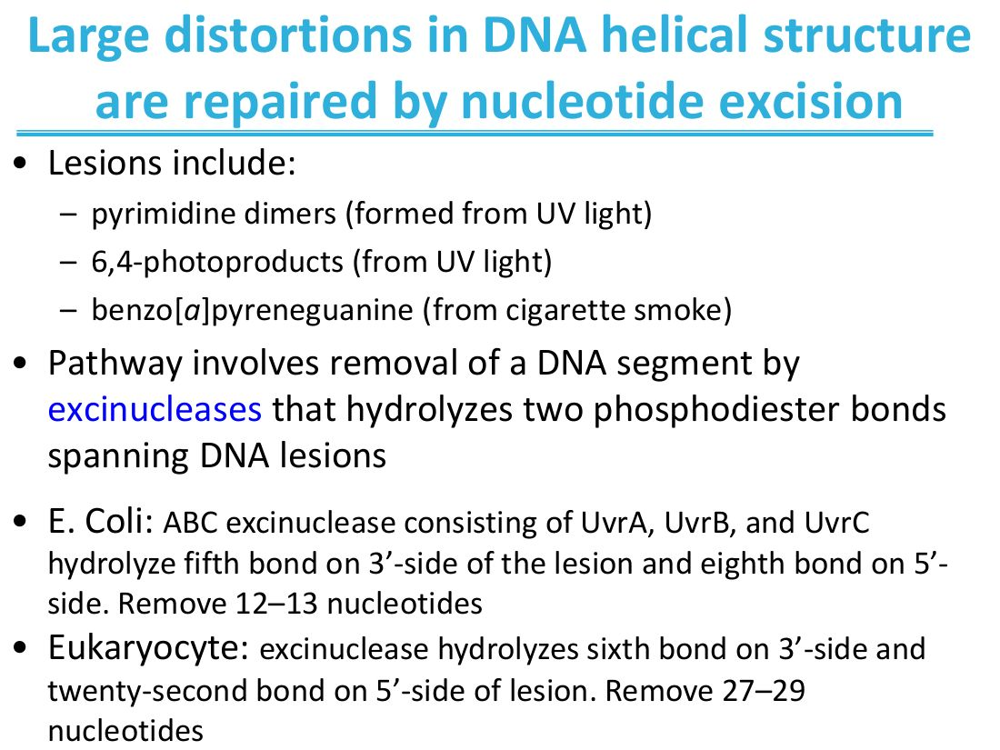
Large distortions in DNA helical structure are repaired by nucleotide excision
DNA 나선 구조의 큰 왜곡은 뉴클레오타이드 절제로 수선된다
Lesions include:
병변에는 다음이 포함된다:
pyrimidine dimers (formed from UV light)
피리미딘 이량체(자외선으로 형성)
6,4-photoproducts (from UV light)
6,4-광산물(자외선에서 유래)
benzo[a]pyreneguanine (from cigarette smoke)
벤조[a]피렌-구아닌(담배 연기에서 유래)
Pathway involves removal of a DNA segment by excinucleases that hydrolyzes two phosphodiester bonds spanning DNA lesions
이 경로는 DNA 병변을 사이에 둔 두 개의 인산다이에스터 결합을 가수분해하는 엑시뉴클레이스에 의해 DNA 조각이 제거되는 과정을 포함한다
E. Coli: ABC excinuclease consisting of UvrA, UvrB, and UvrC hydrolyze fifth bond on 3'-side of the lesion and eighth bond on 5'-side. Remove 12–13 nucleotides
대장균: UvrA, UvrB, UvrC로 구성된 ABC 엑시뉴클레이스가 병변의 3'쪽 다섯 번째 결합과 5'쪽 여덟 번째 결합을 가수분해한다. 12~13개의 뉴클레오타이드를 제거한다
Eukaryocyte: excinuclease hydrolyzes sixth bond on 3'-side and twenty-second bond on 5'-side of lesion. Remove 27–29 nucleotides
진핵세포: 엑시뉴클레이스가 병변의 3'쪽 여섯 번째 결합과 5'쪽 스물두 번째 결합을 가수분해한다. 27~29개의 뉴클레오타이드를 제거한다
테스트뱅크 1건 형광펜 = 실제로 물어본 문장 시험 포인트NER 대상: 피리미딘 이량체(UV)·6,4-광산물(UV)·벤조[a]피렌-구아닌(담배 연기). 엑시뉴클레이스 = 병변 양쪽 인산다이에스터 결합 2개 가수분해. 대장균 ABC 엑시뉴클레이스(UvrA·B·C): 3'쪽 5번째 + 5'쪽 8번째 → 12~13 nt, 진핵: 3'쪽 6번째 + 5'쪽 22번째 → 27~29 nt. 숫자 바꿔 내기 단골!
그림 해설·더 깊이까지 보기 →슬라이드 45세균과 사람의 뉴클레오타이드 절제 수선 (그림 25-25)기출 4TB 2원문·번역

NER in Bacteria and Humans
세균과 사람의 뉴클레오타이드 절제 수선(NER)
ABC excinuclease
ABC 엑시뉴클레이스
UvrA and UvrB scan the DNA and bind to lesion
UvrA와 UvrB가 DNA를 훑어보다가 병변에 결합한다
UvrA dissociates and UvrC binds to UvrB
UvrA가 떨어져 나가고 UvrC가 UvrB에 결합한다
UvrB makes an incision on 3' side
UvrB가 3'쪽에 절개를 만든다
UvrC makes an incision on 5' side
UvrC가 5'쪽에 절개를 만든다
UvrD helicase removes DNA fragment
UvrD 헬리케이스가 DNA 조각을 제거한다
In bacteria, DNA Pol I and DNA ligase to replace the DNA and seal the gap
세균에서는 DNA Pol I과 DNA 연결효소가 DNA를 교체하고 틈을 봉합한다
In humans, gap filled using DNA polymerase ε and DNA ligase
사람에서는 DNA 중합효소 ε과 DNA 연결효소를 이용해 틈을 메운다
DNA lesion / 5' / 3' / E. coli / Human
DNA 병변 / 5' / 3' / 대장균 / 사람
① excinuclease / P
① 엑시뉴클레이스 / P(인산)
② DNA helicase / 13 mer / 29 mer / OH
② DNA 헬리케이스 / 13량체(13개짜리 조각) / 29량체 / OH
③ DNA polymerase I / DNA polymerase ε
③ DNA 중합효소 I(대장균) / DNA 중합효소 ε(사람)
기출 4건 · 테스트뱅크 2건 형광펜 = 실제로 물어본 문장2025
세균에서 UV로 생긴 피리미딘 이량체 수선에 쓰이지 않는 것 — UvrA / UvrD / DNA 중합효소 / 광분해효소 / NADH
정답·포인트 NADH. 이량체는 NER(UvrA·B·C, UvrD 헬리케이스, Pol I, 연결효소)과 직접 수선(광분해효소, 보조인자 FADH⁻ + MTHFpolyGlu)으로 고쳐요.
202520192017 퀴즈단답·서술
NER에서 5'쪽 절개를 만드는 것 — UvrA / UvrB / UvrC / RecA / RecB. (2025 단답) 사람 NER 그림 빈칸 (1)·(2)
정답·포인트 5' 절개 = UvrC(3' 절개 = UvrB). 2025 단답 정답: (1) excinuclease, (2) DNA polymerase ε(대장균이면 Pol I).
2016레닌저 연습문제단답·서술
[서술, 레닌저 25장 연습문제 14] XP-G 환자 섬유모세포는 UV 후 단일가닥 DNA 평균 분자량 감소가 없다 — 이유는? NER의 어느 단계에 결함?
정답·포인트 정상 세포는 엑시뉴클레이스가 손상 양쪽을 절개해 가닥이 짧아지는데, XP-G는 절개(incision) 단계가 안 돼서 분자량이 줄지 않아요(XPG = 3'쪽 절개 효소).
TB 25-19
ABC 엑시뉴클레아제(ABC excinuclease)는 다음에 필수적이다:
- A 염기 절제 수선
- B 메틸기 유도 수선
- C 불일치 수선
- D 뉴클레오타이드 절제 수선(nucleotide-excision repair)
- E SOS 수선
정답·포인트 D 뉴클레오타이드 절제 수선(nucleotide-excision repair) — UvrA·UvrB·UvrC = ABC 엑시뉴클레아제. 손상 양쪽을 잘라 12~13 nt(진핵생물 27~29 nt) 올리고뉴클레오타이드를 제거.
TB 25-48단답·서술
[서술] 대장균에서 피리미딘 이량체 같은 손상의 뉴클레오타이드 절제 수선 과정을 설명하라.
정답·포인트 피리미딘 이량체 같은 DNA 손상은 결함 가닥의 12~13개 뉴클레오타이드 절편을 잘라냄으로써 수선된다. ABC 엑시뉴클레아제가 결함 양쪽에 단일가닥 절단을 만든다. 두 절단 사이의 절편은 UvrD 헬리케이스에 의해 제거된다. 이로써 DNA에 틈이 남고, 이는 DNA 중합효소 I이 채우고 DNA 리가아제가 봉합한다. (998쪽 그림 25-26 참조)
시험 포인트ABC 엑시뉴클레이스 단계: UvrA·UvrB 스캔·결합 → UvrA 이탈, UvrC가 UvrB에 결합 → UvrB = 3'쪽 절개, UvrC = 5'쪽 절개 → UvrD 헬리케이스가 조각 제거. 틈 메우기: 세균 = Pol I + 연결효소, 사람 = Pol ε + 연결효소. 조각: 13 mer vs 29 mer. (UvrB↔UvrC 절개 방향 바꿔 내기 주의!)
그림 해설·더 깊이까지 보기 →슬라이드 46직접 수선 — O⁶-메틸구아닌 메틸전달효소·광분해효소·AlkB (그림 25-27)기출 2TB 2원문·번역

DNA repair without removing a base or nucleotide
염기나 뉴클레오타이드를 제거하지 않는 DNA 수선
O⁶-methylguanine-DNA methyltransferase repairs methylated guanine
O⁶-메틸구아닌-DNA 메틸전달효소는 메틸화된 구아닌을 수선한다
O⁶-methylguanine pairs with thymine rather than cytosine. If not repaired, this leads to a G≡C to A=T mutation after replication.
O⁶-메틸구아닌은 사이토신이 아니라 티민과 짝을 이룬다. 수선되지 않으면 복제 후 G≡C → A=T 돌연변이로 이어진다.
DNA Photolyases use light energy to repair pyrimidine dimers
DNA 광분해효소는 빛 에너지를 이용해 피리미딘 이량체를 수선한다
Enzymes not found in humans and placental mammals
이 효소는 사람과 태반 포유류에는 없다
AlkB demethylates 1-methyladenine and 3-methylcytosine
AlkB는 1-메틸아데닌과 3-메틸사이토신을 탈메틸화한다
Figure 25-27a / Figure 25-27b
그림 25-27a / 그림 25-27b
(a) Guanine / Cytosine / R / methylation and replication / O⁶-Methylguanine / OCH₃ / Thymine / CH₃
(a) 구아닌 / 사이토신 / R / 메틸화와 복제 / O⁶-메틸구아닌 / OCH₃ / 티민 / CH₃
(b) G / C / methylation / CH₃–G / C / replication / CH₃–G / T / G / C / repli-cation / CH₃–G / T / A / T / Correctly paired DNA (no mutations)
(b) G / C / 메틸화 / CH₃–G / C / 복제 / CH₃–G / T / G / C / 복제 / CH₃–G / T / A / T / 올바르게 짝지어진 DNA(돌연변이 없음)
기출 2건 · 테스트뱅크 2건 형광펜 = 실제로 물어본 문장2021레닌저 연습문제단답·서술
[서술, 레닌저 25장 연습문제 16] 그림 25-27b처럼 구아닌 메틸화가 G≡C → A=T를 만드는 경로를 이용해, G–R 부가물이 돌연변이를 만드는 과정 설명
정답·포인트 핵심 논리: 변형 G가 C 대신 T와 짝 → 1차 복제에서 변형G–T → 2차 복제에서 그 T를 주형으로 A–T 고정.
TB 25-21
DNA의 티미딘 이량체를 수선하는 데 사용되는 기전은?
- A 불일치 수선
- B 염기 절제 수선
- C 뉴클레오타이드 절제 수선
- D 직접 수선(direct repair)
- E 이 유형의 손상에는 한 가지 이상의 기전이 사용된다
정답·포인트 D 직접 수선(direct repair) — 정답 키는 D(직접 수선: 광분해효소). 다만 대장균에서는 뉴클레오타이드 절제 수선도 피리미딘 이량체를 고칠 수 있음에 유의(48번 서술형 참고) — 시험에서는 키(D)대로.
TB 25-49단답·서술
[서술] 뉴클레오타이드를 알킬화하는 DNA 손상이 때때로 전이(transition) 돌연변이로 이어지는 이유는?
정답·포인트 구아닌이 O⁶-메틸구아닌으로 알킬화되면, 구아닌의 정상 짝인 사이토신보다 티민과 더 잘 염기쌍을 이룰 수 있다. 이 잘못된 짝이 딸 염색체로 복제되면 G-C에서 A-T로의 전이 돌연변이가 생긴다. (1000쪽 그림 25-28 참조)
시험 포인트직접 수선 = 염기·뉴클레오타이드 제거 없음. O⁶-메틸G는 T와 짝 → G≡C → A=T. 광분해효소 = 빛 에너지로 피리미딘 이량체 수선, 사람·태반 포유류엔 없음. AlkB = 1-메틸아데닌·3-메틸사이토신 탈메틸화.
그림 해설·더 깊이까지 보기 →슬라이드 47광분해효소에 의한 피리미딘 이량체의 수선 (그림 25-26)기출 2TB 1원문·번역

Repair of Pyrimidine Dimers with Photolyase
광분해효소에 의한 피리미딘 이량체의 수선
Repair of pyrimidine dimers with photolyase. Energy derived from absorbed light is used to reverse the photoreaction that caused the lesion. The two chromophores in E. coli photolyase, MTHFpolyGlu and FADH⁻, perform complementary functions. MTHFpolyGlu absorbs blue-light photons. The excitation energy passes to FADH⁻, and the excited flavin (*FADH⁻) donates an electron to the pyrimidine dimer, leading to the rearrangement as shown.
광분해효소에 의한 피리미딘 이량체의 수선. 흡수한 빛에서 얻은 에너지를 이용해, 병변을 만든 광반응을 거꾸로 되돌린다. 대장균 광분해효소의 두 발색단인 MTHFpolyGlu와 FADH⁻는 서로 보완적인 기능을 한다. MTHFpolyGlu는 청색광 광자를 흡수한다. 들뜬 에너지는 FADH⁻로 전달되고, 들뜬 플라빈(*FADH⁻)이 피리미딘 이량체에 전자를 주어 그림과 같은 재배열이 일어난다.
light / ① A blue-light photon (300 to 500 nm) is absorbed by MTHFpolyGlu. / MTHFpolyGlu / *MTHFpolyGlu / (Glu)ₙ
빛 / ① 청색광 광자(300~500 nm)가 MTHFpolyGlu에 흡수된다. / MTHFpolyGlu / *MTHFpolyGlu(들뜬 상태) / (Glu)ₙ(폴리글루탐산 꼬리)
② The excitation energy passes to FADH⁻ in the active site.
② 들뜬 에너지가 활성 부위의 FADH⁻로 전달된다.
Cyclobutane pyrimidine dimer / P
사이클로뷰테인 피리미딘 이량체 / P(인산)
③ The excited flavin (*FADH⁻) donates an electron to the pyrimidine dimer to generate an unstable dimer radical. / e⁻
③ 들뜬 플라빈(*FADH⁻)이 피리미딘 이량체에 전자를 주어 불안정한 이량체 라디칼을 만든다. / e⁻(전자)
*FADH⁻ / Flavin radical FADH• / FADH⁻
*FADH⁻(들뜬 플라빈) / 플라빈 라디칼 FADH• / FADH⁻
④ Electron rearrangement restores monomeric pyrimidines.
④ 전자 재배열이 단량체 피리미딘을 복원한다.
⑤ Electron is transferred back to the flavin radical to regenerate FADH⁻. / e⁻
⑤ 전자가 플라빈 라디칼로 되돌아가 FADH⁻를 재생한다. / e⁻
Monomeric pyrimidines in repaired DNA
수선된 DNA 속의 단량체 피리미딘들
기출 2건 · 테스트뱅크 1건 형광펜 = 실제로 물어본 문장2021TB 25-20
The repair of cyclobutane pyrimidine dimers by bacterial DNA photolyase involves the cofactor: coenzyme A / coenzyme Q / FADH / PLP / TPP
정답·포인트 FADH (2021년에 같은 문제가 두 번 나옴).
시험 포인트두 발색단 = MTHFpolyGlu(청색광 300~500 nm 흡수) + FADH⁻(전자 공여), 서로 보완. 순서: 광자 흡수 → 에너지 FADH⁻로 → *FADH⁻가 이량체에 전자 → 고리 재배열로 단량체 복원 → 전자가 플라빈 라디칼로 돌아가 FADH⁻ 재생. 손상 = 사이클로뷰테인 피리미딘 이량체.
그림 해설·더 깊이까지 보기 →슬라이드 48AlkB에 의한 알킬화 염기의 직접 수선 (그림 25-28)기출 1원문·번역
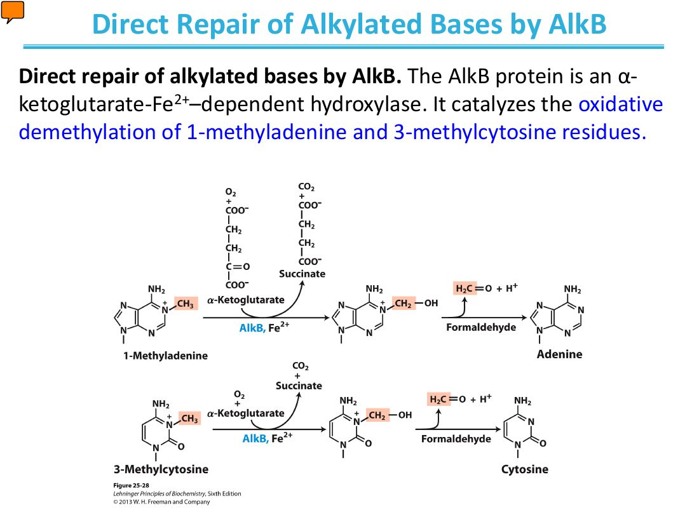
Direct Repair of Alkylated Bases by AlkB
AlkB에 의한 알킬화 염기의 직접 수선
Direct repair of alkylated bases by AlkB. The AlkB protein is an α-ketoglutarate-Fe²⁺–dependent hydroxylase. It catalyzes the oxidative demethylation of 1-methyladenine and 3-methylcytosine residues.
AlkB에 의한 알킬화 염기의 직접 수선. AlkB 단백질은 α-케토글루타르산-Fe²⁺ 의존성 수산화효소다. 이 효소는 1-메틸아데닌과 3-메틸사이토신 잔기의 산화적 탈메틸화를 촉매한다.
1-Methyladenine / NH₂ / N⁺–CH₃
1-메틸아데닌 / NH₂ / N⁺–CH₃
O₂ + α-Ketoglutarate (COO⁻–C=O–CH₂–CH₂–COO⁻) / AlkB, Fe²⁺ / CO₂ + Succinate (COO⁻–CH₂–CH₂–COO⁻)
O₂ + α-케토글루타르산 / AlkB, Fe²⁺ / CO₂ + 숙신산(석시네이트)
N⁺–CH₂–OH / H₂C=O + H⁺ / Formaldehyde / Adenine
N⁺–CH₂–OH(하이드록시메틸 중간체) / H₂C=O + H⁺ / 폼알데하이드 / 아데닌
3-Methylcytosine / O₂ + α-Ketoglutarate / AlkB, Fe²⁺ / CO₂ + Succinate / N⁺–CH₂–OH / H₂C=O + H⁺ / Formaldehyde / Cytosine
3-메틸사이토신 / O₂ + α-케토글루타르산 / AlkB, Fe²⁺ / CO₂ + 숙신산 / N⁺–CH₂–OH / H₂C=O + H⁺ / 폼알데하이드 / 사이토신
기출 1건 형광펜 = 실제로 물어본 문장2025
AlkB 직접 수선에 대해 옳지 않은 것 — 1-메틸아데닌·3-메틸사이토신 탈메틸화 / Fe²⁺ 필요 / α-KG → 숙신산 / 제거되는 메틸기는 aldehyde에 전달된다 / 전체 2단계
정답·포인트 ④가 틀린 진술로 보여요: 메틸기는 다른 분자로 '전달'되지 않고 –CH₂OH로 산화된 뒤 폼알데하이드(H₂C=O)로 떨어져 나가요. 그림도 '수산화 → 폼알데하이드 이탈' 2단계.
시험 포인트AlkB = α-케토글루타르산–Fe²⁺ 의존성 수산화효소, 1-메틸아데닌·3-메틸사이토신의 산화적 탈메틸화. 기질: O₂ + α-KG → 산물: CO₂ + 숙신산, 메틸기는 –CH₂OH 거쳐 폼알데하이드로 제거.
그림 해설·더 깊이까지 보기 →7
주형이 없을 때: 오류유발 수선(TLS)·SOS와 수선 결함 질환
슬라이드 49–54
처음이라면 · 큰 그림부터
앞의 수선들은 모두 반대 가닥이 멀쩡하다는 전제가 있어요. 한쪽을 잘라 내도 다른 쪽을 보고 다시 채울 수 있으니까요. 그런데 두 가닥이 다 끊겼거나, 두 가닥이 서로 엉겨 붙었거나(교차결합), 복제 분기점이 외가닥 상태에서 손상을 만나면 참고할 주형이 없어요. 이럴 땐 다른 상동 DNA를 빌려 와 고치거나(재조합 수선, 8단원), 정확도를 포기하고 일단 손상 위를 지나가는 수밖에 없어요.
후자가 손상 통과 합성(TLS)이에요. 대장균은 손상이 심하면 SOS 반응이라는 비상 모드를 켜서 수선 유전자 여러 개를 한꺼번에 발현해요. 그중 Pol IV와 Pol V는 교정 없이 손상 맞은편에 대충 염기를 넣고 지나가는 중합효소라, 세포는 살아남는 대신 돌연변이를 얻어요.
사람에게도 손상 통과 중합효소가 있어요. Pol η는 티민 이량체 맞은편에 A 두 개를 정확히 넣어서 오히려 돌연변이를 막아 줘요. 수선 유전자가 망가지면 암이 잘 생기는데, XP(NER), 유전성 비용종성 대장암(불일치 수선), BRCA1·2 유방암(재조합 수선)처럼 질환을 경로와 짝지어 두면 돼요.
흐름 한 줄
주형 없는 손상→재조합 수선(정확) 또는 TLS(부정확)→SOS: Pol IV · Pol V 동원→생존 + 돌연변이
이 단원에서 처음 나오는 말
- 교차결합
- 두 가닥이(또는 DNA와 단백질이) 공유결합으로 붙어 버린 손상.
- 손상 통과 합성(TLS)
- 손상된 주형 위를 특수 중합효소가 지나가며 합성하는 것. 대체로 오류가 많아요.
- SOS 반응
- 심한 DNA 손상 때 대장균이 수선·TLS 유전자 묶음을 한꺼번에 켜는 반응.
여기부터 자세히
- 이중가닥 절단·교차결합·단일가닥 손상 = 참고할 주형 없음 → 재조합 수선 또는 오류유발 TLS.
- SOS 반응: UvrA·B, UmuC·D(Pol V = UmuD'₂UmuC·RecA), dinB(Pol IV), recA, sulA 등. Umu = Unmutable.
- 포유류 Pol η(T–T에 A 2개). XP = NER, HNPCC = 불일치 수선(hMLH1·hMSH2), 유방암 = BRCA1·2(재조합 수선).
주형이 없는 손상
앞의 수선은 모두 반대쪽 가닥이 멀쩡하다는 전제였어요. 복제 분기점이 수선 안 된 병변을 만나면 병변이 단일가닥 구간에 남고(→ 재조합 수선 또는 오류유발 수선), 닉을 만나면 이중가닥 절단이 돼요(→ 재조합 수선).
손상 통과 합성(TLS)과 SOS 반응
손상이 광범위하면 대장균은 SOS 반응으로 수선 유전자들을 한꺼번에 켜요. 그중 TLS는 손상을 고치지 않고 '일단 넘어가는' 합성이라 오류를 유발해요.
Pol III가 손상에서 멈춤Pol III·β 클램프 이탈Pol IV(DinB) 또는
Pol V(UmuD'₂C)가 통과 합성Pol III 복귀
Pol V = 잘린 UmuD' 2개 + UmuC + RecA. 막혀야 할 병변을 지나 복제하지만 올바른 짝은 흔히 불가능해요. Umu = Unmutable: 이 유전자가 없으면 오류유발 수선이 사라져 오히려 돌연변이가 덜 생겨요. Pol IV(dinB)는 교정 엑소가 없고 활성 부위가 넓어 손상된 주형 뉴클레오타이드도 받아들여요.
| SOS 유전자 | 역할 |
|---|
| polB (dinA) | Pol II — 재조합 수선 중 복제 재개 |
| uvrA, uvrB | ABC 엑시뉴클레이스 |
| umuC, umuD | Pol V |
| sulA | 세포분열 억제(수선 시간 확보) |
| recA | 오류유발 수선 + 재조합 수선 |
| dinB | Pol IV |
| ssb / himA | SSB / IHF 소단위 |
| uvrD / recN | 헬리케이스 II / 재조합 수선 (수선 역할 미상 묶음) |
| dinD, dinF | 기능 미상 |
포유류 TLS 중합효소와 암
포유류의 TLS 중합효소는 정확도는 낮지만 각자 특기가 있어요. Pol η는 T–T 사이클로뷰테인 이량체 맞은편에 A 두 개를 넣어 돌연변이를 거의 남기지 않고, Pol β·ι·λ는 BER에서 5'-데옥시리보스 인산 분해효소 활성으로 무염기 자리를 치우고 짧은 틈을 메워요. 대부분 짧은 구간에서만 작동해 돌연변이 위험을 줄여요.
| 질환 | 고장 난 것 |
|---|
| 색소성 건피증(XP) | NER — 사람의 피리미딘 이량체 유일한 수선 경로 → 햇빛 피부암 |
| XP 유사 질환 | Pol η |
| HNPCC(유전성 비용종증 대장암) | 불일치 수선(hMLH1, hMSH2) |
| 유방암 | BRCA1·BRCA2 — 이중가닥 절단의 재조합 수선 |
이 단원 기출·테스트뱅크 4건 문제·정답은 슬라이드를 펼치거나 번역본에서- 20232016 SOS 유전자 아닌 것(uvrC, Pol η) 슬라이드 52
- 2025 SOS: 손상 시 RecA 전사↑ 슬라이드 50
- TB 25-23 오류 유발성 손상 통과 DNA 합성(error-prone translesion DN… 슬라이드 50
- TB 25-50단답·서술 DNA 수선 효소를 암호화하는 유전자의 돌연변이를 물려받는 것이 어떻게 암 위험 증… 슬라이드 54
이 단원 슬라이드 원문·번역 펼쳐서 보기
슬라이드 49수선에 쓸 손상 안 된 주형이 없다면? (그림 25-29)원문·번역

What happens when there is no undamaged DNA to use as a template for repair?
수선에 주형으로 쓸 손상되지 않은 DNA가 없다면 어떻게 되는가?
No template with double strand break, cross-links, or damage in ssDNA
이중가닥 절단, 교차결합, 또는 단일가닥 DNA의 손상에서는 주형이 없다
If the replication fork encounters an unrepaired lesion or strand break, replication generally halts and the fork may collapse. A lesion is left behind in an unreplicated, single-stranded segment of the DNA (left); a strand break becomes a double-strand break (right).
복제 분기점이 수선되지 않은 병변이나 가닥 절단을 만나면, 복제는 대개 멈추고 분기점이 붕괴될 수 있다. 병변은 복제되지 않은 단일가닥 DNA 구간에 남겨지고(왼쪽), 가닥 절단은 이중가닥 절단이 된다(오른쪽).
In each case the damage to one strand cannot be repaired by mechanisms described earlier in this chapter, because the complementary strand required to direct accurate repair is damaged or absent.
어느 경우든 한 가닥의 손상은 이 장에서 앞서 설명한 메커니즘으로 수선할 수 없는데, 정확한 수선을 이끌어야 할 상보적 가닥이 손상되었거나 없기 때문이다.
Unrepaired lesion / Single-stranded DNA / Recombinational DNA repair or error-prone repair
수선되지 않은 병변 / 단일가닥 DNA / 재조합 DNA 수선 또는 오류유발 수선
Unrepaired break / Double-strand break / Recombinational DNA repair
수선되지 않은 절단 / 이중가닥 절단 / 재조합 DNA 수선
시험 포인트주형이 없는 경우 = 이중가닥 절단·교차결합·단일가닥 손상. 분기점이 병변을 만나면 → 단일가닥 구간에 병변 남음 → 재조합 수선 또는 오류유발 수선, 닉을 만나면 → 이중가닥 절단 → 재조합 수선.
그림 해설·더 깊이까지 보기 →슬라이드 50복제 분기점을 멈추게 하는 병변 — 재조합 vs 오류유발 손상 통과 합성(TLS)과 SOS 반응기출 3TB 1원문·번역

Lesions Stalling a Replication Fork
복제 분기점을 멈추게 하는 병변
1) another chromosome as template (Recombination)
1) 다른 염색체를 주형으로 사용(재조합)
2) Error-Prone Translesion Synthesis (TLS)
2) 오류유발 손상 통과 합성(TLS)
TLS is part of the "SOS response" (Response when DNA damage is extensive)
TLS는 'SOS 반응'의 일부다(DNA 손상이 광범위할 때의 반응)
SOS proteins include UvrA, UvrB + UmuC and UmuD
SOS 단백질에는 UvrA, UvrB + UmuC와 UmuD가 포함된다
Umu = Unmutable (lack of Umu gene eliminates error-prone repair)
Umu = Unmutable(돌연변이 불가능; Umu 유전자가 없으면 오류유발 수선이 사라진다)
Cleaved UmuD' and umuC bind with RecA to create DNA Pol V (UmuD'₂UmuCRecA) that can replicate past many of the DNA lesions that would normally block replication. However, proper base pairing is often impossible
잘린 UmuD'와 UmuC가 RecA와 결합하여 DNA Pol V(UmuD'₂UmuC·RecA)를 만든다. Pol V는 보통 복제를 막았을 많은 DNA 병변을 지나서 복제할 수 있다. 그러나 올바른 염기쌍 형성은 흔히 불가능하다
DNA Pol IV ( encoded in dinB gene) is also induced during SOS response. It lacks a proofreading exonuclease and possess a more open active site that accommodates damaged template nucleotide
DNA Pol IV(dinB 유전자가 암호화)도 SOS 반응 중에 유도된다. 교정 엑소뉴클레이스가 없고, 손상된 주형 뉴클레오타이드를 수용할 수 있는 더 열린 활성 부위를 가진다
기출 3건 · 테스트뱅크 1건 형광펜 = 실제로 물어본 문장2025
SOS 반응 유전자·단백질에 대해 옳은 것(1개) — uvrA·B·umuC·D는 한 오페론 / 손상 없으면 RecA 전혀 발현 X / 손상 시 RecA 전사↑ / 손상 시 LexA 전사↓ / 사람에서 RecA 역할은 BRCA
정답·포인트 ③ 손상 시 RecA 전사 증가. 표 25-6의 SOS 유전자들은 각자 따로 있고(LexA가 함께 조절하는 레귤론, 28장), RecA는 평소에도 있음. 사람 RecA 상동체는 Rad51(BRCA2가 Rad51 적재를 도움).
TB 25-23
오류 유발성 손상 통과 DNA 합성(error-prone translesion DNA synthesis)에 의한 대체 수선 시스템은 높은 돌연변이율을 초래할 수 있는데, 그 이유는:
- A 대체 변형 뉴클레오타이드가 더 쉽게 삽입될 수 있기 때문에
- B RecA와 SSB 단백질의 간섭이 정상적인 복제 정확도를 방해하기 때문에
- C 복제가 정상보다 훨씬 빨리 진행되어 훨씬 많은 실수가 생기기 때문에
- D 관여하는 DNA 중합효소가 DNA 중합효소 III만큼 염기쌍 형성을 잘 촉진하지 못하기 때문에
- E 관여하는 DNA 중합효소들이 핵산말단가수분해 교정 활성이 없기 때문에
정답·포인트 E 관여하는 DNA 중합효소들이 핵산말단가수분해 교정 활성이 없기 때문에 — SOS 반응에서 유도되는 Pol IV, Pol V(UmuD'₂C)는 3'→5' exonuclease 교정 활성이 없어 손상을 지나며 오류를 많이 낸다.
시험 포인트분기점 정지 시 수선: ① 재조합(다른 염색체 주형) / ② 오류유발 TLS. TLS = SOS 반응(광범위한 손상)의 일부. SOS 단백질 = UvrA·UvrB + UmuC·UmuD. Umu = Unmutable. Pol V = UmuD'₂UmuC·RecA(잘린 UmuD'), 병변 통과 가능하나 올바른 짝 흔히 불가. Pol IV = dinB, 교정 없음, 열린 활성 부위.
그림 해설·더 깊이까지 보기 →슬라이드 51대장균의 손상 통과 DNA 합성 (TLS) 모식도원문·번역

DNA polymerase III / β-clamp / 3' / 5'
DNA 중합효소 III / β-클램프 / 3' / 5'
Pol IV (Din B) or Pol V (UmuD'₂C)
Pol IV(DinB) 또는 Pol V(UmuD'₂C)
Translesion DNA synthesis in E. coli
대장균의 손상 통과 DNA 합성
Copyright © 2004 Pearson Education, Inc., publishing as Benjamin Cummings
저작권 © 2004 Pearson Education, Benjamin Cummings 출판
시험 포인트TLS 순서: Pol III 손상에서 정지 → Pol III·β 클램프 이탈 → Pol IV(DinB) 또는 Pol V(UmuD'₂C)가 손상 통과 합성 → TLS 효소 이탈 → Pol III 복귀.
그림 해설·더 깊이까지 보기 →슬라이드 52대장균 SOS 반응으로 유도되는 유전자 (표 25-6)기출 2원문·번역

Genes Induced as Part of the SOS response in E. coli (Table 25-6)
대장균 SOS 반응의 일부로 유도되는 유전자 (표 25-6)
Gene name / Protein encoded and/or role in DNA repair
유전자 이름 / 암호화하는 단백질 및/또는 DNA 수선에서의 역할
Genes of known function
기능이 알려진 유전자
polB (dinA) / Encodes polymerization subunit of DNA polymerase II, required for replication restart in recombinational DNA repair
polB (dinA) / DNA 중합효소 II의 중합 소단위를 암호화; 재조합 DNA 수선에서 복제 재개에 필요
uvrA, uvrB / Encode ABC excinuclease subunits UvrA and UvrB
uvrA, uvrB / ABC 엑시뉴클레이스 소단위 UvrA와 UvrB를 암호화
umuC, umuD / Encode core and polymerization subunits of DNA polymerase V
umuC, umuD / DNA 중합효소 V의 핵심 소단위와 중합 소단위를 암호화
sulA / Encodes protein that inhibits cell division, possibly to allow time for DNA repair
sulA / 세포분열을 억제하는 단백질을 암호화; 아마도 DNA 수선 시간을 벌기 위함
recA / Encodes RecA protein, required for error-prone repair and recombinational repair
recA / RecA 단백질을 암호화; 오류유발 수선과 재조합 수선에 필요
dinB / Encodes DNA polymerase IV
dinB / DNA 중합효소 IV를 암호화
ssb / Encodes single-stranded DNA–binding protein (SSB)
ssb / 단일가닥 DNA 결합 단백질(SSB)을 암호화
himA / Encodes subunit of integration host factor (IHF), involved in site-specific recombination, replication, transposition, regulation of gene expression
himA / 통합 숙주 인자(IHF)의 소단위를 암호화; 부위 특이적 재조합, 복제, 전위, 유전자 발현 조절에 관여
Genes involved in DNA metabolism, but role in DNA repair unknown
DNA 대사에 관여하지만 DNA 수선에서의 역할은 모르는 유전자
uvrD / Encodes DNA helicase II (DNA-unwinding protein)
uvrD / DNA 헬리케이스 II(DNA 풀림 단백질)를 암호화
recN / Required for recombinational repair
recN / 재조합 수선에 필요
Genes of unknown function: dinD, dinF
기능을 모르는 유전자: dinD, dinF
Note: Some of these genes and their functions are further discussed in Chapter 28.
참고: 이 유전자들 중 일부와 그 기능은 28장에서 더 다룬다.
기출 2건 형광펜 = 실제로 물어본 문장20232016
대장균 SOS 관련 유전자가 아닌 것 — umuC / umuD / uvrA / uvrC / recA (2016: UvrD / UmuC / DNA pol η / dinB / RecA)
정답·포인트 2023 = uvrC(표 25-6엔 uvrA·uvrB만), 2016 = DNA pol η(포유류 TLS 중합효소). uvrD는 표의 '수선 역할 미상' 칸에 있는 SOS 유전자.
시험 포인트표 짝 맞추기: polB(dinA) = Pol II(재조합 수선의 복제 재개), uvrA·uvrB = ABC 엑시뉴클레이스, umuC·umuD = Pol V, sulA = 세포분열 억제, recA = 오류유발 + 재조합 수선, dinB = Pol IV, ssb = SSB, himA = IHF 소단위, uvrD = 헬리케이스 II, recN = 재조합 수선.
그림 해설·더 깊이까지 보기 →슬라이드 53포유류의 TLS 중합효소 — Pol η·β·ι·λ기출 1원문·번역
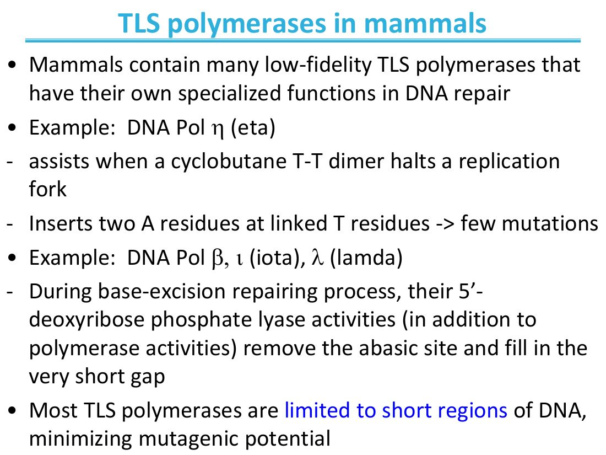
TLS polymerases in mammals
포유류의 TLS 중합효소
Mammals contain many low-fidelity TLS polymerases that have their own specialized functions in DNA repair
포유류는 DNA 수선에서 각자 특화된 기능을 가진, 정확도가 낮은 TLS 중합효소를 많이 가지고 있다
Example: DNA Pol η (eta)
예: DNA Pol η(에타)
assists when a cyclobutane T-T dimer halts a replication fork
사이클로뷰테인 T-T 이량체가 복제 분기점을 멈추게 할 때 돕는다
Inserts two A residues at linked T residues -> few mutations
연결된 T 잔기 맞은편에 A 잔기 두 개를 끼워 넣는다 → 돌연변이가 거의 없다
Example: DNA Pol β, ι (iota), λ (lamda)
예: DNA Pol β, ι(이오타), λ(람다)
During base-excision repairing process, their 5'-deoxyribose phosphate lyase activities (in addition to polymerase activities) remove the abasic site and fill in the very short gap
염기 절제 수선 과정에서, 이들의 5'-데옥시리보스 인산 분해효소(lyase) 활성이 (중합 활성과 더불어) 무염기 자리를 제거하고 매우 짧은 틈을 메운다
Most TLS polymerases are limited to short regions of DNA, minimizing mutagenic potential
대부분의 TLS 중합효소는 DNA의 짧은 구간으로 제한되어, 돌연변이 유발 가능성을 최소화한다
시험 포인트포유류 TLS 중합효소 = 정확도 낮음, 특화된 수선 기능. Pol η = T–T 사이클로뷰테인 이량체 맞은편에 A 2개 → 돌연변이 적음. Pol β·ι·λ = BER에서 5'-데옥시리보스 인산 분해효소(lyase) 활성으로 무염기 자리 제거 + 짧은 틈 메움. 대부분 짧은 구간에 제한.
그림 해설·더 깊이까지 보기 →슬라이드 54DNA 수선과 암 — XP·HNPCC·BRCA기출 2TB 1원문·번역

DNA repair and cancer
DNA 수선과 암
Xeroderma Pigmentosum (XP): defective nucleotide excision repair system that is a sole repair pathway for pyrimidine dimers in human -> sunlight-induced skin cancer
색소성 건피증(XP): 사람에서 피리미딘 이량체의 유일한 수선 경로인 뉴클레오타이드 절제 수선 체계에 결함 → 햇빛에 의한 피부암
XP-like illness is caused by mutated DNA Pol η (eta). DNA Pol η inserts two As in T-T pyridimine dimer, thereby minimizing mutations.
XP 유사 질환은 DNA Pol η(에타)의 돌연변이로 생긴다. DNA Pol η는 T-T 피리미딘 이량체에 A 두 개를 넣어 돌연변이를 최소화한다. (원문 'pyridimine'은 'pyrimidine'의 오타)
HNPCC (hereditary nonpolyposis colon cancer): defective mismatch repair (mutations in hMLH1, hMSH2)
HNPCC(유전성 비용종증 대장암): 불일치 수선 결함(hMLH1, hMSH2의 돌연변이)
Breast cancers: mutations in BRCA1 and BRCA2 that are implicated in the recombinational DNA repair of double strand breaks.
유방암: 이중가닥 절단의 재조합 DNA 수선에 관여하는 BRCA1과 BRCA2의 돌연변이.
기출 2건 · 테스트뱅크 1건 형광펜 = 실제로 물어본 문장TB 25-50단답·서술
[서술] DNA 수선 효소를 암호화하는 유전자의 돌연변이를 물려받는 것이 어떻게 암 위험 증가로 이어질 수 있는지 설명하라.
정답·포인트 DNA 수선 유전자의 돌연변이는 돌연변이율 증가로 이어진다. 암은 종양유전자(oncogene)의 돌연변이로 시작되므로, 돌연변이율 증가는 암 위험 증가로 이어진다.
예: 유전성 비용종성 대장암(HNPCC) = 불일치 수선 유전자 결함, 색소성 건피증(XP) = 뉴클레오타이드 절제 수선 결함, BRCA1/2 = 재조합 수선.
시험 포인트XP = NER 결함(사람의 피리미딘 이량체 유일한 수선 경로) → 햇빛 피부암. XP 유사 질환 = Pol η 돌연변이(T-T에 A 2개). HNPCC = 불일치 수선 결함(hMLH1, hMSH2). 유방암 = BRCA1·BRCA2(이중가닥 절단의 재조합 수선). 질환–경로 짝 바꿔 내기 단골!
그림 해설·더 깊이까지 보기 →8
상동 재조합: 세균의 재조합 수선
슬라이드 55–67
처음이라면 · 큰 그림부터
재조합은 DNA 두 분자가 조각을 서로 바꾸는 일이에요. 세 종류로 나눠요. 서열이 길게 비슷한 DNA 사이에서 일어나는 상동 재조합, 특정한 짧은 서열에서만 일어나는 부위 특이적 재조합(10단원), DNA 조각이 다른 자리로 옮겨 가는 전위(10단원).
세균에서 상동 재조합의 주 용도는 수선이에요. 복제 분기점이 끊긴 자리를 만나면 분기점이 무너지는데, 이때 멀쩡한 자매 DNA를 주형으로 빌려 고쳐요. 끊긴 끝을 RecBCD가 갉아 3' 외가닥 꼬리를 만들고, RecA가 그 꼬리에 줄지어 붙어 상동 DNA 속으로 파고들어요(가닥 침입). 그러면 두 DNA가 X자로 엮인 홀리데이 구조가 생기는데, RuvAB가 교차점을 밀어 옮기고 RuvC가 잘라 두 DNA를 풀어 줘요. 마지막으로 PriA 등이 헬리케이스를 다시 얹어 복제를 재개해요.
흐름 한 줄
끊긴 끝 가공(RecBCD, chi)→RecA 가닥 침입→홀리데이 구조→분지 이동(RuvAB)→해소(RuvC)→복제 재개(PriA)
이 단원에서 처음 나오는 말
- 상동
- 서열이 같거나 매우 비슷한 것. 상동 DNA는 서로 주형이 될 수 있어요.
- 가닥 침입
- 외가닥 DNA가 이중나선 사이로 들어가 상보적인 가닥과 짝을 짓는 것.
- 홀리데이 구조
- 두 이중나선이 가닥을 교환해 X자로 이어진 중간체.
- chi 서열
- RecBCD가 이 짧은 서열을 만나면 자르는 방식을 바꿔 3' 꼬리를 남겨요.
여기부터 자세히
- 재조합의 역할 = 수선·감수분열 분리·다양성. 3유형 = 상동(긴 유사 서열)·부위 특이적(특정 서열)·전위(트랜스포존).
- 붕괴된 분기점: 5' 끝 가공(RecBCD, chi에서 전환) → RecA 필라멘트 침입 → 분지 이동(RuvAB) → 홀리데이 해소(RuvC) → 연결.
- 재조합 후 PriA·PriB·PriC·DnaT + DnaB·DnaC·DnaG = 복제 재개 프라이모솜(원점 비의존).
재조합의 역할과 세 유형
재조합은 DNA 조각의 위치를 바꾸는 일로, DNA 수선, 감수분열 중 염색체 분리, 유전적 다양성 증대에 쓰여요. 돌연변이와 함께 진화의 두 원동력이고, 바이러스끼리 재조합하면 독성·약제 내성이 생길 수도 있어요.
| 유형 | 교환이 일어나는 곳 | 대표 효소 |
|---|
| 상동(일반) 재조합 | 긴 유사 서열을 공유하는 두 DNA 사이 | RecA(진핵 Rad51) |
| 부위 특이적 재조합 | 특정 서열에서만 | 재조합효소(Cre 등) |
| DNA 전위 | 상동성 불필요, 무작위 | 전위효소 |
상동 재조합은 유전자 표적화에도 쓰여요: 표적 유전자 양옆과 같은 서열로 감싼 벡터(가운데 neoʳ, 바깥 HSV-tk)를 ES세포에 넣고, 네오마이신으로 DNA가 들어간 세포를, 간시클로버로 무작위 삽입(TK가 남은) 세포를 제거해 녹아웃 생쥐를 만들어요.
붕괴된 복제 분기점의 재조합 수선
분기점 붕괴
이중가닥 절단① 5' 끝 가공
RecBCD → 3' 꼬리② 가닥 침입
RecA 필라멘트③ 분지 이동
RuvAB④ 홀리데이 해소·연결
RuvC + 연결효소복제 재개
재개 프라이모솜
RecBCD: 끊어진 끝에 붙어 풀면서 갉아먹는 효소. RecB = 3'→5' 헬리케이스 + 뉴클레이스, RecD = 5'→3' 헬리케이스, RecC = chi 결합(핀으로 가닥 분리). chi 전에는 두 가닥 모두 분해하다가, 3' 끝 가닥에서 chi(GCTGGTGG)를 만나면 그 가닥은 보호되고 5' 끝 가닥만 계속 분해 → 3' 단일가닥 꼬리 → RecBCD가 거기에 RecA를 실어 줘요.
RecA는 수천 개가 필라멘트를 만들어야 활성화돼요. 핵 형성(느림) → 연장(빠름, 5'→3'), 해체도 5'→3' 방향으로 뒤쪽 끝부터. 가닥 침입·가닥 교환을 촉진하고, SSB 덮인 단일가닥에서의 핵 형성은 RecBCD가 도와요.
분지가 이동하면 X자 홀리데이 접합이 생겨요. RuvA는 네 팔이 만나는 교차점에, RuvB 6량체 2개는 반대쪽 팔에 붙어 ATP 가수분해로 DNA를 밀어내고(분지 이동), RuvC가 마주 보는 쪽을 잘라 해소한 뒤 연결효소가 봉합해요. 복제는 원점 없이 PriA·PriB·PriC·DnaT + DnaB·DnaC·DnaG(복제 재개 프라이모솜)로 다시 시작해요.
이 단원 기출·테스트뱅크 7건 문제·정답은 슬라이드를 펼치거나 번역본에서- 202320222016 Chi 인식 = RecC 슬라이드 62
- 20252023 재조합 종합(Cre=Tyr, IgG 분자 내, 역위) 슬라이드 58
- 20192017 퀴즈 홀리데이 절단 = RuvC 슬라이드 66
- 2021TB 25-24 dsDNA 풀며 분해 = RecBCD 슬라이드 62
- TB 25-25 대장균 상동 재조합에서, DNA의 한 영역을 감싸는 긴 나선형 필라멘트로 조립되는 … 슬라이드 65
- TB 25-26 상동 유전 재조합에서 RecA 단백질은 다음에 관여한다: 슬라이드 64
- TB 25-27 다음 중 틀린 설명은? 시험관 내(in vitro)에서 가닥 교환 반응은: 슬라이드 64
이 단원 슬라이드 원문·번역 펼쳐서 보기
슬라이드 55DNA 재조합원문·번역

Segments of DNA can rearrange their location
DNA 조각은 위치를 재배열할 수 있다
within a chromosome
한 염색체 안에서
from one chromosome to another
한 염색체에서 다른 염색체로
Such recombination is involved in many biological processes
이러한 재조합은 많은 생물학적 과정에 관여한다
Segregation of chromosomes during meiosis
감수분열 중 염색체의 분리
Enhancement of genetic diversity
유전적 다양성의 증대
In sexually reproducing organisms, recombination and mutations are two driving forces of evolution
유성생식을 하는 생물에서 재조합과 돌연변이는 진화의 두 원동력이다
Recombination of co-infecting viral genomes may enhance virulence and provide resistance to antivirals
함께 감염된 바이러스 유전체들 사이의 재조합은 독성을 높이고 항바이러스제에 대한 내성을 제공할 수 있다
시험 포인트재조합 = DNA 조각의 위치 재배열(염색체 내·염색체 간). 역할 3가지 = DNA 수선·감수분열 중 염색체 분리·유전적 다양성 증대. 진화의 두 원동력 = 재조합 + 돌연변이. 바이러스 재조합 → 독성↑·항바이러스제 내성.
그림 해설·더 깊이까지 보기 →슬라이드 56상동 염색체 사이의 재조합 — 교차 모식도원문·번역

Paternal Chromosome / Maternal Chromosome
부계(아버지 쪽) 염색체 / 모계(어머니 쪽) 염색체
Recombination between 2 homologous chromosomes
두 상동 염색체 사이의 재조합
Paternal / Maternal / Crossing over / Resulting recombined chromosomes
부계 / 모계 / 교차 / 결과로 생긴 재조합 염색체
시험 포인트상동 재조합 = 부계·모계 상동 염색체 사이 교차 → 재조합 염색체. 교차는 DNA 복제 후, 비자매 염색분체 사이.
그림 해설·더 깊이까지 보기 →슬라이드 57재조합의 세 가지 유형원문·번역
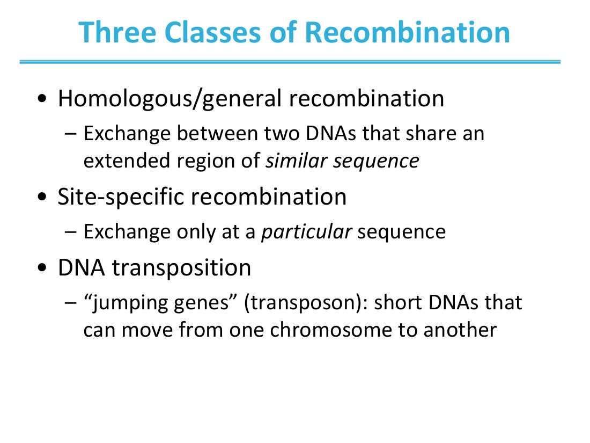
Three Classes of Recombination
재조합의 세 가지 유형
Homologous/general recombination
상동/일반 재조합
Exchange between two DNAs that share an extended region of similar sequence
비슷한 서열의 긴 구간을 공유하는 두 DNA 사이의 교환
Site-specific recombination
부위 특이적 재조합
Exchange only at a particular sequence
특정 서열에서만 일어나는 교환
"jumping genes" (transposon): short DNAs that can move from one chromosome to another
'점핑 유전자'(트랜스포존): 한 염색체에서 다른 염색체로 이동할 수 있는 짧은 DNA
시험 포인트3유형: 상동(일반) = 긴 유사 서열 공유 DNA 사이, 부위 특이적 = 특정 서열에서만, 전위 = 트랜스포존(점핑 유전자)의 이동.
그림 해설·더 깊이까지 보기 →슬라이드 58상동 재조합의 응용 — 유전자 표적화와 녹아웃 생쥐기출 1원문·번역

a) Homologous recombination:
a) 상동 재조합:
Gene targeting vector: / Positive selectable marker / neoʳ / Negative selectable marker / HSV-tk
유전자 표적화 벡터: / 양성 선택 표지 / neoʳ(네오마이신 내성 유전자) / 음성 선택 표지 / HSV-tk(헤르페스 바이러스 티미딘 인산화효소)
Region inserted into genome / Homologous sites
유전체에 삽입되는 부위 / 상동 부위
Genomic DNA: / Target Gene / Region removed from genome
유전체 DNA: / 표적 유전자 / 유전체에서 제거되는 부위
Modified genomic DNA: / neoʳ
변형된 유전체 DNA: / neoʳ
① DNA is introduced into embryonic stem (ES) cells. The DNA contains a non-functional copy of the gene of interest, an antibiotic resistance gene (Neo) and a gene encoding a viral enzyme (TK).
① DNA를 배아줄기(ES)세포에 도입한다. 이 DNA는 관심 유전자의 기능 없는 사본, 항생제 내성 유전자(Neo), 그리고 바이러스 효소(TK)를 암호화하는 유전자를 포함한다.
NEO / TK / Homologous recombination / Nonhomologous recombination
NEO / TK / 상동 재조합(→ NEO만 남음) / 비상동 재조합(→ NEO와 TK 모두 남음)
② ES cells are grown in culture.
② ES세포를 배양한다.
③ Cells containing DNA are selected using an antibiotic (neomycin).
③ DNA를 가진 세포를 항생제(네오마이신)로 선택한다.
④ Cells in which the DNA has inserted by recombination are selected using an antiviral drug (ganciclovir).
④ DNA가 (상동) 재조합으로 삽입된 세포를 항바이러스제(간시클로버)로 선택한다.
⑤ "Knockout" cells are inserted into a host embryo.
⑤ '녹아웃' 세포를 숙주 배아에 주입한다.
⑥ Resulting mice are bred to produce "knockout" mice.
⑥ 태어난 생쥐를 교배하여 '녹아웃' 생쥐를 만든다.
© 2012 Pearson Education, Inc.
© 2012 Pearson Education, Inc.
(right figure) Homologous region / Exon / Homologous region / Cellular gene / loxP sequence / Targeting vector / Positive selection gene / Negative selection gene / Gene replacement / Cre-mediated recombination / Inactivated gene
(오른쪽 그림) 상동 부위 / 엑손 / 상동 부위 / 세포의 유전자 / loxP 서열 / 표적화 벡터 / 양성 선택 유전자 / 음성 선택 유전자 / 유전자 교체 / Cre 매개 재조합 / 불활성화된 유전자
https://dnalc.cshl.edu/view/15060-Homologous-recombination-Mario-Capecchi.html
(참고 동영상 링크: 마리오 카페키의 상동 재조합 설명)
기출 1건 형광펜 = 실제로 물어본 문장20252023
재조합에 대해 옳지 않은 것(모두) — 상동 재조합 기술로 녹아웃 생쥐 / RecBCD의 B는 nuclease·helicase 활성 / Cre는 Ser형 재조합효소 / 복합 트랜스포존은 복제적 전위로 결실 / IgG는 intermolecular esterification으로 합성 (2023: 감수분열에서 DSB / 부위 특이적에서 같은 염색체 위 마주 보는 자리 → 결실 / IgG는 intramolecule esterification)
정답·포인트 틀린 것: Cre = Tyr형(Ser형 X), IgG = 분자 내(intramolecular) 전이에스터화(intermolecular X — 2023은 intramolecule이라 맞는 진술!), 마주 보는(반대 방향) 자리 = 역위(결실 X). 복합 트랜스포존 보기는 슬라이드 근거로 맞다고 할 수 없어요(복제적 전위 → 코인티그레이트 → 부위 특이적 재조합으로 해소). 맞는 것: 녹아웃 생쥐, RecB(3'→5' 헬리케이스 + 뉴클레이스), 감수분열 DSB.
시험 포인트유전자 표적화 = 상동 재조합. 양성 선택 = neoʳ(네오마이신) → DNA 들어간 세포, 음성 선택 = HSV-tk(간시클로버) → 비상동(무작위) 삽입 세포 제거. 순서: ES세포 도입 → 배양 → 네오마이신 → 간시클로버 → 숙주 배아 주입 → 교배. Cre–loxP = 부위 특이적 재조합 이용.
그림 해설·더 깊이까지 보기 →슬라이드 59보존적 부위 특이적 재조합 — 삽입·결실·역위TB 1원문·번역
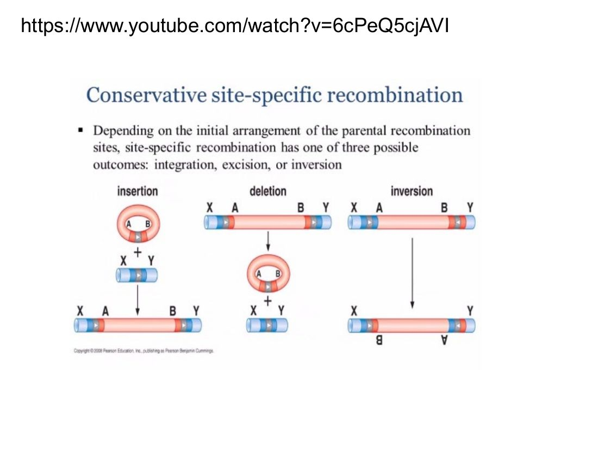
https://www.youtube.com/watch?v=6cPeQ5cjAVI
(참고 동영상 링크: 유튜브 — 부위 특이적 재조합)
Conservative site-specific recombination
보존적 부위 특이적 재조합
Depending on the initial arrangement of the parental recombination sites, site-specific recombination has one of three possible outcomes: integration, excision, or inversion
부모 재조합 자리의 처음 배열에 따라, 부위 특이적 재조합은 세 가지 가능한 결과 중 하나를 낸다: 통합(삽입), 절제(결실), 또는 역위
insertion / A / B / X / Y
삽입 / A / B / X / Y
deletion / X A B Y / A B / X Y
결실 / X A B Y / A B(고리로 떨어져 나감) / X Y
inversion / X A B Y / X ꓭ ∀ Y
역위 / X A B Y / X (B와 A가 뒤집혀 거꾸로) Y
Copyright © 2008 Pearson Education, Inc., publishing as Pearson Benjamin Cummings.
저작권 © 2008 Pearson Education, Benjamin Cummings 출판
테스트뱅크 1건 형광펜 = 실제로 물어본 문장 시험 포인트부위 특이적 재조합 결과 3가지 = 통합(삽입)·절제(결실)·역위, 결정 요인 = 재조합 자리의 처음 배열. 같은 방향 두 자리 → 결실, 반대 방향 → 역위, 원형 + 선형 → 삽입.
그림 해설·더 깊이까지 보기 →슬라이드 60세균의 상동 재조합 — 붕괴된 복제 분기점의 재조합 수선 (그림 25-30)원문·번역
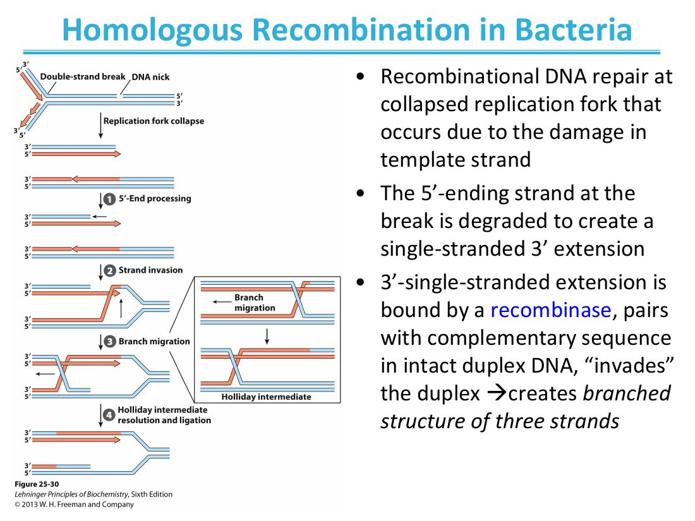
Homologous Recombination in Bacteria
세균의 상동 재조합
Recombinational DNA repair at collapsed replication fork that occurs due to the damage in template strand
주형 가닥의 손상 때문에 생긴, 붕괴된 복제 분기점에서의 재조합 DNA 수선
The 5'-ending strand at the break is degraded to create a single-stranded 3' extension
절단 부위에서 5'으로 끝나는 가닥이 분해되어 단일가닥 3' 연장부(꼬리)가 만들어진다
3'-single-stranded extension is bound by a recombinase, pairs with complementary sequence in intact duplex DNA, "invades" the duplex →creates branched structure of three strands
3' 단일가닥 연장부에 재조합효소가 결합하고, 온전한 이중가닥 DNA의 상보적 서열과 짝을 이루어 이중가닥에 '침입'한다 → 세 가닥으로 된 분지 구조를 만든다
Double-strand break / DNA nick / 5' / 3'
이중가닥 절단 / DNA 닉 / 5' / 3'
Replication fork collapse
복제 분기점 붕괴
① 5'-End processing
① 5' 끝 가공(분해)
③ Branch migration
③ 분지 이동
④ Holliday intermediate resolution and ligation
④ 홀리데이 중간체의 해소(절단)와 연결
(inset) Branch migration / Holliday intermediate
(확대 그림) 분지 이동 / 홀리데이 중간체
시험 포인트붕괴된 분기점 재조합 수선: 복제 분기점 붕괴(이중가닥 절단) → ① 5' 끝 가공(5' 가닥 분해 → 3' 단일가닥 꼬리) → ② 재조합효소가 3' 꼬리 결합, 온전한 이중가닥에 침입(3가닥 분지 구조) → ③ 분지 이동 → ④ 홀리데이 중간체 해소·연결.
그림 해설·더 깊이까지 보기 →슬라이드 61세균의 상동 재조합 (2) — 홀리데이 접합과 복제 분기점 복원 (그림 25-30)원문·번역

Homologous Recombination in Bacteria
세균의 상동 재조합
[branch migration] Branch moves to create X-like structure known as "Holliday junction" or "Holliday intermediate"
[분지 이동] 분지가 이동하여 '홀리데이 접합' 또는 '홀리데이 중간체'라고 알려진 X자 같은 구조를 만든다
A nuclease and ligase restore the structure of the replication fork
뉴클레이스와 연결효소가 복제 분기점의 구조를 복원한다
restores a viable replication fork. The replisome is reloaded onto this structure (not shown), and replication continues. Arrowheads represent 3' ends.
작동 가능한 복제 분기점을 복원한다. 레플리솜이 이 구조에 다시 적재되고(그림에 표시 안 됨) 복제가 계속된다. 화살촉은 3' 끝을 나타낸다.
Double-strand break / DNA nick / Replication fork collapse / ① 5'-End processing / ② Strand invasion / ③ Branch migration / ④ Holliday intermediate resolution and ligation / (inset) Branch migration / Holliday intermediate
이중가닥 절단 / DNA 닉 / 복제 분기점 붕괴 / ① 5' 끝 가공 / ② 가닥 침입 / ③ 분지 이동 / ④ 홀리데이 중간체 해소와 연결 / (확대) 분지 이동 / 홀리데이 중간체
시험 포인트분지 이동 → X자 구조 = 홀리데이 접합(중간체). 뉴클레이스 + 연결효소가 분기점 구조 복원 → 레플리솜 재적재, 복제 계속. 그림의 화살촉 = 3' 끝.
그림 해설·더 깊이까지 보기 →슬라이드 62RecBCD 뉴클레이스/헬리케이스가 DNA 끝을 가공한다 (그림 25-31a)기출 3원문·번역

RecBCD nuclease/helicase processes the DNA ends
RecBCD 뉴클레이스/헬리케이스가 DNA 끝을 가공한다
RecBCD nuclease/helicase: DNA-end processing enzyme in E. Coli binds to a broken end, then unwinds and hydrolyzes the DNA
RecBCD 뉴클레이스/헬리케이스: 대장균의 DNA 끝 가공 효소로, 끊어진 끝에 결합한 뒤 DNA를 풀고 가수분해한다
Occurs until chi sequence reached (GCTGGTGG)
chi 서열(GCTGGTGG)에 도달할 때까지 일어난다
RecB & RecD subunits: helicase activity / -RecB: 3'-> 5' helicase / -RecD: 5'-> 3' helicase
RecB와 RecD 소단위: 헬리케이스 활성 / – RecB: 3'→5' 헬리케이스 / – RecD: 5'→3' 헬리케이스
RecB subunits: nuclease activity as well / RecC subunit: binds to chi sequence / *Pin: a part of RecC subunit that facilitates the separation of strands
RecB 소단위: 뉴클레이스 활성도 있음 / RecC 소단위: chi 서열에 결합 / *핀(Pin): 가닥 분리를 돕는 RecC 소단위의 일부
RecC / RecD 5'→3' helicase / Incoming double-stranded DNA / Outgoing 5' single-stranded DNA / RecB nuclease / Pin / 3' Outgoing single-stranded DNA / RecB 3'→5' helicase
RecC / RecD 5'→3' 헬리케이스 / 들어오는 이중가닥 DNA / 나가는 5' 단일가닥 DNA / RecB 뉴클레이스 / 핀 / 나가는 3' 단일가닥 DNA / RecB 3'→5' 헬리케이스
기출 3건 형광펜 = 실제로 물어본 문장202320222016
Chi 서열을 인식(결합)하는 단백질 — RecN / RecD / RecA / RecB / RecC
정답·포인트 RecC. (RecB = 3'→5' 헬리케이스 + 뉴클레이스, RecD = 5'→3' 헬리케이스) — 2016년엔 두 반 복기 모두에 나옴.
2021TB 25-24
In homologous recombination in E. coli, the protein that moves along a dsDNA, unwinding the strands ahead of it and degrading them, is: chi / DNA ligase / RecA / RecBCD enzyme / RuvC
정답·포인트 RecBCD enzyme.
시험 포인트RecBCD = 대장균의 DNA 끝 가공 효소(풀기 + 가수분해), chi 서열(GCTGGTGG)까지. RecB = 3'→5' 헬리케이스 + 뉴클레이스, RecD = 5'→3' 헬리케이스, RecC = chi 결합, 핀 = RecC의 일부, 가닥 분리. 극성·역할 짝 바꿔 내기 주의!
그림 해설·더 깊이까지 보기 →슬라이드 63RecBCD 헬리케이스/뉴클레이스의 작동 단계 (그림 25-31b)기출 2원문·번역

RecBCD Helicase/Nuclease
RecBCD 헬리케이스/뉴클레이스
RecB degrades both strands as the complex travels
복합체가 이동하는 동안 RecB는 두 가닥 모두를 분해한다
When a chi sequence is encountered on the 3'-ending strand, RecC subunit binds to it, halting the advance of the strand through the complex
3'으로 끝나는 가닥에서 chi 서열을 만나면, RecC 소단위가 거기에 결합하여 그 가닥이 복합체를 통과해 나아가는 것을 멈춘다
5'-ending strand continues to be degraded as the 3'-ending strand is looped out, eventually creating a 3'-single stranded extension
3'으로 끝나는 가닥이 고리 모양으로 빠져나오는 동안 5'으로 끝나는 가닥은 계속 분해되어, 결국 3' 단일가닥 연장부가 만들어진다
Finally, RecA protein (bacterial recombinase) is loaded onto the processed DNA by the RecBCD enzymes
마지막으로, RecBCD 효소가 가공된 DNA 위에 RecA 단백질(세균의 재조합효소)을 적재한다
RecC / Pin / RecD 5'→3' helicase / chi / RecB 3'→5' helicase / RecB nuclease domain / 3' / 5'
RecC / 핀 / RecD 5'→3' 헬리케이스 / chi / RecB 3'→5' 헬리케이스 / RecB 뉴클레이스 도메인 / 3' / 5'
ATP / ADP + Pᵢ
ATP / ADP + Pᵢ
RecB and RecD helicase activities unwind DNA; the RecB nuclease activity degrades both strands of DNA.
RecB와 RecD의 헬리케이스 활성이 DNA를 풀고; RecB의 뉴클레이스 활성이 DNA의 두 가닥을 모두 분해한다.
Chi sequence is bound by RecC, preventing further degradation of the 3'-ending strand. The enzyme continues to unwind and degrade the 5'-ending strand.
chi 서열이 RecC에 결합되어 3' 끝 가닥이 더 이상 분해되지 않는다. 효소는 5' 끝 가닥을 계속 풀고 분해한다.
시험 포인트chi 이전 = RecB가 두 가닥 모두 분해. 3' 끝 가닥에서 chi → RecC 결합 → 그 가닥 분해 중지(고리로 빠짐), 5' 끝 가닥은 계속 분해 → 3' 단일가닥 연장부. 마지막에 RecBCD가 RecA(세균 재조합효소)를 적재.
그림 해설·더 깊이까지 보기 →슬라이드 64RecA는 상동 재조합의 앞 과정들을 촉진한다기출 1TB 3원문·번역
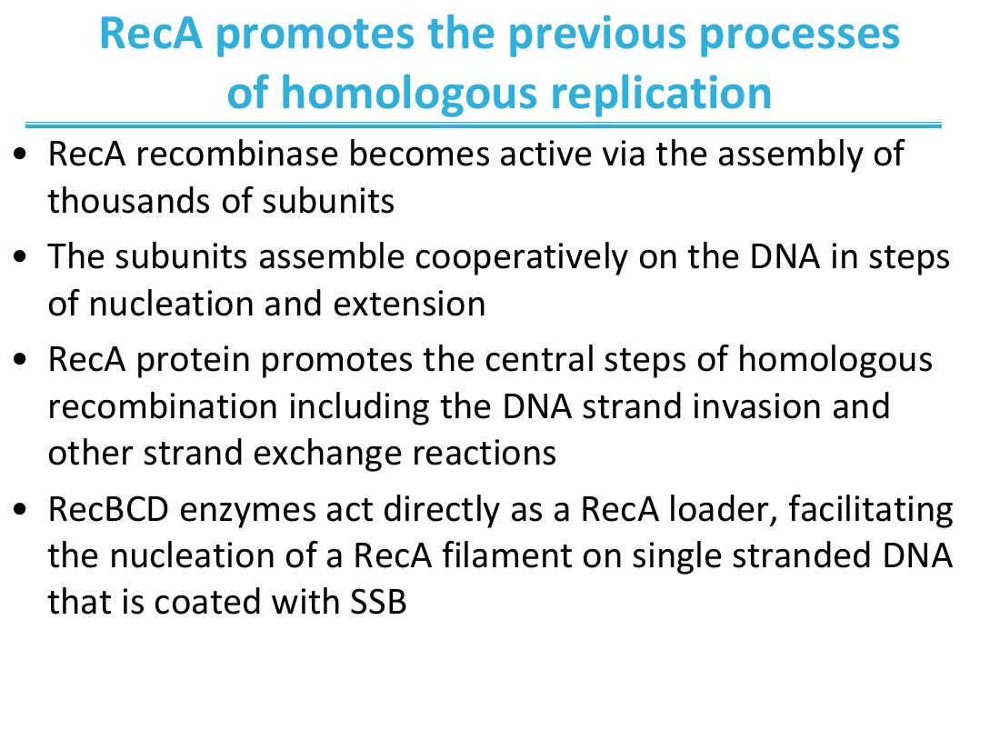
RecA promotes the previous processes of homologous replication
RecA는 상동 재조합의 앞선 과정들을 촉진한다 (제목의 'replication'은 'recombination'의 오타로 보임)
RecA recombinase becomes active via the assembly of thousands of subunits
RecA 재조합효소는 수천 개의 소단위가 조립되면서 활성화된다
The subunits assemble cooperatively on the DNA in steps of nucleation and extension
소단위들은 DNA 위에서 핵 형성과 연장 단계를 거쳐 협동적으로 조립된다
RecA protein promotes the central steps of homologous recombination including the DNA strand invasion and other strand exchange reactions
RecA 단백질은 DNA 가닥 침입과 기타 가닥 교환 반응을 포함한 상동 재조합의 핵심 단계를 촉진한다
RecBCD enzymes act directly as a RecA loader, facilitating the nucleation of a RecA filament on single stranded DNA that is coated with SSB
RecBCD 효소는 RecA 로더로 직접 작용하여, SSB로 덮인 단일가닥 DNA 위에서 RecA 필라멘트의 핵 형성을 촉진한다
기출 1건 · 테스트뱅크 3건 형광펜 = 실제로 물어본 문장TB 25-26
상동 유전 재조합에서 RecA 단백질은 다음에 관여한다:
- A 홀리데이(Holliday) 중간체 형성과 가지 이동(branch migration)
- B 재조합 산물에 음성 초나선 도입
- C 반응을 개시하기 위해 두 이중가닥 DNA 분자에 닉을 냄
- D 상보성과 관계없이 한 이중가닥 DNA 분자의 DNA 가닥을 다른 이중가닥의 서열과 짝지음
- E 홀리데이 중간체의 해결(resolution)
정답·포인트 A 홀리데이(Holliday) 중간체 형성과 가지 이동(branch migration) — RecA는 가닥 침입·교환 → 홀리데이 중간체 형성, 가지 이동 촉진(ATP 가수분해). 해결은 RuvC. D는 '상보성과 관계없이'가 틀림.
TB 25-27
다음 중 틀린 설명은? 시험관 내(in vitro)에서 가닥 교환 반응은:
- A 홀리데이 중간체의 형성을 포함할 수 있다.
- B ATP 가수분해를 동반한다.
- C 일시적으로 세 가닥 또는 네 가닥 DNA 복합체의 형성을 포함할 수 있다.
- D RecA 단백질이 필요하다.
- E DNA 중합효소를 필요로 한다.
정답·포인트 E DNA 중합효소를 필요로 한다. — RecA 매개 가닥 교환은 기존 가닥끼리 짝을 바꾸는 것이라 새 DNA 합성(중합효소)이 필요 없다.
시험 포인트RecA = 세균 재조합효소, 수천 개 소단위 조립으로 활성화, 조립 = 핵 형성 → 연장(협동적). 기능 = 가닥 침입·가닥 교환. RecBCD = RecA 로더(SSB 덮인 단일가닥에서 RecA 필라멘트 핵 형성 촉진).
그림 해설·더 깊이까지 보기 →슬라이드 65DNA에 결합한 RecA 필라멘트 (그림 25-32)TB 1원문·번역
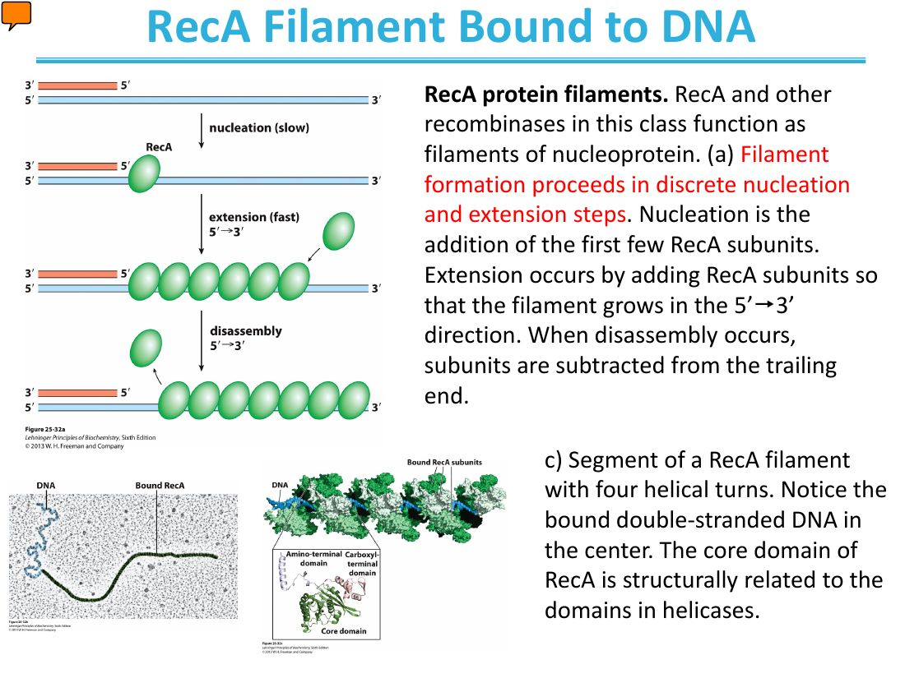
RecA Filament Bound to DNA
DNA에 결합한 RecA 필라멘트
RecA protein filaments. RecA and other recombinases in this class function as filaments of nucleoprotein. (a) Filament formation proceeds in discrete nucleation and extension steps. Nucleation is the addition of the first few RecA subunits. Extension occurs by adding RecA subunits so that the filament grows in the 5'→3' direction. When disassembly occurs, subunits are subtracted from the trailing end.
RecA 단백질 필라멘트. RecA와 이 부류의 다른 재조합효소들은 핵단백질 필라멘트로 기능한다. (a) 필라멘트 형성은 뚜렷이 구분되는 핵 형성 단계와 연장 단계로 진행된다. 핵 형성은 처음 몇 개의 RecA 소단위가 붙는 것이다. 연장은 RecA 소단위가 추가되어 필라멘트가 5'→3' 방향으로 자라는 것이다. 해체가 일어날 때는 소단위가 뒤쪽(꼬리) 끝에서 빠져나간다.
c) Segment of a RecA filament with four helical turns. Notice the bound double-stranded DNA in the center. The core domain of RecA is structurally related to the domains in helicases.
c) 나선 4바퀴로 된 RecA 필라멘트의 일부. 가운데에 결합된 이중가닥 DNA에 주목하라. RecA의 핵심 도메인은 헬리케이스의 도메인들과 구조적으로 관련이 있다.
Figure 25-32a / Figure 25-32b / Figure 25-32c
그림 25-32a / 그림 25-32b / 그림 25-32c
(a) 3' / 5' / nucleation (slow) / RecA / extension (fast) 5'→3' / disassembly 5'→3'
(a) 3' / 5' / 핵 형성(느림) / RecA / 연장(빠름) 5'→3' / 해체 5'→3'
(b) DNA / Bound RecA
(b) DNA / 결합된 RecA
(c) DNA / Bound RecA subunits / Amino-terminal domain / Carboxyl-terminal domain / Core domain
(c) DNA / 결합된 RecA 소단위들 / 아미노 말단 도메인 / 카복실 말단 도메인 / 핵심 도메인
테스트뱅크 1건 형광펜 = 실제로 물어본 문장TB 25-25
대장균 상동 재조합에서, DNA의 한 영역을 감싸는 긴 나선형 필라멘트로 조립되는 단백질은:
- A DNA 메틸화효소
- B DNA 중합효소
- C 히스톤
- D RecA 단백질
- E RecBCD 효소
정답·포인트 D RecA 단백질 — RecA는 단일가닥 DNA 위에 나선형 필라멘트를 형성해 상동 서열 탐색·가닥 교환을 수행.
시험 포인트필라멘트 형성 = 핵 형성(느림) → 연장(빠름, 5'→3'), 해체도 5'→3'(뒤쪽 끝에서 소단위 이탈). 핵 형성 = 처음 몇 개 RecA 부착. 나선 4바퀴 그림에서 가운데에 DNA, RecA 핵심 도메인 ≈ 헬리케이스 도메인.
그림 해설·더 깊이까지 보기 →슬라이드 66RuvAB 복합체는 분지 이동을 촉진한다 — RuvC에 의한 해소 (그림 25-33)기출 1TB 1원문·번역
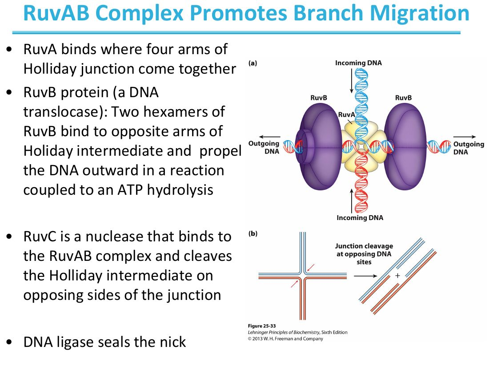
RuvAB Complex Promotes Branch Migration
RuvAB 복합체는 분지 이동을 촉진한다
RuvA binds where four arms of Holliday junction come together
RuvA는 홀리데이 접합의 네 팔이 모이는 곳에 결합한다
RuvB protein (a DNA translocase): Two hexamers of RuvB bind to opposite arms of Holiday intermediate and propel the DNA outward in a reaction coupled to an ATP hydrolysis
RuvB 단백질(DNA 이동효소): 두 개의 RuvB 6량체가 홀리데이 중간체의 반대쪽 팔에 결합하여, ATP 가수분해와 짝지어진 반응으로 DNA를 바깥쪽으로 밀어낸다
RuvC is a nuclease that binds to the RuvAB complex and cleaves the Holliday intermediate on opposing sides of the junction
RuvC는 RuvAB 복합체에 결합하여 접합의 마주 보는 쪽에서 홀리데이 중간체를 자르는 뉴클레이스다
DNA ligase seals the nick
DNA 연결효소가 닉을 봉합한다
(a) Incoming DNA / RuvB / RuvA / RuvB / Outgoing DNA / Outgoing DNA / Incoming DNA
(a) 들어오는 DNA / RuvB / RuvA / RuvB / 나가는 DNA / 나가는 DNA / 들어오는 DNA
(b) Junction cleavage at opposing DNA sites / +
(b) 마주 보는 DNA 자리에서의 접합 절단 / +
기출 1건 · 테스트뱅크 1건 형광펜 = 실제로 물어본 문장20192017 퀴즈
In E. coli homologous recombination, which protein cleaves the Holliday intermediate? — RecB / RecC / RecD / RuvA / RuvC
정답·포인트 RuvC(RuvA = 교차점 결합, RuvB = 분지 이동 모터).
시험 포인트RuvA = 네 팔이 모이는 교차점에 결합, RuvB = DNA 이동효소, 6량체 2개가 반대쪽 팔에, ATP 가수분해로 DNA를 바깥으로 → 분지 이동, RuvC = RuvAB에 결합하는 뉴클레이스, 마주 보는 쪽 절단(해소), 연결효소 = 닉 봉합.
그림 해설·더 깊이까지 보기 →슬라이드 67원점 비의존적 복제 재개원문·번역
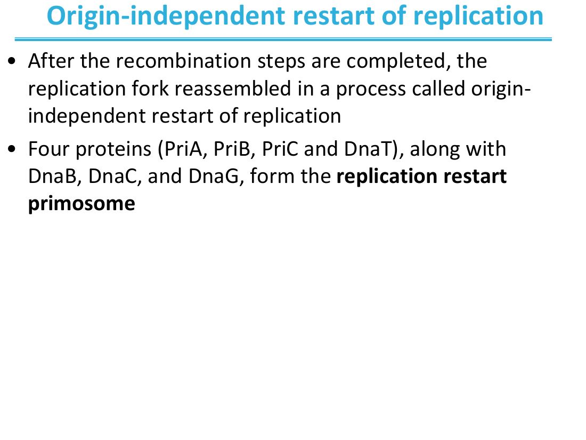
Origin-independent restart of replication
원점 비의존적 복제 재개
After the recombination steps are completed, the replication fork reassembled in a process called origin-independent restart of replication
재조합 단계가 완료된 후, 복제 분기점은 원점 비의존적 복제 재개라고 불리는 과정으로 재조립된다
Four proteins (PriA, PriB, PriC and DnaT), along with DnaB, DnaC, and DnaG, form the replication restart primosome
네 가지 단백질(PriA, PriB, PriC, DnaT)이 DnaB, DnaC, DnaG와 함께 복제 재개 프라이모솜을 형성한다
시험 포인트재조합 후 분기점 재조립 = 원점 비의존적 복제 재개. 복제 재개 프라이모솜 = PriA·PriB·PriC·DnaT + DnaB·DnaC·DnaG.
그림 해설·더 깊이까지 보기 →9
감수분열 재조합과 이수성
슬라이드 68–76
처음이라면 · 큰 그림부터
감수분열은 염색체 수를 절반으로 줄여 정자와 난자를 만드는 분열이에요. 복제된 염색체(자매 염색분체 두 개짜리)가 엄마 쪽·아빠 쪽 상동 염색체끼리 짝을 지어 네 가닥 묶음이 되고, 이때 상동 염색체 사이에서 조각을 바꾸는 교차가 일어나요. 교차는 유전적 다양성을 만들기도 하지만, 상동 염색체를 물리적으로 묶어 첫 분열 때 제대로 양쪽으로 갈라지게 하는 고리(키아스마) 역할도 해요.
자매 염색분체를 묶는 끈은 코헤신이에요. 첫 분열에서는 팔 부분 코헤신만 풀어 상동 염색체를 나누고, 동원체 쪽 코헤신은 두 번째 분열까지 남겨 둬요. 이 타이밍이 어긋나면 염색체가 한쪽으로 몰려 개수가 틀린 세포(이수성)가 생겨요. 난자는 감수분열 도중 수십 년을 멈춰 있어서, 나이가 들수록 이수성 위험이 커져요.
교차가 분자 수준에서 어떻게 일어나는지는 이중가닥 절단 수선 모델로 설명해요. 일부러 DNA를 끊고, 8단원처럼 상동 염색체를 주형으로 메우는 과정에서 홀리데이 구조가 두 개 생기고, 그걸 어느 방향으로 자르느냐에 따라 양옆 유전자가 서로 바뀌기도(교차) 그대로 있기도 해요.
흐름 한 줄
상동 염색체 짝짓기→이중가닥 절단 → 가닥 침입→이중 홀리데이 구조→해소 방향에 따라 교차 / 비교차→제1분열: 상동 염색체 분리
이 단원에서 처음 나오는 말
- 상동 염색체 · 자매 염색분체
- 부모에게서 하나씩 받은 같은 번호의 염색체 쌍 / 복제로 생긴 똑같은 두 사본.
- 키아스마
- 교차가 일어난 자리에서 상동 염색체가 X자로 붙어 보이는 부분.
- 코헤신
- 자매 염색분체를 고리처럼 묶어 두는 단백질 복합체.
- 이수성
- 염색체 수가 정상보다 많거나 적은 상태(예: 21번 삼염색체).
여기부터 자세히
- 감수분열: 코헤신이 자매 염색분체 연결, 4분 염색체는 키아스마로 묶임, 제1분열에서 교차.
- 코헤신 Rad21(체세포)·Rec8(감수): 제1분열 = 팔만 해제, 동원체는 제2분열까지 유지.
- 이중가닥 절단 수선 모델 → 이중 홀리데이 → 산물 세트 1(양옆 유지) / 2(양옆 재조합). 여성 감수분열 정지 → 나이↑ 이수성↑.
감수분열에서의 상동 재조합
감수분열은 2배체 생식세포가 반수체를 만드는 분열이에요. 복제 후 자매 염색분체는 코헤신으로 묶여 있고, 상동염색체 쌍이 붙은 4분 염색체는 키아스마(가닥이 끊기고 다시 이어진 공유결합 연결)로 묶여 있어요. 제1감수분열에서 키아스마에서 교차가 일어나 유전 물질이 교환돼요.
| 코헤신 | 팔 부위 | 동원체 부위 | 분리 방식 |
|---|
| 체세포분열 | Rad21 | 후기에 한꺼번에 해제 | 균등 |
| 제1감수분열 | Rec8 | 해제(재조합된 상동염색체 분리) | 유지 | 감수(reductional) |
| 제2감수분열 | Rec8 | — | 해제 | 균등(equational) |
이중가닥 절단 수선 모델
α에 이중가닥 절단① 엑소가 틈 확대
5' 끝 더 많이 → 3' 꼬리② 3' 끝이 β에 침입
밀려난 β 가닥 = 주형③ 중합 + 분지 이동
두 번째 끝 포획 → 교차 2개④ 추가 복제로 빈 DNA 채움⑤ 해소효소 → 산물 1 또는 2
홀리데이 중간체를 어느 쌍의 가닥으로 자르느냐에 따라 산물 세트 1(교차한 가닥 절단 → 수선 구간만 바뀌고 양옆 유전자 조합은 그대로)과 산물 세트 2(교차 안 한 가닥 절단 → 수선 부위 양옆 DNA까지 재조합)가 나와요.
유전자 지도와 이수성
두 지점 사이 재조합 빈도는 거리에 대략 비례해서 유전자 위치를 정하는 데 쓰여요(유전자 지도). 정렬·재조합이 잘못되면 생식세포가 특정 염색체를 0개 또는 2개 갖게 돼(이수성), 2개짜리가 정상과 만나면 3염색체성이에요(21번 = 다운 증후군).
남성은 사춘기부터 빠르고 자주 감수분열을 하지만, 여성은 태아 때 제1분열 전기(교차까지)에서 멈춰 성 성숙까지 기다려요. 배란 때 제1분열, 수정 때 제2분열을 끝내요. 이 긴 정지 동안 교차 연결이 망가질 수 있어 산모 나이 35세 이후 3염색체성이 급증해요.
이 단원 기출·테스트뱅크 4건 문제·정답은 슬라이드를 펼치거나 번역본에서- 20222017 퀴즈2016 감수분열 재조합(홀리데이 1개 X) 슬라이드 70
- 20222016단답·서술 키아스마(단답) 슬라이드 68
- 2016레닌저 연습문제단답·서술 홀리데이 X·Y 절단 위치 슬라이드 72
- TB 25-51단답·서술 진핵세포의 감수분열 중 상동 재조합에 대한 현재 모델의 네 가지 핵심 특징을 개괄하… 슬라이드 70
이 단원 슬라이드 원문·번역 펼쳐서 보기
슬라이드 68진핵생물의 상동 재조합은 감수분열에서 빈번하다 (그림 25-34)기출 1원문·번역
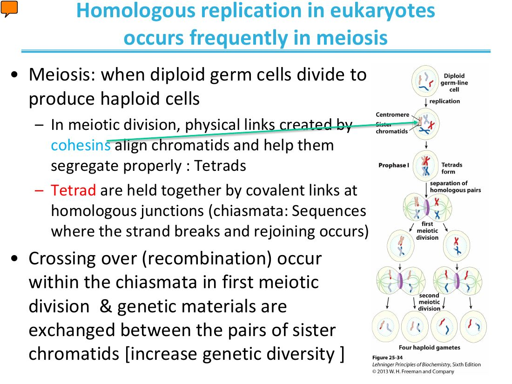
Homologous replication in eukaryotes occurs frequently in meiosis
진핵생물의 상동 재조합은 감수분열에서 빈번하게 일어난다 (제목의 'replication'은 'recombination'의 오타로 보임)
Meiosis: when diploid germ cells divide to produce haploid cells
감수분열: 2배체 생식세포가 분열하여 반수체 세포를 만드는 것
In meiotic division, physical links created by cohesins align chromatids and help them segregate properly : Tetrads
감수분열에서 코헤신이 만드는 물리적 연결이 염색분체를 정렬하고 제대로 분리되도록 돕는다: 4분 염색체
Tetrad are held together by covalent links at homologous junctions (chiasmata: Sequences where the strand breaks and rejoining occurs)
4분 염색체는 상동 접합 부위의 공유결합 연결로 붙들려 있다(키아스마: 가닥의 절단과 재결합이 일어나는 서열)
Crossing over (recombination) occur within the chiasmata in first meiotic division & genetic materials are exchanged between the pairs of sister chromatids [increase genetic diversity ]
교차(재조합)는 제1감수분열 때 키아스마 안에서 일어나며, 자매 염색분체 쌍들 사이에 유전 물질이 교환된다 [유전적 다양성 증가]
Diploid germ-line cell / replication / Centromere / Sister chromatids
2배체 생식계열 세포 / 복제 / 동원체 / 자매 염색분체
Prophase I / Tetrads form / separation of homologous pairs / first meiotic division
제1전기 / 4분 염색체 형성 / 상동 쌍의 분리 / 제1감수분열
second meiotic division / Four haploid gametes
제2감수분열 / 반수체 생식세포 4개
기출 1건 형광펜 = 실제로 물어본 문장20222016단답·서술
[단답] 상동염색체의 비자매 염색분체 두 개를 잇는 지점(감수분열에서 교차가 일어나는 곳)은?
정답·포인트 Chiasma(복수 chiasmata), 키아스마. 2016년엔 두 반 복기 모두 출제.
시험 포인트감수분열 = 2배체 생식세포 → 반수체. 코헤신 = 염색분체 정렬·분리 돕는 물리적 연결. 4분 염색체는 키아스마(가닥 절단·재결합 서열, 공유결합 연결)로 묶임. 교차 = 제1감수분열, 키아스마에서 → 유전적 다양성↑.
그림 해설·더 깊이까지 보기 →슬라이드 69체세포분열 vs 감수분열에서 코헤신(Rad21·Rec8)의 행동기출 1원문·번역
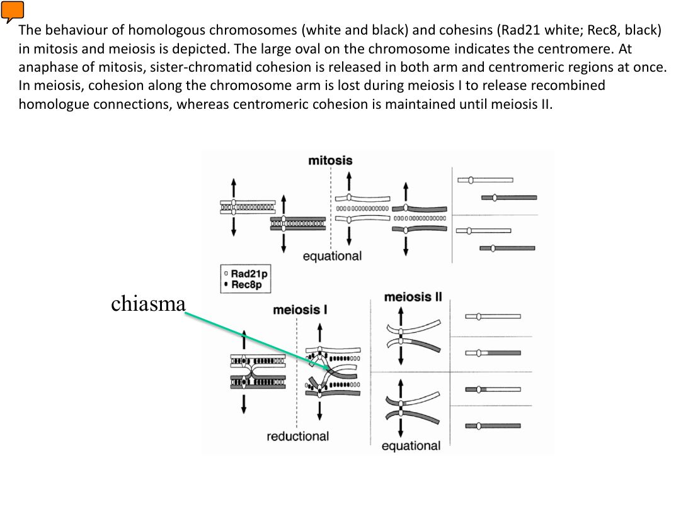
The behaviour of homologous chromosomes (white and black) and cohesins (Rad21 white; Rec8, black) in mitosis and meiosis is depicted. The large oval on the chromosome indicates the centromere. At anaphase of mitosis, sister-chromatid cohesion is released in both arm and centromeric regions at once. In meiosis, cohesion along the chromosome arm is lost during meiosis I to release recombined homologue connections, whereas centromeric cohesion is maintained until meiosis II.
체세포분열과 감수분열에서 상동염색체(흰색과 검은색)와 코헤신(Rad21은 흰색, Rec8은 검은색)의 행동을 나타냈다. 염색체 위의 큰 타원은 동원체를 나타낸다. 체세포분열 후기에는 자매 염색분체의 결합이 팔 부위와 동원체 부위 모두에서 한꺼번에 풀린다. 감수분열에서는 염색체 팔을 따라 있는 결합이 제1감수분열 동안 사라져 재조합된 상동염색체의 연결을 풀어주는 반면, 동원체의 결합은 제2감수분열까지 유지된다.
mitosis / equational
체세포분열 / 균등(분열)
○ Rad21p / ● Rec8p
○ Rad21p(흰 점) / ● Rec8p(검은 점)
meiosis I / reductional
제1감수분열 / 감수(분열, 염색체 수 반감)
meiosis II / equational
제2감수분열 / 균등(분열)
시험 포인트코헤신: Rad21 = 체세포분열(흰색), Rec8 = 감수분열(검은색). 체세포분열 후기 = 팔 + 동원체 코헤신 동시 해제(균등). 감수분열 = 제1분열에서 팔 코헤신만 해제(재조합된 상동염색체 분리, 감수), 동원체 코헤신은 제2분열까지 유지(균등).
그림 해설·더 깊이까지 보기 →슬라이드 70감수분열 상동 재조합 모델 — 이중가닥 절단 수선 모델 (1) (그림 25-35a 1부)기출 2TB 1원문·번역

Model of Homologous Recombination in Meiosis
감수분열에서의 상동 재조합 모델
Double strand break repair model
이중가닥 절단 수선 모델
Chromosomes align (Call them α and β)
염색체들이 정렬한다(α와 β라고 부르자)
Double-strand break occurs in Chromosome α
염색체 α에 이중가닥 절단이 일어난다
Exonuclease degrades dsb ends to make bigger gap
엑소뉴클레이스가 이중가닥 절단(dsb)의 끝을 분해하여 더 큰 틈을 만든다
3'-ending strands of the gap "invade" Chromosome β → they pair with a complementary region on Chromosome β
틈의 3'으로 끝나는 가닥이 염색체 β에 '침입'한다 → 염색체 β의 상보적 부위와 짝을 이룬다
This displaces a strand in Chromosome β; it binds to Chromosome α
이로 인해 염색체 β의 한 가닥이 밀려나고, 그 가닥은 염색체 α에 결합한다
The displaced region of Chromosome β (now paired with Chromosome α) serves as the template to replace missing DNA
염색체 β의 밀려난 부위(이제 염색체 α와 짝을 이룸)가 없어진 DNA를 대체하는 주형 역할을 한다
Figure 25-35a part 1
그림 25-35a 1부
Gene A / Gene B / 5' / 3'
유전자 A / 유전자 B / 5' / 3'
① A double-strand break in one of two homologs is converted to a double-strand gap by the action of exonucleases. Strands with 3' ends are degraded less than those with 5' ends, producing 3' single-strand extensions.
① 두 상동염색체 중 하나에 생긴 이중가닥 절단이 엑소뉴클레이스의 작용으로 이중가닥 틈으로 바뀐다. 3' 끝을 가진 가닥은 5' 끝을 가진 가닥보다 덜 분해되어, 3' 단일가닥 연장부가 생긴다.
② An exposed 3' end pairs with its complement in the intact homolog. The other strand of the duplex is displaced.
② 노출된 3' 끝이 온전한 상동염색체의 상보 서열과 짝을 이룬다. 그 이중가닥의 다른 가닥은 밀려난다.
기출 2건 · 테스트뱅크 1건 형광펜 = 실제로 물어본 문장20222017 퀴즈2016
감수분열 상동 재조합(이중가닥 절단 수선 모델)에 대해 틀린 것 — double strand break / cleavage of two sites(crossover) / 상동염색체 정렬 / a single Holliday intermediate 형성 / 3' ending strand가 온전한 이중가닥에 침입
정답·포인트 홀리데이 중간체는 2개(교차 2개) → 'single'이 틀림. 3번 연속 출제된 문제!
TB 25-51단답·서술
[서술] 진핵세포의 감수분열 중 상동 재조합에 대한 현재 모델의 네 가지 핵심 특징을 개괄하라.
정답·포인트 (1) 상동 염색체들이 정렬된다. (2) 이중가닥 절단이 핵산말단가수분해효소에 의해 확장되어, 자유 3' 하이드록실 말단을 가진 단일가닥 연장부가 남는다. (3) 노출된 3' 말단이 손상되지 않은 상동 이중가닥 DNA에 침입하고, 이어서 가지 이동이 일어나 홀리데이 접합(Holliday junction)이 만들어진다. (4) 두 교차 산물의 절단으로 두 재조합 산물이 생긴다. (1006쪽 그림 25-33 참조)
시험 포인트이중가닥 절단 수선 모델: α·β 정렬 → α에 이중가닥 절단 → 엑소뉴클레이스가 끝 분해(틈 확대, 3' 끝은 덜 분해 → 3' 단일가닥 연장부) → 3' 끝이 β에 침입·짝 → β의 한 가닥 밀려나 α와 짝 → 밀려난 β 부위가 주형.
그림 해설·더 깊이까지 보기 →슬라이드 71이중가닥 절단 수선 모델 (2) — 이중 홀리데이 중간체와 두 종류의 산물 (그림 25-35a 2부)기출 2원문·번역
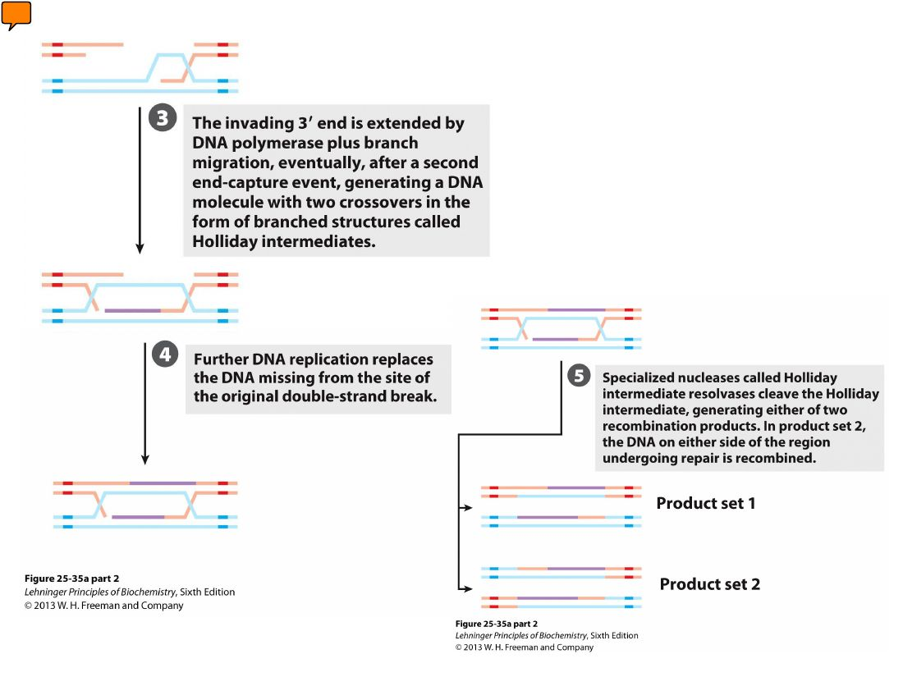
③ The invading 3' end is extended by DNA polymerase plus branch migration, eventually, after a second end-capture event, generating a DNA molecule with two crossovers in the form of branched structures called Holliday intermediates.
③ 침입한 3' 끝이 DNA 중합효소에 의해 연장되고 분지 이동이 더해지며, 결국 두 번째 끝 포획이 일어난 뒤, 홀리데이 중간체라 불리는 분지 구조 형태의 교차 두 개를 가진 DNA 분자가 만들어진다.
④ Further DNA replication replaces the DNA missing from the site of the original double-strand break.
④ 추가적인 DNA 복제가 원래 이중가닥 절단 자리에서 없어진 DNA를 대체한다.
⑤ Specialized nucleases called Holliday intermediate resolvases cleave the Holliday intermediate, generating either of two recombination products. In product set 2, the DNA on either side of the region undergoing repair is recombined.
⑤ 홀리데이 중간체 해소효소라고 불리는 특수한 뉴클레이스가 홀리데이 중간체를 잘라, 두 가지 재조합 산물 중 하나를 만든다. 산물 세트 2에서는 수선이 일어나는 부위 양옆의 DNA가 재조합된다.
Product set 1 / Product set 2
산물 세트 1 / 산물 세트 2
Figure 25-35a part 2
그림 25-35a 2부
시험 포인트③ DNA 중합효소로 3' 끝 연장 + 분지 이동 + 두 번째 끝 포획 → 교차 2개(홀리데이 중간체 2개) → ④ 추가 복제로 빈 DNA 대체 → ⑤ 홀리데이 중간체 해소효소가 절단 → 산물 2종. 산물 세트 2 = 수선 부위 양옆 DNA가 재조합(교차형), 세트 1 = 양옆 그대로.
그림 해설·더 깊이까지 보기 →슬라이드 72홀리데이 중간체를 어떻게 자르느냐에 따른 산물 세트 1·2기출 1원문·번역

⑤ Specialized nucleases called Holliday intermediate resolvases cleave the Holliday intermediate, generating either of two recombination products. In product set 2, the DNA on either side of the region undergoing repair is recombined. / Product set 1 / Product set 2 / Figure 25-35a part 2
⑤ 홀리데이 중간체 해소효소라는 특수 뉴클레이스가 홀리데이 중간체를 잘라 두 재조합 산물 중 하나를 만든다. 산물 세트 2에서는 수선 부위 양옆의 DNA가 재조합된다. / 산물 세트 1 / 산물 세트 2 / 그림 25-35a 2부
(top right) Product set 2 / Product set 1 / ① 5…3 / ② 3…5 / ③ 3…5 / ④ 5…3
(오른쪽 위) 산물 세트 2 / 산물 세트 1 / ① 5'…3' / ② 3'…5' / ③ 3'…5' / ④ 5'…3'
(middle) Product set 1 / ① ② ③ ④ / 3 / 5
(가운데) 산물 세트 1 / ① ② ③ ④ / 3' / 5'
(bottom) Product set 2 / ① ② ③ ④ / 3 / 5
(아래) 산물 세트 2 / ① ② ③ ④ / 3' / 5'
https://www.youtube.com/watch?v=8LFk0C7rVUo
(참고 동영상 링크: 유튜브 — 홀리데이 접합 해소)
기출 1건 형광펜 = 실제로 물어본 문장2016레닌저 연습문제단답·서술
[주관식, 레닌저 문제] A–b / a–B 사이의 홀리데이 중간체를 (a) Ab, (b) ab 유전형이 되려면 X·Y 중 어디를 잘라야 하나?
정답·포인트 교차한 가닥을 자르면(산물 세트 1) 양옆 조합 유지, 교차 안 한 가닥을 자르면(산물 세트 2) 양옆 재조합 — 슬라이드 72의 두 대각선과 같은 원리로 풀어요.
시험 포인트해소효소 절단 방향에 따라: 산물 세트 1 = 교차한 가닥(②·③)을 절단 → 양옆 DNA 조합 유지(비교차형), 산물 세트 2 = 교차 안 한 가닥(①·④)을 절단 → 양옆 DNA까지 재조합(교차형). 십자 그림에서 서로 다른 대각선.
그림 해설·더 깊이까지 보기 →슬라이드 73자매 염색체의 독립 분리가 유전적 다양성에 기여하는 방식 — 상동 재조합과 유전자 지도 (그림 25-36)원문·번역
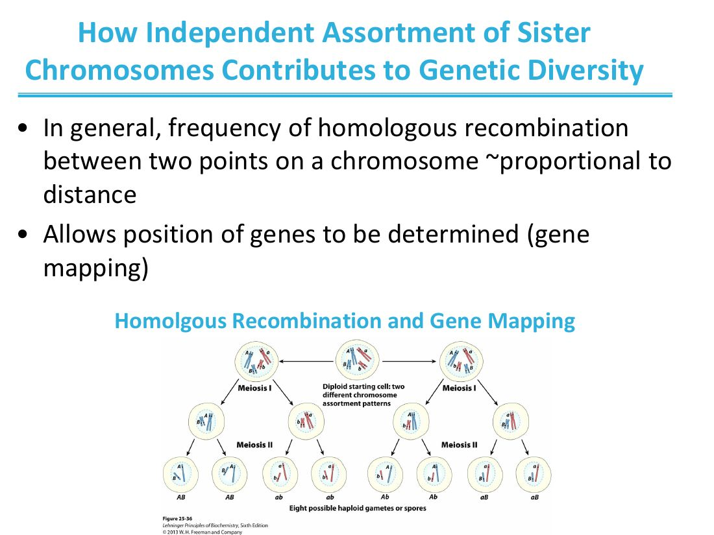
How Independent Assortment of Sister Chromosomes Contributes to Genetic Diversity
자매 염색체의 독립 분리가 유전적 다양성에 기여하는 방식
In general, frequency of homologous recombination between two points on a chromosome ~proportional to distance
일반적으로, 염색체 위 두 지점 사이의 상동 재조합 빈도는 (두 지점 사이의) 거리에 대략 비례한다
Allows position of genes to be determined (gene mapping)
이를 이용해 유전자의 위치를 결정할 수 있다(유전자 지도 작성)
Homolgous Recombination and Gene Mapping (Figure 25-36)
상동 재조합과 유전자 지도 작성 (그림 25-36) (원문 'Homolgous'는 'Homologous'의 오타)
Diploid starting cell: two different chromosome assortment patterns
2배체 출발 세포: 서로 다른 두 가지 염색체 분리(배열) 양상
Meiosis I / Meiosis II
제1감수분열 / 제2감수분열
A / a / B / b
A / a / B / b (대립유전자)
AB / AB / ab / ab / Ab / Ab / aB / aB
AB / AB / ab / ab / Ab / Ab / aB / aB
Eight possible haploid gametes or spores
가능한 반수체 생식세포 또는 포자 8개
시험 포인트상동 재조합 빈도 ∝ 두 지점 사이 거리 → 유전자 지도 작성. 독립 분리 2가지 배열 → 생식세포 AB·ab·Ab·aB.
그림 해설·더 깊이까지 보기 →슬라이드 74이수성은 유산이나 발달 장애로 이어질 수 있다원문·번역
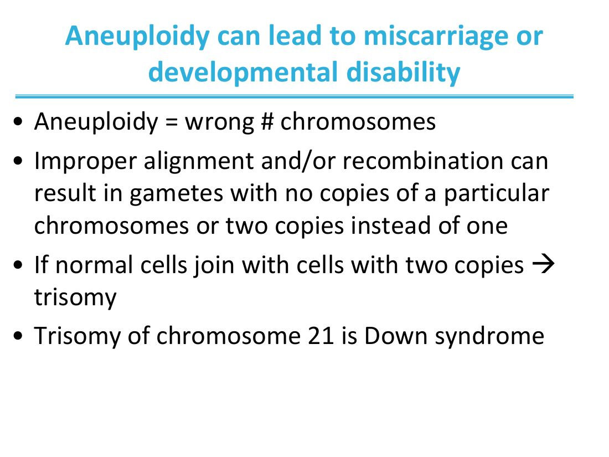
Aneuploidy can lead to miscarriage or developmental disability
이수성은 유산이나 발달 장애로 이어질 수 있다
Aneuploidy = wrong # chromosomes
이수성 = 염색체 수가 틀린 것
Improper alignment and/or recombination can result in gametes with no copies of a particular chromosomes or two copies instead of one
부적절한 정렬 및/또는 재조합은 특정 염색체를 하나도 갖지 않거나, 하나 대신 두 개를 갖는 생식세포를 만들 수 있다
If normal cells join with cells with two copies → trisomy
정상 세포가 두 개의 사본을 가진 세포와 결합하면 → 3염색체성
Trisomy of chromosome 21 is Down syndrome
21번 염색체의 3염색체성이 다운 증후군이다
시험 포인트이수성 = 염색체 수 이상, 원인 = 부적절한 정렬·재조합 → 생식세포에 특정 염색체 0개 또는 2개. 정상 + 2개짜리 → 3염색체성. 21번 3염색체성 = 다운 증후군.
그림 해설·더 깊이까지 보기 →슬라이드 75남성과 여성의 감수분열 차이가 이수성을 설명한다 (Box 25-2 그림 1)원문·번역

Differences in male vs. female meiosis explain aneuploidy
남성과 여성의 감수분열 차이가 이수성을 설명한다
Males: germ-line cells begin to undergo meiosis at puberty…process is rapid and frequent
남성: 생식계열 세포가 사춘기에 감수분열을 시작한다… 과정이 빠르고 빈번하다
Females: much longer-term process with an extended "suspended animation" phase
여성: 오랜 '정지 상태(가사 상태)' 단계가 있는 훨씬 장기적인 과정
Germ-line cells being to undergo meiosis in fetal stage…chromosomes align and undergo crossing-over, then process stops until sexual maturity
생식계열 세포가 태아 단계에서 감수분열을 시작한다(원문 'being'은 'begin'의 오타)… 염색체가 정렬하고 교차를 겪은 뒤, 과정이 성 성숙 때까지 멈춘다
Disruptions to crossovers during this stage produce aneuploidy
이 단계 동안 교차가 손상되면 이수성이 생긴다
Likelihood of damage increases with age
손상 가능성은 나이에 따라 증가한다
Box 25-2 Figure 1
Box 25-2 그림 1
Incidence of trisomy (% of clinically recognized pregnancies) / Maternal age / 0–35 / 15–40
3염색체성 발생률(임상적으로 확인된 임신 중 %) / 산모 나이 / (y축) 0~35 / (x축) 15~40
시험 포인트남성 = 사춘기 시작, 빠르고 빈번 / 여성 = 태아기에 시작(정렬·교차까지) → 성 성숙까지 정지. 정지 중 교차 손상 → 이수성, 나이↑ → 위험↑(그래프: 산모 나이 35세 이후 3염색체성 급증).
그림 해설·더 깊이까지 보기 →슬라이드 76난자 형성 vs 정자 형성의 감수분열 시점원문·번역

Meiosis becomes arrested in prophase of division 1 (crossing over)
감수분열이 제1분열 전기에서 정지된다 (교차)
Completion of division 1 of meiosis
제1감수분열의 완료
Completion of division 2 of meiosis
제2감수분열의 완료
Meiosis division 1 / Meiosis division 2
제1감수분열 / 제2감수분열
(Oogenesis) Embryo / Primordial germ cells multiply during migration / Enters ovary / Some mitotic divisions of oogonia within ovary / No further multiplication in embryo / Primary oocyte / Meiosis becomes arrested in prophase of division 1
(난자 형성) 배아기 / 원시 생식세포가 이동하며 증식 / 난소로 들어감 / 난소 안에서 난원세포가 몇 번 체세포분열 / 배아기에 더 이상 증식 없음 / 일차 난모세포 / 감수분열이 제1분열 전기에서 정지
(Oogenesis) Adult / Further growth and development of primary oocyte / egg coat / cortical granules / Ovulation / Completion of division 1 of meiosis / Secondary oocyte / first polar body / Fertilization / Completion of division 2 of meiosis / second polar body
(난자 형성) 성인기 / 일차 난모세포의 추가 성장·발달 / 난막 / 피층 과립 / 배란 / 제1감수분열 완료 / 이차 난모세포 / 제1극체 / 수정 / 제2감수분열 완료 / 제2극체
(Spermatogenesis) Embryo / Primordial germ cells multiply during migration / Enters testis / Arrest in G₁ of cell cycle / After birth / Diploid spermatogonia multiply by mitosis in testis / Stem cell / Spermatocyte / Meiotic division 1 / Meiotic division 2 / Spermatids / Differentiation / Mature sperm
(정자 형성) 배아기 / 원시 생식세포가 이동하며 증식 / 정소로 들어감 / 세포 주기 G₁에서 정지 / 출생 후 / 2배체 정원세포가 정소에서 체세포분열로 증식 / 줄기세포 / 정모세포 / 제1감수분열 / 제2감수분열 / 정세포 / 분화 / 성숙한 정자
시험 포인트난자: 제1분열 전기에서 정지(교차 상태) → 배란 때 제1분열 완료 → 수정 때 제2분열 완료(극체 생성). 정자: 배아기 G₁ 정지 → 출생 후 정원세포 증식(줄기세포) → 정모세포 → 제1·2분열 → 정자 4개.
그림 해설·더 깊이까지 보기 →10
부위 특이적 재조합·전위·면역글로불린 재조합
슬라이드 77–88
처음이라면 · 큰 그림부터
부위 특이적 재조합은 정해진 짧은 서열 두 곳만 자르고 붙이는 정밀 가위예요. 재조합효소가 두 표적 서열에 붙어 자르고 상대를 바꿔 다시 이어요. 결과는 표적의 방향에 따라 달라요. 같은 DNA 위에서 반대 방향이면 사이 구간이 뒤집히고(역위), 같은 방향이면 사이 구간이 고리로 빠져나가요(결실). 실험실에서 쓰는 Cre/loxP가 이 원리예요.
전위는 "점프하는 유전자"예요. 트랜스포존이라는 DNA 조각이 잘려 나가거나 복사되어 다른 자리에 끼어들어요. 끼어든 자리 양옆에 짧은 표적 서열이 중복되어 남는 게 흔적이고, 세균에서는 항생제 내성 유전자가 이런 식으로 퍼지기도 해요.
면역계는 이 원리로 항체 다양성을 만들어요. 항체 유전자는 V, J(중쇄는 D도) 조각이 여러 개씩 따로 있는데, B세포가 성숙할 때 RAG1·2가 그중 하나씩 골라 잘라 붙여요. 조합 가짓수를 곱하면 천만 종이 넘는 항체가 나와요.
흐름 한 줄
재조합효소가 두 표적 서열에 결합→절단 · 가닥 교환→재연결→역위 · 결실 · 삽입
이 단원에서 처음 나오는 말
- 재조합효소
- 특정 서열을 자르는 엔도뉴클레이스 + 다시 잇는 연결효소 기능을 함께 가진 효소.
- 트랜스포존
- 유전체 안에서 자리를 옮겨 다닐 수 있는 DNA 조각.
- V · D · J 조각
- 항체 가변 부위를 만드는 유전자 조각들. 하나씩 골라 이어 붙여 하나의 유전자가 돼요.
- RAG1 · RAG2
- V(D)J 재조합에서 신호 서열(RSS)을 알아보고 DNA를 자르는 효소.
여기부터 자세히
- 재조합효소 = 부위 특이적 엔도 + 연결효소. Tyr형(인테그레이스, 홀리데이 거침, Cre) vs Ser형(리졸베이스·인버테이스, 홀리데이 없음).
- 같은 DNA: 반대 방향 → 역위, 같은 방향 → 결실 / 다른 DNA(원형) → 삽입. 트랜스포존: 단순(IS) vs 복합(항생제 내성), 표적 5~10 bp 중복.
- 항체: 경쇄 300×4 = 1,200 × 2.5 × 중쇄 5,000 = 1.5×10⁷. RSS + RAG1·2 → 3'-OH 공격 → 머리핀 → 말단 연결.
부위 특이적 재조합
재조합효소는 부위 특이적 엔도뉴클레이스와 연결효소가 한 몸에 든 효소예요. 활성 부위 친핵체에 따라 두 유형으로 나뉘어요.
| 유형 | 예 | 특징 |
|---|
| Tyr형 | 인테그레이스, Cre(P1 파지, 4량체) | DNA와 포스포타이로신 공유결합, 홀리데이 중간체를 거침 |
| Ser형 | 리졸베이스, 인버테이스 | 홀리데이 중간체 없이 자르고 다시 붙임 |
Tyr형 반응: 동일 소단위 4량체가 재조합 자리에 결합 → ① 각 DNA의 한 가닥을 Tyr–OH로 절단(포스포타이로신) → ② 새 짝과 재결합(홀리데이 중간체) → ③ 이성질화 → ④ 두 번째 지점 절단 → ⑤ 재결합.
결과는 재조합 자리의 위치·방향에 달려 있어요: 같은 DNA에서 반대 방향이면 역위, 같은 방향이면 결실, 두 DNA(한쪽이 원형)면 삽입. 결실과 삽입은 서로 역반응이에요.
전위(트랜스포존)
트랜스포존은 상동성 없이 무작위 위치로 이동해요. 단순 트랜스포존은 전위에 필요한 서열과 전위효소 유전자만(삽입 서열), 복합 트랜스포존은 항생제 내성 같은 추가 유전자도 실어 날라요. 전위효소가 표적을 엇갈리게 잘라서, 삽입 후 복제로 틈을 메우면 표적 서열(5~10 bp)이 양옆에 중복돼요.
| 직접(단순) 전위 | 복제적 전위 |
|---|
| 비유 | 잘라 붙이기 | 복사해 붙이기 |
| 공통 화학 | 풀려난 3'-OH가 친핵체로 표적 인산다이에스터 결합 공격 |
| ③ 이후 | 양 끝 틈만 메움(원래 자리 DNA는 말단 연결 또는 분해 — 치명적일 수도) | 트랜스포존 전체 복제 → 코인티그레이트 → 부위 특이적 재조합으로 해소 |
면역글로불린 유전자 재조합
유전자는 3만 개도 안 되지만 항체는 수백만 가지예요. 경쇄(카파) 가변 부위 V 300 × J 4 = 1,200, V–J 접합 변이 ×2.5, 중쇄 가변 부위 ~5,000 → 1.5 × 10⁷가지 IgG. B 림프구로 성숙할 때 특정 V와 J 사이 DNA가 결실되고, 전사 후 스플라이싱으로 J와 C 사이가 제거돼 경쇄가 만들어져요. 그래서 B 림프구 하나는 항체 한 종류만 만들어요.
V와 J 사이 RSS에 RAG1·RAG2가 붙어 한 가닥을 자르면, 풀려난 3'-OH가 반대 가닥을 공격(분자 내 전이에스터화)해 이중가닥 절단과 V·J 끝의 머리핀이 생겨요. 머리핀을 잘라 말단 연결 수선으로 V–J를 이어요. 이 화학은 전위 반응과 같은 계열이에요.
이 단원 기출·테스트뱅크 7건 문제·정답은 슬라이드를 펼치거나 번역본에서- 2016 부위 특이적(같은 DNA→삽입 X) 슬라이드 77
- 2017 퀴즈단답·서술 코인티그레이트 빈칸 슬라이드 84
- TB 25-28 박테리오파지 λ는 세균에 감염된 후 용원화(lysogenize)할 수 있다. 즉, … 슬라이드 80
- TB 25-52단답·서술 부위 특이적 재조합 사건의 세 가지 가능한 결과(DNA 수준에서)를 제시하라. 각각… 슬라이드 80
- TB 25-53단답·서술 세균 트랜스포존의 단순형과 복합형은 무엇으로 구별되는가? 슬라이드 81
- TB 25-54단답·서술 세균에서 전위의 두 가지 기전적 경로를 구별하는 것은 무엇이며, 공통합체(coint… 슬라이드 83
- TB 25-55단답·서술 항체(면역글로불린) 다양성 생성에서 재조합의 역할을 간략히 설명하라. 슬라이드 85
이 단원 슬라이드 원문·번역 펼쳐서 보기
슬라이드 77부위 특이적 재조합 — 재조합효소의 두 유형(Tyr형·Ser형)과 Cre기출 2TB 1원문·번역

Site-specific Recombination
부위 특이적 재조합
Occur at unique DNA sequences
고유한(특정) DNA 서열에서 일어난다
Recombinase: site-specific endonuclease + ligase in one package
재조합효소: 부위 특이적 엔도뉴클레이스 + 연결효소가 하나로 합쳐진 것
Two types of recombination systems, depending on either Tyr or Ser residue (acting as nucleophiles) at active site of recombinase
재조합효소 활성 부위의 Tyr 또는 Ser 잔기(친핵체로 작용)에 따라 두 가지 유형의 재조합 체계가 있다
Tyr-type (integrase): makes covalent bond with DNA/Holliday intermediate
Tyr형(인테그레이스, 통합효소): DNA와 공유결합을 만든다/홀리데이 중간체를 거친다
Ser-type (resolvase/invertase): cut and rejoin without holliday intermediate
Ser형(리졸베이스/인버테이스): 홀리데이 중간체 없이 자르고 다시 붙인다
A four-subunit integrase-class recombinase called the Cre recombinase (from P1 bacteriophage), bound to a Holliday intermediate.
홀리데이 중간체에 결합한, Cre 재조합효소(P1 박테리오파지 유래)라고 불리는 4개 소단위의 인테그레이스 계열 재조합효소.
기출 2건 · 테스트뱅크 1건 형광펜 = 실제로 물어본 문장2016
부위 특이적 재조합효소에 대해 틀린 것 — Cre는 Tyr 잔기 이용 / 재조합효소에 엔도뉴클레이스·연결효소 작용 / 홀리데이 중간체 없어도 된다 / Ser을 친핵체로 쓰는 재조합효소가 있다 / 같은 염색체에 자리가 있으면 insertion
정답·포인트 같은 염색체(같은 DNA) = 역위 또는 결실, 삽입은 다른 DNA(원형)일 때.
시험 포인트부위 특이적 재조합 = 고유 서열에서. 재조합효소 = 부위 특이적 엔도뉴클레이스 + 연결효소. 유형: Tyr형 = 인테그레이스, DNA와 공유결합, 홀리데이 중간체 거침 / Ser형 = 리졸베이스·인버테이스, 홀리데이 중간체 없이. Cre = P1 파지 유래, 4량체 인테그레이스 계열.
그림 해설·더 깊이까지 보기 →슬라이드 78부위 특이적 재조합 (2) — Tyr형 재조합효소의 반응 단계 ① (그림 25-37a)원문·번역

Site-specific Recombination
부위 특이적 재조합
A common class of site-specific recombinases called integrase-class recombinases. These enzymes use Tyr residues as nucleophiles at the active site. The reaction is carried out within a tetramer of identical subunits. Recombinase subunits bind to a specific sequence, the recombination site.
인테그레이스 계열 재조합효소라고 불리는 흔한 부류의 부위 특이적 재조합효소. 이 효소들은 활성 부위에서 Tyr 잔기를 친핵체로 사용한다. 반응은 동일한 소단위 4개로 된 4량체 안에서 수행된다. 재조합효소 소단위는 재조합 자리라는 특정 서열에 결합한다.
1 One strand in each DNA is cleaved at particular points in the sequence. The nucleophile is the —OH group of an active-site Tyr residue, and the product is a covalent phosphotyrosine link between protein and DNA
1 각 DNA의 한 가닥이 서열의 특정 지점에서 잘린다. 친핵체는 활성 부위 Tyr 잔기의 —OH기이고, 산물은 단백질과 DNA 사이의 공유결합인 포스포타이로신 연결이다
Recombinase / Tyr / 5' / 3'
재조합효소 / Tyr / 5' / 3'
① Cleavage / ② Rejoining / ③ Isomerization / ④ Cleavage / ⑤ Rejoining
① 절단 / ② 재결합 / ③ 이성질화 / ④ 절단 / ⑤ 재결합
HO / OH / Tyr–P (phosphotyrosine)
HO / OH / Tyr–P(포스포타이로신)
Holliday intermediates
홀리데이 중간체
시험 포인트인테그레이스 계열(Tyr형): 동일 소단위 4량체, 재조합 자리에 결합. ① 각 DNA의 한 가닥 절단, 친핵체 = 활성 부위 Tyr의 –OH, 산물 = 포스포타이로신(단백질–DNA 공유결합). 전체 단계: 절단 → 재결합(홀리데이 중간체) → 이성질화 → 절단 → 재결합.
그림 해설·더 깊이까지 보기 →슬라이드 79부위 특이적 재조합 (3) — Tyr형 재조합효소의 반응 단계 ②~⑤ (그림 25-37a)원문·번역
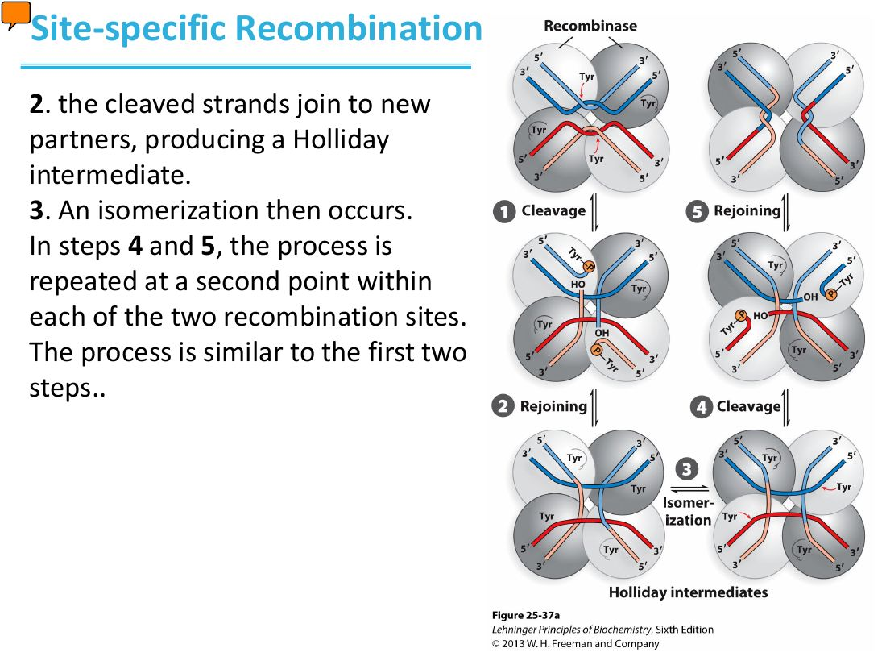
Site-specific Recombination
부위 특이적 재조합
2. the cleaved strands join to new partners, producing a Holliday intermediate.
2. 잘린 가닥들이 새 짝과 결합하여 홀리데이 중간체를 만든다.
3. An isomerization then occurs.
3. 그다음 이성질화가 일어난다.
In steps 4 and 5, the process is repeated at a second point within each of the two recombination sites. The process is similar to the first two steps..
4단계와 5단계에서는, 두 재조합 자리 각각의 두 번째 지점에서 이 과정이 반복된다. 이 과정은 처음 두 단계와 비슷하다.
Recombinase / ① Cleavage / ② Rejoining / ③ Isomerization / ④ Cleavage / ⑤ Rejoining / Holliday intermediates / Tyr / HO / OH
재조합효소 / ① 절단 / ② 재결합 / ③ 이성질화 / ④ 절단 / ⑤ 재결합 / 홀리데이 중간체 / Tyr / HO / OH
시험 포인트② 잘린 가닥이 새 짝과 결합 → 홀리데이 중간체, ③ 이성질화, ④·⑤ 두 번째 지점에서 절단·재결합 반복(처음 두 단계와 유사).
그림 해설·더 깊이까지 보기 →슬라이드 80부위 특이적 재조합의 결과는 재조합 자리의 위치와 방향에 달려 있다 (그림 25-38)기출 2TB 2원문·번역

site-specific recombination depends on the location and orientation of the recombination sites
부위 특이적 재조합(의 결과)은 재조합 자리의 위치와 방향에 달려 있다
Inversion or deletion : if recombination sites are on the same DNA
역위 또는 결실: 재조합 자리들이 같은 DNA 위에 있을 때
Intermolecular recombination: if recombination sites are on different DNAs
분자 간 재조합: 재조합 자리들이 서로 다른 DNA 위에 있을 때
Insertion: if DNA is circular
삽입: DNA가 원형일 때
(a) Inversion / Sites of exchange
(a) 역위 / 교환 자리
(b) Deletion and insertion / insertion / deletion / +
(b) 결실과 삽입 / 삽입 / 결실 / +
(a) Recombination sites with opposite orientation in the same DNA molecule. (b) Recombination sites with the same orientation, either on one DNA molecule, producing a deletion, or on two DNA molecules, producing an insertion.
(a) 같은 DNA 분자 안에서 방향이 반대인 재조합 자리. (b) 방향이 같은 재조합 자리로, 한 DNA 분자 위에 있으면 결실을, 두 DNA 분자 위에 있으면 삽입을 만든다.
기출 2건 · 테스트뱅크 2건 형광펜 = 실제로 물어본 문장TB 25-28
박테리오파지 λ는 세균에 감염된 후 용원화(lysogenize)할 수 있다. 즉, 부위 특이적 재조합에 의해 숙주 세균 염색체에 통합되며, 절제(excision) 사건이 바이러스 유전체를 감염성 형태로 재생하기 전까지 여러 세대 동안 그곳에 머물 수 있다. 다음 중 이 사건들의 구성요소가 아닌 것은?
- A 절제에는 숙주 단백질 2개와 바이러스가 암호화하는 단백질 2개가 필요하다.
- B 통합에는 인테그레이스(integrase)라 불리는 바이러스 특이적 단백질이 필요하다.
- C 삽입 재조합 사건을 촉매하기 위해 RecA 단백질이 필요하다.
- D 절제 사건은 통합 사건과는 다른 서열에 의존한다.
- E 바이러스 DNA와 숙주 DNA는 완벽히 상동인 15 bp의 '핵심(core)' 영역을 공유한다.
정답·포인트 C 삽입 재조합 사건을 촉매하기 위해 RecA 단백질이 필요하다. — 부위 특이적 재조합은 RecA(상동 재조합 단백질)가 필요 없다. 인테그레이스(+IHF), 절제 시 Xis·FIS 추가.
TB 25-52단답·서술
[서술] 부위 특이적 재조합 사건의 세 가지 가능한 결과(DNA 수준에서)를 제시하라. 각각에 대해, 재조합 부위들의 상대적 위치와 방향이 재조합 결과를 어떻게 결정하는지 간결하게(한 문장으로) 설명하라. 부위 특이적 재조합 시스템의 구체적인 예는 설명하지 마라.
정답·포인트 하나의 DNA 위 두 부위가 같은 방향이면, 재조합에 의해 DNA 조각이 결실(deletion)된다. 하나의 DNA 위 두 부위가 반대 방향이면, 역위(inversion)가 생긴다. 서로 다른 두 DNA(하나 또는 둘 다 원형)가 재조합하면, 삽입(insertion)이 일어난다. (1012쪽 그림 25-41 참조)
시험 포인트같은 DNA 위: 반대 방향 → 역위, 같은 방향 → 결실. 다른 DNA: 분자 간 재조합, 원형 DNA면 삽입. (b)의 '같은 방향' 자리가 한 분자 위면 결실, 두 분자면 삽입.
그림 해설·더 깊이까지 보기 →슬라이드 81전위성 유전 인자 (트랜스포존) — 단순 vs 복합 트랜스포존TB 1원문·번역
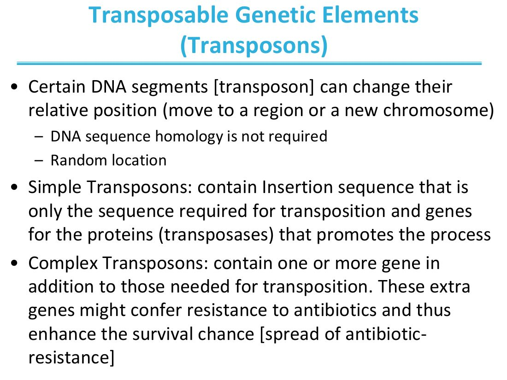
Transposable Genetic Elements (Transposons)
전위성 유전 인자 (트랜스포존)
Certain DNA segments [transposon] can change their relative position (move to a region or a new chromosome)
특정 DNA 조각[트랜스포존]은 상대적인 위치를 바꿀 수 있다(다른 부위나 새 염색체로 이동)
DNA sequence homology is not required
DNA 서열 상동성이 필요하지 않다
Random location
(삽입) 위치가 무작위이다
Simple Transposons: contain Insertion sequence that is only the sequence required for transposition and genes for the proteins (transposases) that promotes the process
단순 트랜스포존: 전위에 필요한 서열과, 그 과정을 촉진하는 단백질(전위효소, 트랜스포세이스)의 유전자로만 이루어진 삽입 서열(IS)을 가진다
Complex Transposons: contain one or more gene in addition to those needed for transposition. These extra genes might confer resistance to antibiotics and thus enhance the survival chance [spread of antibiotic-resistance]
복합 트랜스포존: 전위에 필요한 유전자 외에 하나 이상의 유전자를 더 가진다. 이 추가 유전자는 항생제 내성을 줄 수 있어 생존 가능성을 높인다[항생제 내성의 확산]
테스트뱅크 1건 형광펜 = 실제로 물어본 문장TB 25-53단답·서술
[서술] 세균 트랜스포존의 단순형과 복합형은 무엇으로 구별되는가?
정답·포인트 삽입 서열(insertion sequence)이라 불리는 단순형은 전위(transposition)에 필요한 정보와, 그 과정을 수행하는 단백질(전위효소, transposase)의 유전자만을 포함한다. 복합 트랜스포존 부류에 속하는 것들은 항생제 내성 유전자 같은 추가 유전자를 가지고 있어, 이를 지닌 모든 숙주 세균에게 그 특성을 부여한다.
시험 포인트트랜스포존: 상동성 불필요, 무작위 위치. 단순 트랜스포존 = 삽입 서열(전위 필요 서열 + 전위효소 유전자만), 복합 트랜스포존 = 추가 유전자(항생제 내성 등) → 항생제 내성 확산.
그림 해설·더 깊이까지 보기 →슬라이드 82트랜스포존의 삽입 — 표적 자리 서열의 중복 (그림 25-40)원문·번역
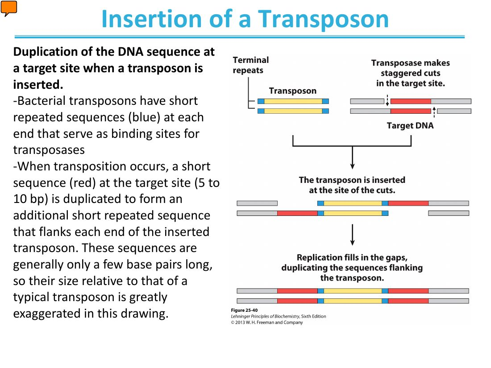
Insertion of a Transposon
트랜스포존의 삽입
Duplication of the DNA sequence at a target site when a transposon is inserted.
트랜스포존이 삽입될 때 표적 자리 DNA 서열의 중복.
Bacterial transposons have short repeated sequences (blue) at each end that serve as binding sites for transposases
세균 트랜스포존은 양 끝에 짧은 반복 서열(파랑)을 가지며, 이는 전위효소의 결합 자리 역할을 한다
When transposition occurs, a short sequence (red) at the target site (5 to 10 bp) is duplicated to form an additional short repeated sequence that flanks each end of the inserted transposon. These sequences are generally only a few base pairs long, so their size relative to that of a typical transposon is greatly exaggerated in this drawing.
전위가 일어나면 표적 자리의 짧은 서열(빨강, 5~10 bp)이 중복되어, 삽입된 트랜스포존의 양쪽 끝을 둘러싸는 추가적인 짧은 반복 서열을 형성한다. 이 서열들은 보통 몇 염기쌍 길이에 불과하므로, 이 그림에서는 전형적인 트랜스포존에 비해 크기가 크게 과장되어 있다.
Terminal repeats / Transposon
말단 반복 서열 / 트랜스포존
Transposase makes staggered cuts in the target site. / Target DNA
전위효소가 표적 자리에 엇갈린 절단을 만든다. / 표적 DNA
The transposon is inserted at the site of the cuts.
트랜스포존이 절단 자리에 삽입된다.
Replication fills in the gaps, duplicating the sequences flanking the transposon.
복제가 틈을 메우면서, 트랜스포존 양옆의 서열을 중복시킨다.
시험 포인트트랜스포존 양 끝 = 짧은 반복 서열(전위효소 결합 자리). 전위효소가 표적에 엇갈린 절단 → 삽입 → 복제가 틈을 메워 표적 서열(5~10 bp)이 양옆에 중복.
그림 해설·더 깊이까지 보기 →슬라이드 83복제적 전위 (1) — 직접(잘라 붙이기) vs 복제적(복사해 붙이기) (그림 25-41)TB 1원문·번역

Replicative Transposition
복제적 전위
Previous (direct/simple) transposition: "cut and paste"
앞의 (직접/단순) 전위: '잘라 붙이기'
Replicative transposition: "copy and paste"
복제적 전위: '복사해 붙이기'
Entire transposon is replicated
트랜스포존 전체가 복제된다
Two general pathways for transposition: direct (simple) and replicative.
전위의 두 가지 일반적 경로: 직접(단순) 전위와 복제적 전위.
1 The DNA is first cleaved on each side of the transposon, at the sites indicated by arrows. 2 The liberated 3'-hydroxyl groups at the ends of the transposon act as nucleophiles in a direct attack on phosphodiester bonds in the target DNA. The target phosphodiester bonds are staggered in the two DNA strands.
1 먼저 DNA가 트랜스포존 양쪽, 화살표로 표시된 자리에서 잘린다. 2 트랜스포존 끝에서 풀려난 3'-하이드록실기가 친핵체로 작용하여 표적 DNA의 인산다이에스터 결합을 직접 공격한다. 표적 쪽 인산다이에스터 결합(공격 위치)은 두 DNA 가닥에서 서로 엇갈려 있다.
Direct transposition / Replicative transposition / ① Cleavage
직접 전위 / 복제적 전위 / ① 절단
3' OH / HO 3' / Target DNA / ② Free ends of transposons attack target DNA
3' OH / HO 3' / 표적 DNA / ② 트랜스포존의 자유 끝이 표적 DNA를 공격
③ Gaps filled (left) or entire transposon replicated (right) / DNA polymerase / DNA ligase / replication
③ 틈이 메워짐(왼쪽) 또는 트랜스포존 전체가 복제됨(오른쪽) / DNA 중합효소 / DNA 연결효소 / 복제
Cointegrate / ④ Site-specific recombination (within transposon)
코인티그레이트(공동통합체) / ④ 부위 특이적 재조합(트랜스포존 내부)
테스트뱅크 1건 형광펜 = 실제로 물어본 문장TB 25-54단답·서술
[서술] 세균에서 전위의 두 가지 기전적 경로를 구별하는 것은 무엇이며, 공통합체(cointegrate)란 무엇인가?
정답·포인트 직접 전위(direct transposition)는 트랜스포존 자체를 새 위치로 옮기며, 원래 있던 DNA에는 이중가닥 절단을 남긴다(이는 수선되어야 한다). 전위하는 DNA는 표적 부위의 엇갈린 절단(staggered cut)에 삽입되고, 남은 틈은 복제가 채운다. 복제적 전위(replicative transposition)는 요소의 사본을 새 부위로 옮기고, 이전 위치에는 사본 하나를 남긴다; 공통합체 중간체는 트랜스포존의 완전한 사본 두 개를 가지며, 공여 영역이 표적 부위의 DNA와 공유결합으로 연결되어 있다. (1013쪽 그림 25-44, 1014쪽 그림 25-45 참조)
시험 포인트직접(단순) 전위 = 잘라 붙이기, 복제적 전위 = 복사해 붙이기(트랜스포존 전체 복제). ① 트랜스포존 양쪽 절단 → ② 풀려난 3'-OH가 친핵체로 표적 DNA 인산다이에스터 결합 직접 공격(표적 결합은 두 가닥에서 엇갈림).
그림 해설·더 깊이까지 보기 →슬라이드 84복제적 전위 (2) — 코인티그레이트와 그 해소 (그림 25-41)기출 2TB 1원문·번역
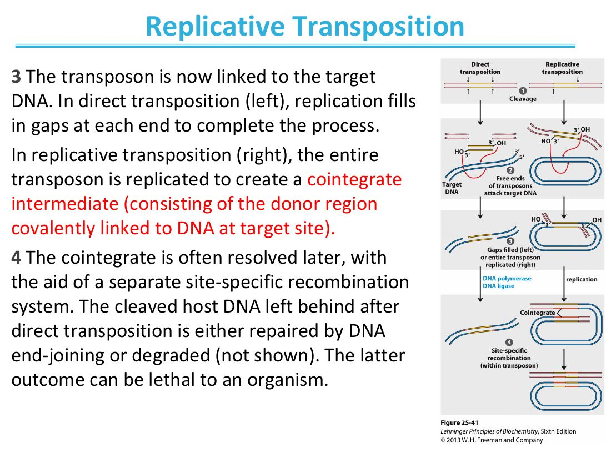
Replicative Transposition
복제적 전위
3 The transposon is now linked to the target DNA. In direct transposition (left), replication fills in gaps at each end to complete the process.
3 이제 트랜스포존이 표적 DNA에 연결되었다. 직접 전위(왼쪽)에서는 양쪽 끝의 틈을 복제가 채워 과정이 완료된다.
In replicative transposition (right), the entire transposon is replicated to create a cointegrate intermediate (consisting of the donor region covalently linked to DNA at target site).
복제적 전위(오른쪽)에서는 트랜스포존 전체가 복제되어 코인티그레이트 중간체(공여 부위가 표적 자리의 DNA에 공유결합으로 연결된 것)를 만든다.
4 The cointegrate is often resolved later, with the aid of a separate site-specific recombination system. The cleaved host DNA left behind after direct transposition is either repaired by DNA end-joining or degraded (not shown). The latter outcome can be lethal to an organism.
4 코인티그레이트는 흔히 나중에 별도의 부위 특이적 재조합 체계의 도움으로 해소된다. 직접 전위 후 남겨진 잘린 숙주 DNA는 DNA 말단 연결로 수선되거나 분해된다(그림에 표시 안 됨). 후자의 결과는 생물에게 치명적일 수 있다.
Direct transposition / Replicative transposition / ① Cleavage / ② Free ends of transposons attack target DNA / ③ Gaps filled (left) or entire transposon replicated (right) / DNA polymerase / DNA ligase / replication / Cointegrate / ④ Site-specific recombination (within transposon)
직접 전위 / 복제적 전위 / ① 절단 / ② 트랜스포존의 자유 끝이 표적 DNA를 공격 / ③ 틈이 메워짐(왼쪽) 또는 트랜스포존 전체 복제(오른쪽) / DNA 중합효소 / DNA 연결효소 / 복제 / 코인티그레이트 / ④ 부위 특이적 재조합(트랜스포존 내부)
기출 2건 · 테스트뱅크 1건 형광펜 = 실제로 물어본 문장2017 퀴즈단답·서술
[빈칸] In replicative transposition, the entire transposon is replicated to create a ( ) intermediate … The ( ) is often resolved later, with the aid of a separate site-specific recombination system.
정답·포인트 cointegrate — 슬라이드 빨간 문장을 그대로 빈칸으로 냈어요.
시험 포인트③ 직접 전위 = 양 끝 틈만 복제로 메움, 복제적 전위 = 트랜스포존 전체 복제 → 코인티그레이트(공여 부위가 표적 DNA에 공유결합 연결). ④ 코인티그레이트는 별도의 부위 특이적 재조합으로 해소. 직접 전위 후 남은 숙주 DNA = 말단 연결로 수선 또는 분해(치명적일 수 있음).
그림 해설·더 깊이까지 보기 →슬라이드 85면역글로불린 유전자는 재조합으로 조립된다TB 1원문·번역
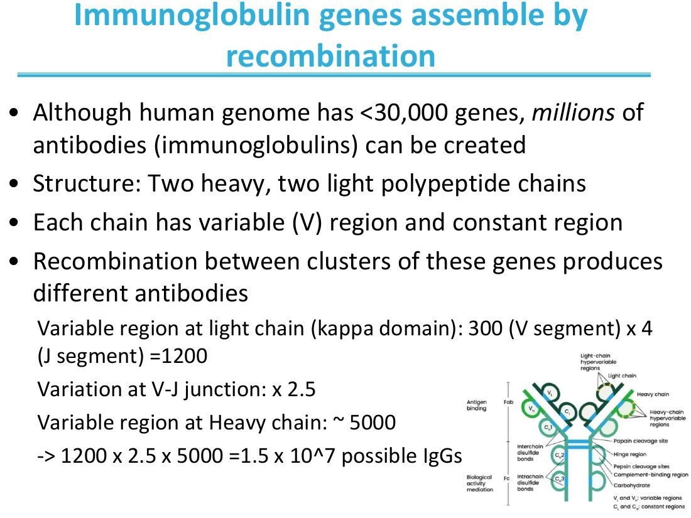
Immunoglobulin genes assemble by recombination
면역글로불린 유전자는 재조합으로 조립된다
Although human genome has <30,000 genes, millions of antibodies (immunoglobulins) can be created
사람 유전체는 유전자가 30,000개 미만인데도, 수백만 가지의 항체(면역글로불린)를 만들 수 있다
Structure: Two heavy, two light polypeptide chains
구조: 무거운 사슬(중쇄) 2개, 가벼운 사슬(경쇄) 2개의 폴리펩타이드 사슬
Each chain has variable (V) region and constant region
각 사슬은 가변(V) 부위와 불변 부위를 가진다
Recombination between clusters of these genes produces different antibodies
이 유전자 묶음들 사이의 재조합이 서로 다른 항체를 만든다
Variable region at light chain (kappa domain): 300 (V segment) x 4 (J segment) =1200
경쇄(카파 도메인)의 가변 부위: 300(V 조각) × 4(J 조각) = 1,200
Variation at V-J junction: x 2.5
V–J 접합부에서의 변이: × 2.5
Variable region at Heavy chain: ~ 5000
중쇄의 가변 부위: 약 5,000
-> 1200 x 2.5 x 5000 =1.5 x 10^7 possible IgGs
→ 1,200 × 2.5 × 5,000 = 1.5 × 10⁷가지의 가능한 IgG
Light-chain hypervariable regions / Light chain / Heavy chain / Heavy-chain hypervariable regions
경쇄 초가변 부위 / 경쇄 / 중쇄 / 중쇄 초가변 부위
Antigen binding / Fab / Biological activity mediation / Fc
항원 결합 / Fab / 생물학적 활성 매개 / Fc
V_L / V_H / C_L / C_H1 / C_H2 / C_H3
V_L / V_H / C_L / C_H1 / C_H2 / C_H3
Interchain disulfide bonds / Intrachain disulfide bonds
사슬 간 이황화 결합 / 사슬 내 이황화 결합
Papain cleavage site / Hinge region / Pepsin cleavage sites / Complement-binding region / Carbohydrate
파파인 절단 자리 / 경첩 부위 / 펩신 절단 자리 / 보체 결합 부위 / 탄수화물
V_L and V_H: variable regions / C_L and C_H: constant regions
V_L과 V_H: 가변 부위 / C_L과 C_H: 불변 부위
테스트뱅크 1건 형광펜 = 실제로 물어본 문장TB 25-55단답·서술
[서술] 항체(면역글로불린) 다양성 생성에서 재조합의 역할을 간략히 설명하라.
정답·포인트 면역글로불린 폴리펩타이드 사슬의 유전자는 여러 분절로 나뉘어 있으며, 각 분절에는 여러 버전(약간씩 다른 아미노산 서열을 암호화)이 있다. 재조합에 의해 각 분절의 개별 버전들이 연결되어 완전한 유전자가 만들어진다. 가능한 서로 다른 조합의 수가 매우 많기 때문에 항체 다양성이 생긴다. (1015쪽 그림 25-46 참조)
V-J(경쇄), V-D-J(중쇄) 재조합 — RAG1/RAG2 재조합효소.
시험 포인트유전자 <30,000개로 항체 수백만 가지. 구조 = 중쇄 2 + 경쇄 2, 각 사슬 = 가변(V) + 불변. 계산: 경쇄 V 300 × J 4 = 1,200, V–J 접합 ×2.5, 중쇄 ~5,000 → 1.5 × 10⁷ IgG. 숫자 그대로 출제 가능!
그림 해설·더 깊이까지 보기 →슬라이드 86사람 IgG 카파 경쇄의 V·J 유전자 조각 재조합 (그림 25-42)TB 1원문·번역

Recombination of the V and J Gene Segments of the Human IgG Kappa Light Chain
사람 IgG 카파 경쇄의 V와 J 유전자 조각의 재조합
Recombination of the V and J gene segments of the human IgG kappa light chain. This process is designed to generate antibody diversity. At the top is shown the arrangement of IgG-coding sequences in a stem cell of the bone marrow. Recombination deletes the DNA between a particular V segment and a J segment. After transcription, the transcript is processed by RNA splicing, as described in Chapter 26; translation produces the light-chain polypeptide. The light chain can combine with any of 5,000 possible heavy chains to produce an antibody molecule.
사람 IgG 카파 경쇄의 V와 J 유전자 조각의 재조합. 이 과정은 항체 다양성을 만들어내도록 되어 있다. 맨 위는 골수 줄기세포에서 IgG를 암호화하는 서열의 배열이다. 재조합은 특정 V 조각과 J 조각 사이의 DNA를 결실시킨다. 전사 후, 전사체는 26장에서 설명할 RNA 스플라이싱으로 가공되고; 번역으로 경쇄 폴리펩타이드가 만들어진다. 이 경쇄는 가능한 5,000가지 중쇄 중 어느 것과도 결합하여 항체 분자를 만들 수 있다.
V segments (1 to ~300) / J segments / C segment / V₁ V₂ V₃ … V₃₀₀ / J₁ J₂ J₄ J₅ / C / Germ-line DNA
V 조각(1~약 300) / J 조각 / C 조각 / V₁ V₂ V₃ … V₃₀₀ / J₁ J₂ J₄ J₅ / C / 생식계열 DNA
recombination resulting in deletion of DNA between V and J segments / Mature light-chain gene / V₈₄ J₄ J₅ C / DNA of B lymphocyte
V와 J 조각 사이 DNA의 결실을 일으키는 재조합 / 성숙한 경쇄 유전자 / V₈₄ J₄ J₅ C / B 림프구의 DNA
transcription / 3' V₈₄ J₄ J₅ C 5' / Primary transcript
전사 / 3' V₈₄ J₄ J₅ C 5' / 1차 전사체
removal of sequences between J₄ and C by mRNA splicing / V₈₄ J₄ C / Processed mRNA
mRNA 스플라이싱으로 J₄와 C 사이 서열 제거 / V₈₄ J₄ C / 가공된 mRNA
translation / Light-chain polypeptide / Variable region / Constant region
번역 / 경쇄 폴리펩타이드 / 가변 부위 / 불변 부위
protein folding and assembly / Light chain / Heavy chain / Antibody molecule
단백질 접힘과 조립 / 경쇄 / 중쇄 / 항체 분자
테스트뱅크 1건 형광펜 = 실제로 물어본 문장 시험 포인트생식계열 DNA: V 1~약 300, J, C. 재조합 = 특정 V와 J 사이 DNA 결실(골수 줄기세포 → B 림프구) → 전사 → 스플라이싱으로 J와 C 사이 제거 → 번역 → 경쇄(가변+불변) → 중쇄 5,000가지 중 하나와 결합 → 항체.
그림 해설·더 깊이까지 보기 →슬라이드 87재조합의 메커니즘 — RSS와 RAG1·RAG2기출 1원문·번역
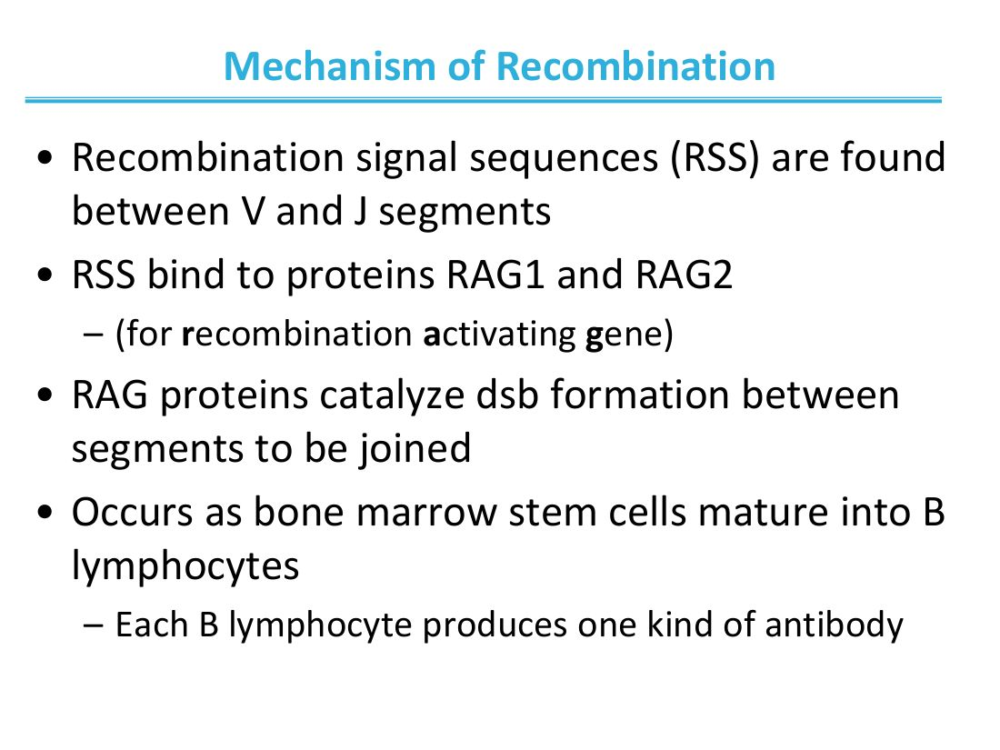
Mechanism of Recombination
재조합의 메커니즘
Recombination signal sequences (RSS) are found between V and J segments
재조합 신호 서열(RSS)이 V와 J 조각 사이에 있다
RSS bind to proteins RAG1 and RAG2
RSS는 RAG1과 RAG2 단백질과 결합한다
(for recombination activating gene)
(recombination activating gene, 재조합 활성화 유전자의 약자)
RAG proteins catalyze dsb formation between segments to be joined
RAG 단백질은 연결될 조각들 사이에서 이중가닥 절단(dsb) 형성을 촉매한다
Occurs as bone marrow stem cells mature into B lymphocytes
골수 줄기세포가 B 림프구로 성숙할 때 일어난다
Each B lymphocyte produces one kind of antibody
각 B 림프구는 한 종류의 항체만 만든다
시험 포인트RSS = V와 J 사이, RAG1·RAG2(recombination activating gene)가 RSS에 결합 → 연결될 조각 사이 이중가닥 절단. 시기 = 골수 줄기세포 → B 림프구 성숙. B 림프구 1개 = 항체 1종.
그림 해설·더 깊이까지 보기 →슬라이드 88IgG 유전자 재배열의 메커니즘 (그림 25-43)기출 1원문·번역
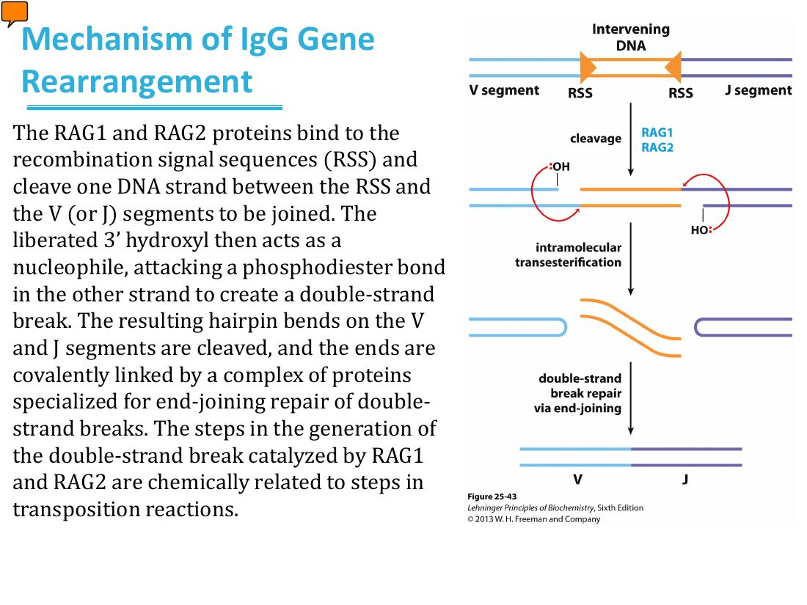
Mechanism of IgG Gene Rearrangement
IgG 유전자 재배열의 메커니즘
The RAG1 and RAG2 proteins bind to the recombination signal sequences (RSS) and cleave one DNA strand between the RSS and the V (or J) segments to be joined. The liberated 3' hydroxyl then acts as a nucleophile, attacking a phosphodiester bond in the other strand to create a double-strand break. The resulting hairpin bends on the V and J segments are cleaved, and the ends are covalently linked by a complex of proteins specialized for end-joining repair of double-strand breaks. The steps in the generation of the double-strand break catalyzed by RAG1 and RAG2 are chemically related to steps in transposition reactions.
RAG1과 RAG2 단백질은 재조합 신호 서열(RSS)에 결합하여, RSS와 연결될 V(또는 J) 조각 사이의 DNA 한 가닥을 자른다. 그러면 풀려난 3' 하이드록실이 친핵체로 작용하여 다른 가닥의 인산다이에스터 결합을 공격해 이중가닥 절단을 만든다. 그 결과 V와 J 조각에 생긴 머리핀 굽이를 자르고, 이중가닥 절단의 말단 연결 수선에 특화된 단백질 복합체가 그 끝들을 공유결합으로 연결한다. RAG1과 RAG2가 촉매하는 이중가닥 절단 생성 단계는 전위 반응의 단계들과 화학적으로 관련되어 있다.
Intervening DNA / V segment / RSS / RSS / J segment
사이에 낀 DNA / V 조각 / RSS / RSS / J 조각
cleavage / RAG1 / RAG2 / OH / HO
절단 / RAG1 / RAG2 / OH / HO
intramolecular transesterification
분자 내 전이에스터화
double-strand break repair via end-joining / V / J
말단 연결을 통한 이중가닥 절단 수선 / V / J
시험 포인트RAG1·2가 RSS에 결합 → RSS와 V(J) 사이 한 가닥 절단 → 풀려난 3'-OH가 친핵체로 다른 가닥 공격(분자 내 전이에스터화) → 이중가닥 절단 → V·J 끝 머리핀 → 머리핀 절단 → 말단 연결 수선 단백질이 연결. RAG 반응 = 전위 반응과 화학적으로 관련.
그림 해설·더 깊이까지 보기 →시험 직전 체크리스트
- 복제 3규칙과 증명 실험 짝(메셀슨-스탈 ¹⁵N→¹⁴N·CsCl / 케언스 ³H·θ / 인만 부분 변성), 선도·지연·오카자키.
- 중합 반응: dNTP, 3'-OH → α-인산, 피로인산(β+γ), Mg²⁺ 2개 역할(위·아래), Asp 3개. 주형 + 프라이머(주로 RNA).
- 표 25-1(Pol I·II·III 숫자 전부), Pol I 부적합 이유, 5'→3' 엑소는 Pol I만, 클레노 절편, 닉 번역.
- 표 25-2(Pol III 소단위 α·ε·θ·τ·γ·δ·δ'·χ·ψ·β와 유전자), β 클램프 4개, γ 복합체 τ₂γδδ'.
- oriC(R 9 bp×5, DUE 13 bp×3, I, IHF·FIS), 표 25-3, DnaA 8개·DnaC·DnaB 순서, AAA+ 목록, Hda, Dam/SeqA(막 격리).
- 트롬본 모델 (a)~(e), 클램프 로더 ATP 3개, 연결효소 3단계(Lys–AMP, 대장균 NAD⁺), Ter·Tus.
- 진핵: ARS ~400, 사이클린 없을 때 pre-RC, ORC·MCM2-7·CDC6·CDT1 대응, Pol α/δ/ε 역할, 아사이클로버.
- 에임스 시험, 표 25-5 손상–경로–효소, 메틸 지시 불일치 수선(MutS·L·H, 1,000 bp, 엑소 방향별 이름, Pol III), MSH2–MSH6 vs MSH2–MSH3.
- BER 4단계, C→U·G-C→A-T, NER 숫자(5·8 / 6·22, 13 vs 29 mer), UvrB 3'·UvrC 5', 직접 수선 3종(광분해효소 두 발색단, AlkB α-KG/Fe²⁺).
- SOS 표 25-6, Pol V = UmuD'₂UmuC·RecA, Pol IV = dinB, Umu = Unmutable, Pol η, XP·HNPCC·BRCA 짝.
- RecBCD 소단위 극성·chi(GCTGGTGG), RecA 핵 형성·연장(5'→3'), RuvA·RuvB·RuvC, 재개 프라이모솜(PriA·B·C·DnaT).
- 코헤신 Rad21 vs Rec8, DSB 수선 모델 ①~⑤·산물 세트 1/2, 여성 감수분열 정지·나이, Tyr형 vs Ser형, 역위·결실·삽입, 트랜스포존, 1.5×10⁷, RAG.